No matching symbols. Try a different name or clear the search.
Cat animal aac.cat-animal
Symbol meaning: Cat animal.
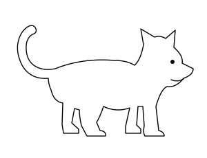
Swell paper Index embossed ViewPlus variable height Editable master: cat-animal-viewplus-shaded-v02.svg Teaching key Design notes and limitations Cow animal aac.cow-animal
Symbol meaning: Cow animal.
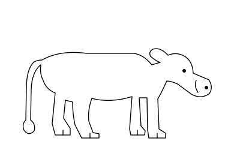
Swell paper Index embossed ViewPlus variable height Editable master: cow-animal-viewplus-shaded-v02.svg Teaching key Design notes and limitations Dog animal aac.dog-animal
Symbol meaning: Dog animal.
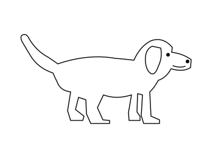
Swell paper Index embossed ViewPlus variable height Editable master: dog-animal-viewplus-shaded-v02.svg Teaching key Design notes and limitations Crayon tool aac.crayon-tool
Symbol meaning: Crayon tool.
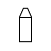
Swell paper Index embossed ViewPlus variable height Editable master: crayon-tool-v03.svg Design notes and limitations Drum instrument aac.drum-instrument
Symbol meaning: Drum instrument.
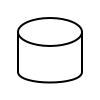
Swell paper Index embossed ViewPlus variable height Editable master: drum-instrument-v03.svg Design notes and limitations Tambourine instrument aac.tambourine-instrument
Symbol meaning: Tambourine instrument.
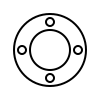
Swell paper Index embossed ViewPlus variable height Editable master: tambourine-instrument-v03.svg Design notes and limitations Belt garment aac.belt-garment
Symbol meaning: Belt garment.
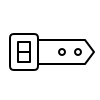
Swell paper Index embossed ViewPlus variable height Editable master: belt-garment-v03.svg Design notes and limitations Trousers aac.trousers
Symbol meaning: Trousers.
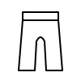
Swell paper Index embossed ViewPlus variable height Editable master: trousers-v03.svg Design notes and limitations Button fastener aac.button-fastener
Symbol meaning: Button fastener.
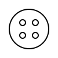
Swell paper Index embossed ViewPlus variable height Editable master: button-fastener-v03.svg Design notes and limitations Boot footwear aac.boot-footwear
Symbol meaning: Boot footwear.
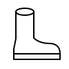
Swell paper Index embossed ViewPlus variable height Editable master: boot-footwear-v03.svg Design notes and limitations Shoe aac.shoe
Symbol meaning: Shoe.
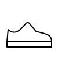
Swell paper Index embossed ViewPlus variable height Editable master: shoe-v03.svg Design notes and limitations Sock aac.sock
Symbol meaning: Sock.
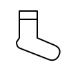
Swell paper Index embossed ViewPlus variable height Editable master: sock-v03.svg Design notes and limitations Dress garment aac.dress-garment
Symbol meaning: Dress garment.
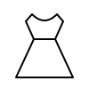
Swell paper Index embossed ViewPlus variable height Editable master: dress-garment-v03.svg Design notes and limitations Glove garment aac.glove-garment
Symbol meaning: Glove garment.
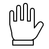
Swell paper Index embossed ViewPlus variable height Editable master: glove-garment-v04.svg Design notes and limitations Hat aac.hat
Symbol meaning: Hat.
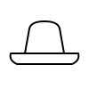
Swell paper Index embossed ViewPlus variable height Editable master: hat-v03.svg Design notes and limitations Coat aac.coat
Symbol meaning: Coat.
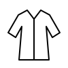
Swell paper Index embossed ViewPlus variable height Editable master: coat-v03.svg Design notes and limitations Apron garment aac.apron-garment
Symbol meaning: Apron garment.
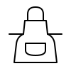
Swell paper Index embossed ViewPlus variable height Editable master: apron-garment-v03.svg Design notes and limitations T shirt aac.t-shirt
Symbol meaning: T shirt.
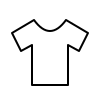
Swell paper Index embossed ViewPlus variable height Editable master: t-shirt-v03.svg Design notes and limitations Earth four layer section edu.earth-four-layer-section
Symbol meaning: Earth four layer section.
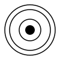
Swell paper Index embossed ViewPlus variable height Editable master: earth-four-layer-section.svg Design notes and limitations Earthquake focus epicentre edu.earthquake-focus-epicentre
Symbol meaning: Earthquake focus epicentre.
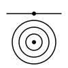
Swell paper Index embossed ViewPlus variable height Editable master: earthquake-focus-epicentre.svg Design notes and limitations Sediment sorting comparison edu.sediment-sorting-comparison
Symbol meaning: Sediment sorting comparison.
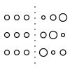
Swell paper Index embossed ViewPlus variable height Editable master: sediment-sorting-comparison.svg Design notes and limitations Arch trough fold comparison edu.arch-trough-fold-comparison
Symbol meaning: Arch trough fold comparison.
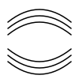
Swell paper Index embossed ViewPlus variable height Editable master: arch-trough-fold-comparison.svg Design notes and limitations Normal reverse fault comparison edu.normal-reverse-fault-comparison
Symbol meaning: Normal reverse fault comparison.
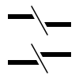
Swell paper Index embossed ViewPlus variable height Editable master: normal-reverse-fault-comparison.svg Design notes and limitations Adult female orb-weaver internal body plan edu.spider-internal-section-model
Symbol meaning: Adult female orb-weaver internal body plan.
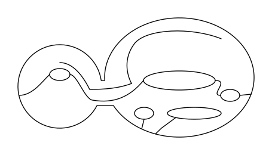
Swell paper Index embossed ViewPlus variable height Editable master: spider-internal-section-model.svg Design notes and limitations Artery wall layer section edu.artery-wall-layer-section
Symbol meaning: Artery wall layer section.
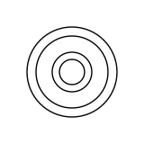
Swell paper Index embossed ViewPlus variable height Editable master: artery-wall-layer-section.svg Design notes and limitations Capillary endothelial wall section edu.capillary-endothelial-wall-section
Symbol meaning: Capillary endothelial wall section.
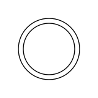
Swell paper Index embossed ViewPlus variable height Editable master: capillary-endothelial-wall-section.svg Design notes and limitations Vein wall layer section edu.vein-wall-layer-section
Symbol meaning: Vein wall layer section.
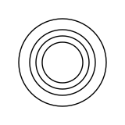
Swell paper Index embossed ViewPlus variable height Editable master: vein-wall-layer-section.svg Design notes and limitations Human body cavity position plan edu.human-body-cavity-position-plan
Symbol meaning: Human body cavity position plan.
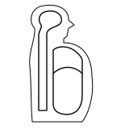
Swell paper Index embossed ViewPlus variable height Editable master: human-body-cavity-position-plan.svg Design notes and limitations Long bone cortex marrow section edu.long-bone-cortex-marrow-section
Symbol meaning: Long bone cortex marrow section.
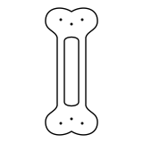
Swell paper Index embossed ViewPlus variable height Editable master: long-bone-cortex-marrow-section-v02-viewplus-shaded-v02.svg Design notes and limitations Brain cerebral cortex part focus edu.brain-cerebral-cortex-part-focus
Symbol meaning: Brain cerebral cortex part focus.
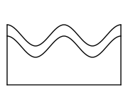
Swell paper Index embossed ViewPlus variable height Editable master: brain-cerebral-cortex-part-focus.svg Design notes and limitations Four mammal forelimb homology model edu.four-mammal-forelimb-homology-model
Symbol meaning: Four mammal forelimb homology model.
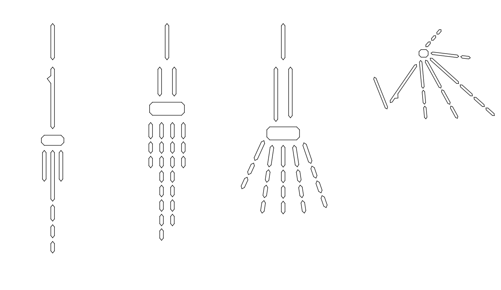
Swell paper Index embossed ViewPlus variable height Editable master: four-mammal-forelimb-homology-model.svg Teaching key Design notes and limitations Adult mandibular dental arch edu.adult-mandibular-dental-arch
Symbol meaning: Adult mandibular dental arch.
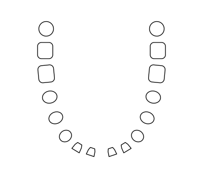
Swell paper Index embossed ViewPlus variable height Editable master: adult-mandibular-dental-arch-315-id-repair-v02.svg Design notes and limitations Adult maxillary dental arch edu.adult-maxillary-dental-arch
Symbol meaning: Adult maxillary dental arch.
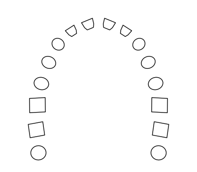
Swell paper Index embossed ViewPlus variable height Editable master: adult-maxillary-dental-arch-315-id-repair-v02.svg Design notes and limitations Carnivore herbivore dentition comparison edu.carnivore-herbivore-dentition-comparison
Symbol meaning: Carnivore herbivore dentition comparison.
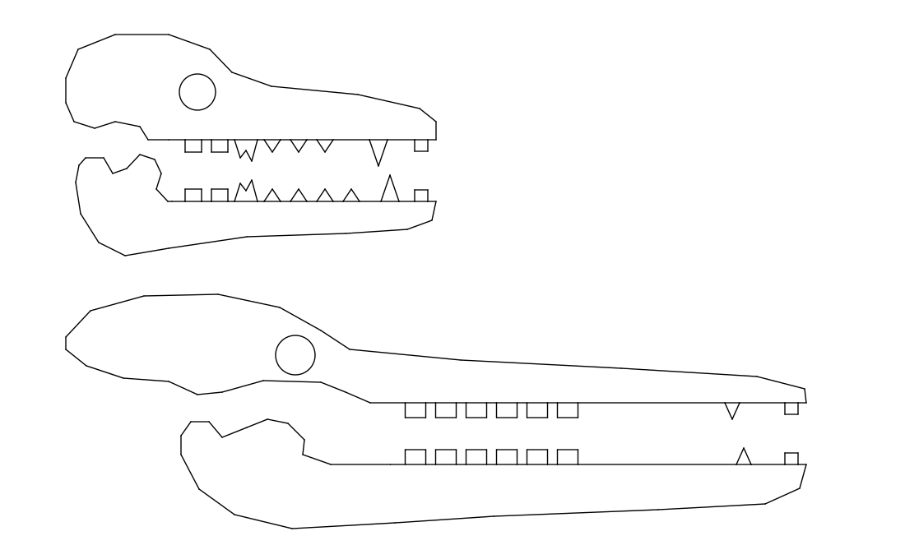
Swell paper Index embossed ViewPlus variable height Editable master: carnivore-herbivore-dentition-comparison.svg Teaching key Design notes and limitations Primary dentition arch model edu.primary-dentition-arch-model
Symbol meaning: Primary dentition arch model.
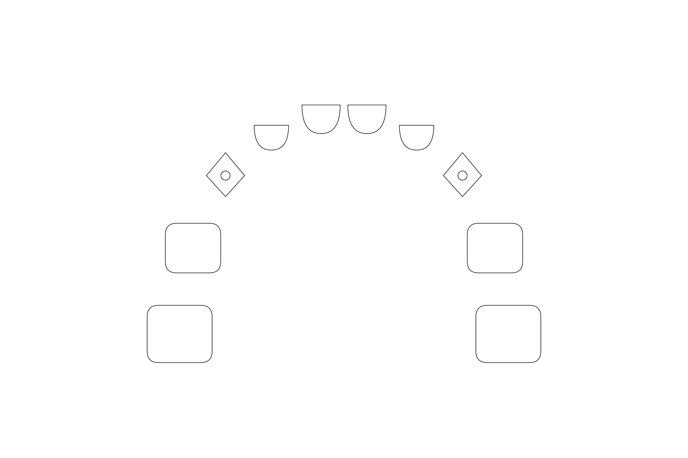
Swell paper Index embossed ViewPlus variable height Editable master: primary-dentition-arch-model.svg Design notes and limitations Digestive mouth to anus route edu.digestive-mouth-to-anus-route
Symbol meaning: Digestive mouth to anus route.
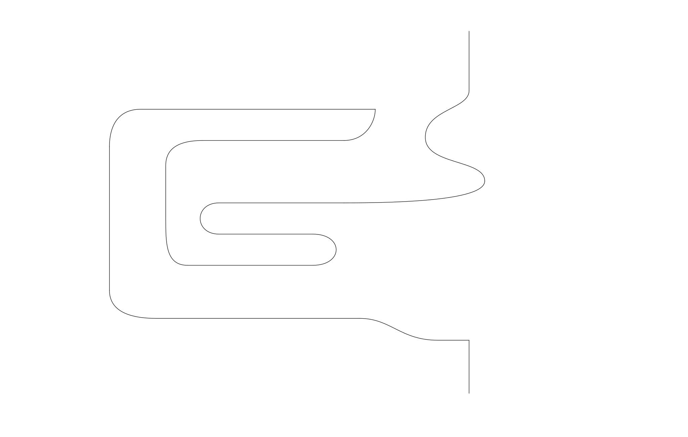
Swell paper Index embossed ViewPlus variable height Editable master: digestive-mouth-to-anus-route.svg Design notes and limitations Upper digestive tract route edu.upper-digestive-tract-route
Symbol meaning: Upper digestive tract route.
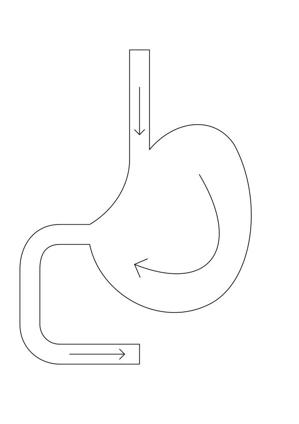
Swell paper Index embossed ViewPlus variable height Editable master: upper-digestive-tract-route.svg Design notes and limitations Human tibia fibula position comparison edu.human-tibia-fibula-position-comparison
Symbol meaning: Human tibia fibula position comparison.
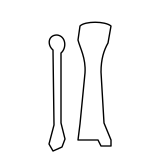
Swell paper Index embossed ViewPlus variable height Editable master: human-tibia-fibula-position-comparison-viewplus-shaded-v02.svg Design notes and limitations Bat forelimb digit skeleton edu.bat-forelimb-digit-skeleton
Symbol meaning: Bat forelimb digit skeleton.
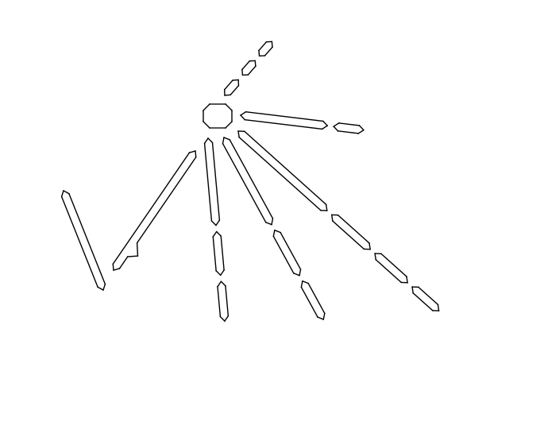
Swell paper Index embossed ViewPlus variable height Editable master: bat-forelimb-digit-skeleton.svg Teaching key Design notes and limitations Horse forelimb skeleton model edu.horse-forelimb-skeleton-model
Symbol meaning: Horse forelimb skeleton model.
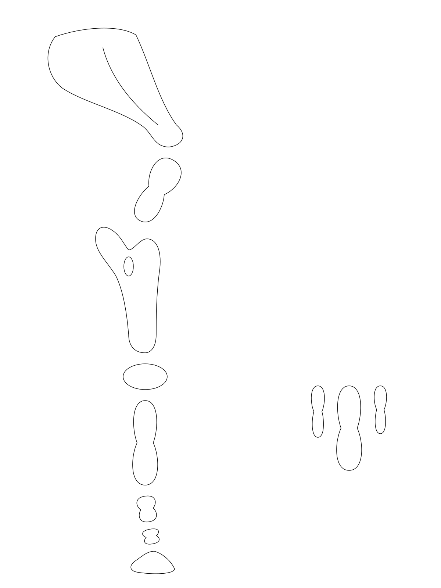
Swell paper Index embossed ViewPlus variable height Editable master: horse-forelimb-skeleton-model.svg Teaching key Teaching key Design notes and limitations Mole forelimb skeleton model edu.mole-forelimb-skeleton-model
Symbol meaning: Mole forelimb skeleton model.
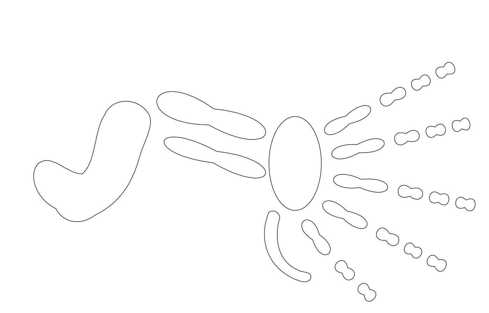
Swell paper Index embossed ViewPlus variable height Editable master: mole-forelimb-skeleton-model.svg Teaching key Teaching key Design notes and limitations Monkey forelimb skeleton model edu.monkey-forelimb-skeleton-model
Symbol meaning: Monkey forelimb skeleton model.
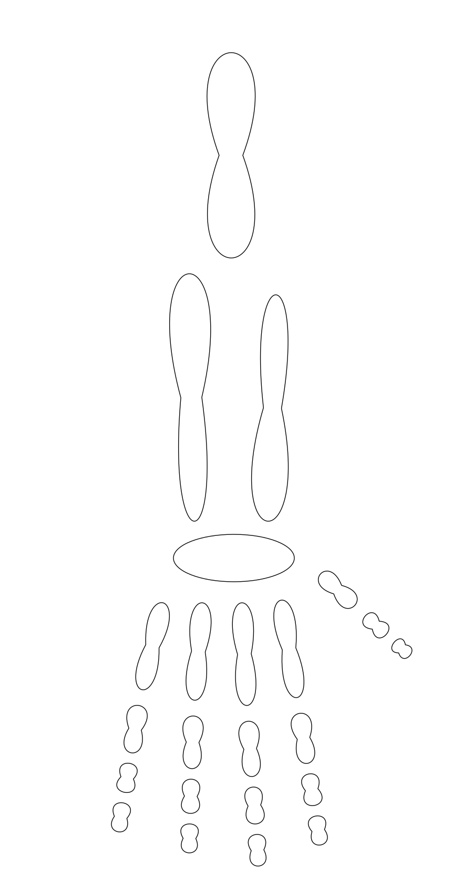
Swell paper Index embossed ViewPlus variable height Editable master: monkey-forelimb-skeleton-model.svg Teaching key Teaching key Design notes and limitations Whale forelimb skeleton model edu.whale-forelimb-skeleton-model
Symbol meaning: Whale forelimb skeleton model.
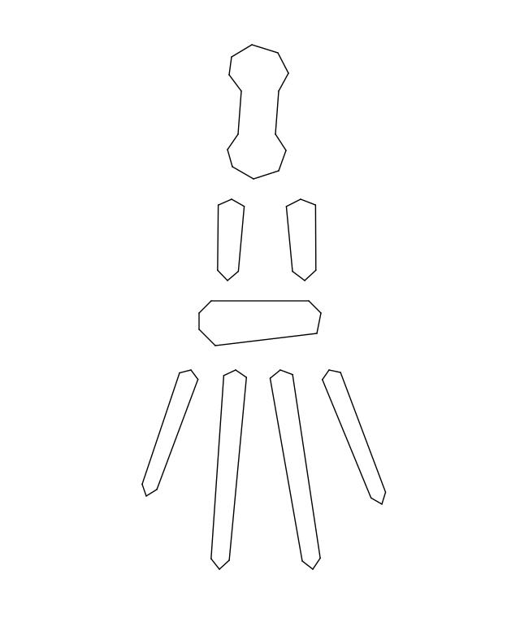
Swell paper Index embossed ViewPlus variable height Editable master: whale-forelimb-skeleton-model.svg Teaching key Design notes and limitations Feather object profile edu.feather-object-profile
Symbol meaning: Feather object profile.
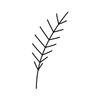
Swell paper Index embossed ViewPlus variable height Editable master: feather-object-profile-v02.svg Design notes and limitations Bird external side profile edu.bird-external-side-profile
Symbol meaning: Bird external side profile.
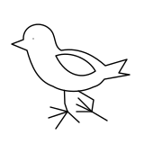
Swell paper Index embossed ViewPlus variable height Editable master: bird-external-side-profile-v02-viewplus-shaded-v02.svg Design notes and limitations Chicken external side profile edu.chicken-external-side-profile
Symbol meaning: Chicken external side profile.
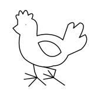
Swell paper Index embossed ViewPlus variable height Editable master: chicken-external-side-profile-v02-viewplus-shaded-v02.svg Design notes and limitations Sand dollar test upper surface edu.sand-dollar-test-upper-surface
Symbol meaning: Sand dollar test upper surface.
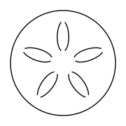
Swell paper Index embossed ViewPlus variable height Editable master: sand-dollar-test-upper-surface-viewplus-shaded-v02.svg Design notes and limitations Butterfly animal aac.butterfly-animal
Symbol meaning: Butterfly animal.
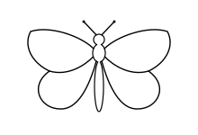
Swell paper Index embossed ViewPlus variable height Editable master: butterfly-animal-v02.svg Design notes and limitations Lion animal aac.lion-animal
Symbol meaning: Lion animal.
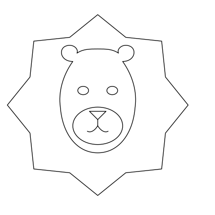
Swell paper Index embossed ViewPlus variable height Editable master: lion-animal-viewplus-shaded-v02.svg Design notes and limitations Reindeer external profile edu.reindeer-external-profile
Symbol meaning: Reindeer external profile.
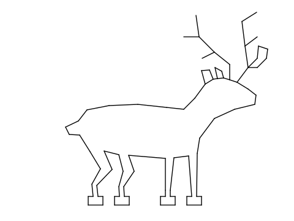
Swell paper Index embossed ViewPlus variable height Editable master: reindeer-external-profile.svg Teaching key Design notes and limitations Plesiosaur external model edu.plesiosaur-external-model
Symbol meaning: Plesiosaur external model.
Swell paper Index embossed ViewPlus variable height Editable master: plesiosaur-external-model-viewplus-shaded-v02.svg Design notes and limitations Monkey animal aac.monkey-animal
Symbol meaning: Monkey animal.
Swell paper Index embossed ViewPlus variable height Editable master: monkey-animal-viewplus-shaded-v02.svg Teaching key Design notes and limitations Pinniped ball contact context edu.pinniped-ball-contact-context
Symbol meaning: Pinniped ball contact context.
Swell paper Index embossed ViewPlus variable height Editable master: pinniped-ball-contact-context-viewplus-shaded-v02.svg Teaching key Design notes and limitations Tiger animal aac.tiger-animal
Symbol meaning: Tiger animal.
Swell paper Index embossed ViewPlus variable height Editable master: tiger-animal-viewplus-shaded-v02.svg Teaching key Design notes and limitations Roman aqueduct tiered layout edu.roman-aqueduct-tiered-layout
Symbol meaning: Roman aqueduct tiered layout.
Swell paper Index embossed ViewPlus variable height Editable master: roman-aqueduct-tiered-layout.svg Design notes and limitations Lamassu winged bull side example edu.lamassu-winged-bull-side-example
Symbol meaning: Lamassu winged bull side example.
Swell paper Index embossed ViewPlus variable height Editable master: lamassu-winged-bull-side-example.svg Design notes and limitations Vitruvian two pose proportion context edu.vitruvian-two-pose-proportion-context
Symbol meaning: Vitruvian two pose proportion context.
Swell paper Index embossed ViewPlus variable height Editable master: vitruvian-two-pose-proportion-context.svg Teaching key Design notes and limitations Apparent daily sun path edu.apparent-daily-sun-path
Symbol meaning: Apparent daily sun path.
Swell paper Index embossed ViewPlus variable height Editable master: apparent-daily-sun-path.svg Design notes and limitations Elliptical galaxy stellar profile edu.elliptical-galaxy-stellar-profile
Symbol meaning: Elliptical galaxy stellar profile.
Swell paper Index embossed ViewPlus variable height Editable master: elliptical-galaxy-stellar-profile.svg Design notes and limitations Hertzsprung russell diagram model edu.hertzsprung-russell-diagram-model
Symbol meaning: Hertzsprung russell diagram model.
Swell paper Index embossed ViewPlus variable height Editable master: hertzsprung-russell-diagram-model-441-draft-v01.svg Teaching key Design notes and limitations Pioneer10 external configuration model edu.pioneer10-external-configuration-model
Symbol meaning: Pioneer10 external configuration model.
Swell paper Index embossed ViewPlus variable height Editable master: pioneer10-external-configuration-model.svg Design notes and limitations Van allen radiation belt section edu.van-allen-radiation-belt-section
Symbol meaning: Van allen radiation belt section.
Swell paper Index embossed ViewPlus variable height Editable master: van-allen-radiation-belt-section.svg Design notes and limitations Mars moon comparison model edu.mars-moon-comparison-model
Symbol meaning: Mars moon comparison model.
Swell paper Index embossed ViewPlus variable height Editable master: mars-moon-comparison-model.svg Design notes and limitations Galilean moon comparison model edu.galilean-moon-comparison-model
Symbol meaning: Galilean moon comparison model.
Swell paper Index embossed ViewPlus variable height Editable master: galilean-moon-comparison-model.svg Design notes and limitations Planet diameter comparison model edu.planet-diameter-comparison-model
Symbol meaning: Planet diameter comparison model.
Swell paper Index embossed ViewPlus variable height Editable master: planet-diameter-comparison-model.svg Design notes and limitations Saturn moon comparison model edu.saturn-moon-comparison-model
Symbol meaning: Saturn moon comparison model.
Swell paper Index embossed ViewPlus variable height Editable master: saturn-moon-comparison-model.svg Design notes and limitations Astronomical sun symbol context edu.astronomical-sun-symbol-context
Symbol meaning: Astronomical sun symbol context.
Swell paper Index embossed ViewPlus variable height Editable master: astronomical-sun-symbol-context.svg Design notes and limitations Astronomical earth symbol context edu.astronomical-earth-symbol-context
Symbol meaning: Astronomical earth symbol context.
Swell paper Index embossed ViewPlus variable height Editable master: astronomical-earth-symbol-context.svg Design notes and limitations Astronomical jupiter symbol context edu.astronomical-jupiter-symbol-context
Symbol meaning: Astronomical jupiter symbol context.
Swell paper Index embossed ViewPlus variable height Editable master: astronomical-jupiter-symbol-context.svg Design notes and limitations Astronomical mars symbol context edu.astronomical-mars-symbol-context
Symbol meaning: Astronomical mars symbol context.
Swell paper Index embossed ViewPlus variable height Editable master: astronomical-mars-symbol-context.svg Design notes and limitations Astronomical moon symbol context edu.astronomical-moon-symbol-context
Symbol meaning: Astronomical moon symbol context.
Swell paper Index embossed ViewPlus variable height Editable master: astronomical-moon-symbol-context.svg Design notes and limitations Astronomical neptune symbol context edu.astronomical-neptune-symbol-context
Symbol meaning: Astronomical neptune symbol context.
Swell paper Index embossed ViewPlus variable height Editable master: astronomical-neptune-symbol-context.svg Design notes and limitations Astronomical saturn symbol context edu.astronomical-saturn-symbol-context
Symbol meaning: Astronomical saturn symbol context.
Swell paper Index embossed ViewPlus variable height Editable master: astronomical-saturn-symbol-context.svg Design notes and limitations Astronomical venus symbol context edu.astronomical-venus-symbol-context
Symbol meaning: Astronomical venus symbol context.
Swell paper Index embossed ViewPlus variable height Editable master: astronomical-venus-symbol-context.svg Design notes and limitations Astronomical mercury symbol context edu.astronomical-mercury-symbol-context
Symbol meaning: Astronomical mercury symbol context.
Swell paper Index embossed ViewPlus variable height Editable master: astronomical-mercury-symbol-context.svg Teaching key Design notes and limitations Astronomical uranus symbol context edu.astronomical-uranus-symbol-context
Symbol meaning: Astronomical uranus symbol context.
Swell paper Index embossed ViewPlus variable height Editable master: astronomical-uranus-symbol-context.svg Teaching key Design notes and limitations Barred spiral galaxy structure edu.barred-spiral-galaxy-structure
Symbol meaning: Barred spiral galaxy structure.
Swell paper Index embossed ViewPlus variable height Editable master: barred-spiral-galaxy-structure.svg Teaching key Teaching key Design notes and limitations Irregular galaxy stellar profile edu.irregular-galaxy-stellar-profile
Symbol meaning: Irregular galaxy stellar profile.
Swell paper Index embossed ViewPlus variable height Editable master: irregular-galaxy-stellar-profile.svg Design notes and limitations Unbarred spiral galaxy structure edu.unbarred-spiral-galaxy-structure
Symbol meaning: Unbarred spiral galaxy structure.
Swell paper Index embossed ViewPlus variable height Editable master: unbarred-spiral-galaxy-structure.svg Design notes and limitations Mars interior model edu.mars-interior-model
Symbol meaning: Mars interior model.
Swell paper Index embossed ViewPlus variable height Editable master: mars-interior-model.svg Design notes and limitations Mercury interior model edu.mercury-interior-model
Symbol meaning: Mercury interior model.
Swell paper Index embossed ViewPlus variable height Editable master: mercury-interior-model.svg Design notes and limitations Venus interior model edu.venus-interior-model
Symbol meaning: Venus interior model.
Swell paper Index embossed ViewPlus variable height Editable master: venus-interior-model.svg Design notes and limitations Eight phase lunar sequence edu.eight-phase-lunar-sequence
Symbol meaning: Eight phase lunar sequence.
Swell paper Index embossed ViewPlus variable height Editable master: eight-phase-lunar-sequence.svg Teaching key Design notes and limitations Solar eclipse occultation sequence model edu.solar-eclipse-occultation-sequence-model
Symbol meaning: Solar eclipse occultation sequence model.
Swell paper Index embossed ViewPlus variable height Editable master: solar-eclipse-occultation-sequence-model.svg Teaching key Design notes and limitations Total solar eclipse shadow alignment edu.total-solar-eclipse-shadow-alignment
Symbol meaning: Total solar eclipse shadow alignment.
Swell paper Index embossed ViewPlus variable height Editable master: total-solar-eclipse-shadow-alignment.svg Teaching key Design notes and limitations Hubble space telescope external plan edu.hubble-space-telescope-external-plan
Symbol meaning: Hubble space telescope external plan.
Swell paper Index embossed ViewPlus variable height Editable master: hubble-space-telescope-external-plan.svg Design notes and limitations Jupiter interior model edu.jupiter-interior-model
Symbol meaning: Jupiter interior model.
Swell paper Index embossed ViewPlus variable height Editable master: jupiter-interior-model.svg Design notes and limitations Neptune interior model edu.neptune-interior-model
Symbol meaning: Neptune interior model.
Swell paper Index embossed ViewPlus variable height Editable master: neptune-interior-model.svg Design notes and limitations Saturn interior model edu.saturn-interior-model
Symbol meaning: Saturn interior model.
Swell paper Index embossed ViewPlus variable height Editable master: saturn-interior-model.svg Design notes and limitations Uranus interior model edu.uranus-interior-model
Symbol meaning: Uranus interior model.
Swell paper Index embossed ViewPlus variable height Editable master: uranus-interior-model.svg Design notes and limitations Spring neap tide alignment comparison edu.spring-neap-tide-alignment-comparison
Symbol meaning: Spring neap tide alignment comparison.
Swell paper Index embossed ViewPlus variable height Editable master: spring-neap-tide-alignment-comparison.svg Design notes and limitations Saturn ring radial model edu.saturn-ring-radial-model
Symbol meaning: Saturn ring radial model.
Swell paper Index embossed ViewPlus variable height Editable master: saturn-ring-radial-model.svg Design notes and limitations Andromeda constellation pattern model edu.andromeda-constellation-pattern-model
Symbol meaning: Andromeda constellation pattern model.
Swell paper Index embossed ViewPlus variable height Editable master: andromeda-constellation-pattern-model.svg Design notes and limitations Canis major constellation pattern model edu.canis-major-constellation-pattern-model
Symbol meaning: Canis major constellation pattern model.
Swell paper Index embossed ViewPlus variable height Editable master: canis-major-constellation-pattern-model.svg Design notes and limitations Cassiopeia constellation pattern model edu.cassiopeia-constellation-pattern-model
Symbol meaning: Cassiopeia constellation pattern model.
Swell paper Index embossed ViewPlus variable height Editable master: cassiopeia-constellation-pattern-model.svg Design notes and limitations Cygnus constellation pattern model edu.cygnus-constellation-pattern-model
Symbol meaning: Cygnus constellation pattern model.
Swell paper Index embossed ViewPlus variable height Editable master: cygnus-constellation-pattern-model.svg Design notes and limitations Draco constellation pattern model edu.draco-constellation-pattern-model
Symbol meaning: Draco constellation pattern model.
Swell paper Index embossed ViewPlus variable height Editable master: draco-constellation-pattern-model.svg Design notes and limitations Pegasus constellation pattern model edu.pegasus-constellation-pattern-model
Symbol meaning: Pegasus constellation pattern model.
Swell paper Index embossed ViewPlus variable height Editable master: pegasus-constellation-pattern-model.svg Design notes and limitations Ursa minor constellation pattern model edu.ursa-minor-constellation-pattern-model
Symbol meaning: Ursa minor constellation pattern model.
Swell paper Index embossed ViewPlus variable height Editable master: ursa-minor-constellation-pattern-model.svg Design notes and limitations Comet nucleus coma two tails edu.comet-nucleus-coma-two-tails
Symbol meaning: Comet nucleus coma two tails.
Swell paper Index embossed ViewPlus variable height Editable master: comet-nucleus-coma-two-tails.svg Design notes and limitations Solar nebula disk formation sequence edu.solar-nebula-disk-formation-sequence
Symbol meaning: Solar nebula disk formation sequence.
Swell paper Index embossed ViewPlus variable height Editable master: solar-nebula-disk-formation-sequence.svg Design notes and limitations Inner solar system orbit order edu.inner-solar-system-orbit-order
Symbol meaning: Inner solar system orbit order.
Swell paper Index embossed ViewPlus variable height Editable master: inner-solar-system-orbit-order.svg Design notes and limitations Kuiper belt orbit position edu.kuiper-belt-orbit-position
Symbol meaning: Kuiper belt orbit position.
Swell paper Index embossed ViewPlus variable height Editable master: kuiper-belt-orbit-position.svg Design notes and limitations Main asteroid belt orbit position edu.main-asteroid-belt-orbit-position
Symbol meaning: Main asteroid belt orbit position.
Swell paper Index embossed ViewPlus variable height Editable master: main-asteroid-belt-orbit-position.svg Design notes and limitations Bee animal aac.bee-animal
Symbol meaning: Bee animal.
Swell paper Index embossed ViewPlus variable height Editable master: bee-animal.svg Design notes and limitations Spider external anatomy plan edu.spider-external-anatomy-plan
Symbol meaning: Spider external anatomy plan.
Swell paper Index embossed ViewPlus variable height Editable master: spider-external-anatomy-plan.svg Design notes and limitations Spider walking leg segment plan edu.spider-walking-leg-segment-plan
Symbol meaning: Spider walking leg segment plan.
Swell paper Index embossed ViewPlus variable height Editable master: spider-walking-leg-segment-plan.svg Design notes and limitations Bird bill profile comparison edu.bird-bill-profile-comparison
Symbol meaning: Bird bill profile comparison.
Swell paper Index embossed ViewPlus variable height Editable master: bird-bill-profile-comparison.svg Design notes and limitations Pinnate palmate major veins edu.pinnate-palmate-major-veins
Symbol meaning: Pinnate palmate major veins.
Swell paper Index embossed ViewPlus variable height Editable master: pinnate-palmate-major-veins-v02.svg Design notes and limitations Rhizome stolon position edu.rhizome-stolon-position
Symbol meaning: Rhizome stolon position.
Swell paper Index embossed ViewPlus variable height Editable master: rhizome-stolon-position-v02.svg Design notes and limitations Seed radicle emergence comparison edu.seed-radicle-emergence-comparison
Symbol meaning: Seed radicle emergence comparison.
Swell paper Index embossed ViewPlus variable height Editable master: seed-radicle-emergence-comparison.svg Design notes and limitations Taproot fibrous root systems edu.taproot-fibrous-root-systems
Symbol meaning: Taproot fibrous root systems.
Swell paper Index embossed ViewPlus variable height Editable master: taproot-fibrous-root-systems.svg Design notes and limitations Bacterial prokaryotic cell plan edu.bacterial-prokaryotic-cell-plan
Symbol meaning: Bacterial prokaryotic cell plan.
Swell paper Index embossed ViewPlus variable height Editable master: bacterial-prokaryotic-cell-plan.svg Teaching key Design notes and limitations Chloroplast thylakoid section edu.chloroplast-thylakoid-section
Symbol meaning: Chloroplast thylakoid section.
Swell paper Index embossed ViewPlus variable height Editable master: chloroplast-thylakoid-section.svg Design notes and limitations Duplicated chromosome anatomy edu.duplicated-chromosome-anatomy
Symbol meaning: Duplicated chromosome anatomy.
Swell paper Index embossed ViewPlus variable height Editable master: duplicated-chromosome-anatomy.svg Teaching key Design notes and limitations Euglena gracilis cell plan edu.euglena-gracilis-cell-plan
Symbol meaning: Euglena gracilis cell plan.
Swell paper Index embossed ViewPlus variable height Editable master: euglena-gracilis-cell-plan.svg Design notes and limitations Golgi cisternae stack plan edu.golgi-cisternae-stack-plan
Symbol meaning: Golgi cisternae stack plan.
Swell paper Index embossed ViewPlus variable height Editable master: golgi-cisternae-stack-plan.svg Design notes and limitations Mitochondrion membrane section edu.mitochondrion-membrane-section
Symbol meaning: Mitochondrion membrane section.
Swell paper Index embossed ViewPlus variable height Editable master: mitochondrion-membrane-section.svg Design notes and limitations Mitosis anaphase stage edu.mitosis-anaphase-stage
Symbol meaning: Mitosis anaphase stage.
Swell paper Index embossed ViewPlus variable height Editable master: mitosis-anaphase-stage.svg Teaching key Design notes and limitations Mitosis early interphase daughters stage edu.mitosis-early-interphase-daughters-stage
Symbol meaning: Mitosis early interphase daughters stage.
Swell paper Index embossed ViewPlus variable height Editable master: mitosis-early-interphase-daughters-stage.svg Design notes and limitations Mitosis late interphase stage edu.mitosis-late-interphase-stage
Symbol meaning: Mitosis late interphase stage.
Swell paper Index embossed ViewPlus variable height Editable master: mitosis-late-interphase-stage.svg Teaching key Design notes and limitations Mitosis metaphase stage edu.mitosis-metaphase-stage
Symbol meaning: Mitosis metaphase stage.
Swell paper Index embossed ViewPlus variable height Editable master: mitosis-metaphase-stage.svg Teaching key Design notes and limitations Mitosis prophase stage edu.mitosis-prophase-stage
Symbol meaning: Mitosis prophase stage.
Swell paper Index embossed ViewPlus variable height Editable master: mitosis-prophase-stage.svg Teaching key Design notes and limitations Mitosis telophase cytokinesis stage edu.mitosis-telophase-cytokinesis-stage
Symbol meaning: Mitosis telophase cytokinesis stage.
Swell paper Index embossed ViewPlus variable height Editable master: mitosis-telophase-cytokinesis-stage.svg Design notes and limitations Phospholipid bilayer protein plan edu.phospholipid-bilayer-protein-plan
Symbol meaning: Phospholipid bilayer protein plan.
Swell paper Index embossed ViewPlus variable height Editable master: phospholipid-bilayer-protein-plan.svg Teaching key Design notes and limitations Rough smooth er comparison edu.rough-smooth-er-comparison
Symbol meaning: Rough smooth er comparison.
Swell paper Index embossed ViewPlus variable height Editable master: rough-smooth-er-comparison.svg Teaching key Design notes and limitations Dna paired double helix plan edu.dna-paired-double-helix-plan
Symbol meaning: Dna paired double helix plan.
Swell paper Index embossed ViewPlus variable height Editable master: dna-paired-double-helix-plan.svg Teaching key Design notes and limitations Monohybrid punnett nontext context edu.monohybrid-punnett-nontext-context
Symbol meaning: Monohybrid punnett nontext context.
Swell paper Index embossed ViewPlus variable height Editable master: monohybrid-punnett-nontext-context-441-draft-v01.svg Teaching key Design notes and limitations Pedigree phenotype relationship context edu.pedigree-phenotype-relationship-context
Symbol meaning: Pedigree phenotype relationship context.
Swell paper Index embossed ViewPlus variable height Editable master: pedigree-phenotype-relationship-context-441-draft-v01.svg Teaching key Design notes and limitations Eyeball section anatomy plan edu.eyeball-section-anatomy-plan
Symbol meaning: Eyeball section anatomy plan.
Swell paper Index embossed ViewPlus variable height Editable master: eyeball-section-anatomy-plan-431-draft-v01.svg Teaching key Design notes and limitations Human hand bone plan edu.human-hand-bone-plan
Symbol meaning: Human hand bone plan.
Swell paper Index embossed ViewPlus variable height Editable master: human-hand-bone-plan-425-draft-v01.svg Teaching key Design notes and limitations Human spinal column region plan edu.human-spinal-column-region-plan
Symbol meaning: Human spinal column region plan.
Swell paper Index embossed ViewPlus variable height Editable master: human-spinal-column-region-plan-427-draft-v01.svg Teaching key Design notes and limitations Human upper limb bone plan edu.human-upper-limb-bone-plan
Symbol meaning: Human upper limb bone plan.
Swell paper Index embossed ViewPlus variable height Editable master: human-upper-limb-bone-plan-427-draft-v01.svg Teaching key Design notes and limitations Left right footprint comparison edu.left-right-footprint-comparison
Symbol meaning: Left right footprint comparison.
Swell paper Index embossed ViewPlus variable height Editable master: left-right-footprint-comparison-425-draft-v01.svg Teaching key Design notes and limitations Left right handprint comparison edu.left-right-handprint-comparison
Symbol meaning: Left right handprint comparison.
Swell paper Index embossed ViewPlus variable height Editable master: left-right-handprint-comparison-425-draft-v01.svg Teaching key Design notes and limitations Respiratory airway lung route edu.respiratory-airway-lung-route
Symbol meaning: Respiratory airway lung route.
Swell paper Index embossed ViewPlus variable height Editable master: respiratory-airway-lung-route-433-draft-v01.svg Teaching key Design notes and limitations Rib cage pelvis trunk position plan edu.rib-cage-pelvis-trunk-position-plan
Symbol meaning: Rib cage pelvis trunk position plan.
Swell paper Index embossed ViewPlus variable height Editable master: rib-cage-pelvis-trunk-position-plan-427-draft-v01.svg Teaching key Design notes and limitations Urinary tract kidney bladder route edu.urinary-tract-kidney-bladder-route
Symbol meaning: Urinary tract kidney bladder route.
Swell paper Index embossed ViewPlus variable height Editable master: urinary-tract-kidney-bladder-route-436-draft-v01.svg Teaching key Design notes and limitations Igg antibody binding plan edu.igg-antibody-binding-plan
Symbol meaning: Igg antibody binding plan.
Swell paper Index embossed ViewPlus variable height Editable master: igg-antibody-binding-plan.svg Design notes and limitations Ant antennae part focus edu.ant-antennae-part-focus
Symbol meaning: Ant antennae part focus.
Swell paper Index embossed ViewPlus variable height Editable master: ant-antennae-part-focus.svg Design notes and limitations Ant gaster part focus edu.ant-gaster-part-focus
Symbol meaning: Ant gaster part focus.
Swell paper Index embossed ViewPlus variable height Editable master: ant-gaster-part-focus.svg Teaching key Design notes and limitations Ant head part focus edu.ant-head-part-focus
Symbol meaning: Ant head part focus.
Swell paper Index embossed ViewPlus variable height Editable master: ant-head-part-focus.svg Design notes and limitations Ant insect aac.ant-insect
Symbol meaning: Ant insect.
Swell paper Index embossed ViewPlus variable height Editable master: ant-insect.svg Design notes and limitations Ant jointed legs part focus edu.ant-jointed-legs-part-focus
Symbol meaning: Ant jointed legs part focus.
Swell paper Index embossed ViewPlus variable height Editable master: ant-jointed-legs-part-focus.svg Teaching key Design notes and limitations Ant mandibles part focus edu.ant-mandibles-part-focus
Symbol meaning: Ant mandibles part focus.
Swell paper Index embossed ViewPlus variable height Editable master: ant-mandibles-part-focus.svg Design notes and limitations Ant mesosoma part focus edu.ant-mesosoma-part-focus
Symbol meaning: Ant mesosoma part focus.
Swell paper Index embossed ViewPlus variable height Editable master: ant-mesosoma-part-focus.svg Design notes and limitations Ant petiole part focus edu.ant-petiole-part-focus
Symbol meaning: Ant petiole part focus.
Swell paper Index embossed ViewPlus variable height Editable master: ant-petiole-part-focus.svg Teaching key Design notes and limitations Compound monocular microscope object edu.compound-monocular-microscope-object
Symbol meaning: Compound monocular microscope object.
Swell paper Index embossed ViewPlus variable height Editable master: compound-monocular-microscope-object.svg Teaching key Design notes and limitations Entire lobed leaf margin comparison edu.entire-lobed-leaf-margin-comparison
Symbol meaning: Entire lobed leaf margin comparison.
Swell paper Index embossed ViewPlus variable height Editable master: entire-lobed-leaf-margin-comparison-viewplus-shaded-v02.svg Design notes and limitations Parallel major leaf veins edu.parallel-major-leaf-veins
Symbol meaning: Parallel major leaf veins.
Swell paper Index embossed ViewPlus variable height Editable master: parallel-major-leaf-veins-viewplus-shaded-v02.svg Design notes and limitations Pinnately compound leaf edu.pinnately-compound-leaf
Symbol meaning: Pinnately compound leaf.
Swell paper Index embossed ViewPlus variable height Editable master: pinnately-compound-leaf.svg Design notes and limitations Scyphozoan polyp medusa life cycle edu.scyphozoan-polyp-medusa-life-cycle
Symbol meaning: Scyphozoan polyp medusa life cycle.
Swell paper Index embossed ViewPlus variable height Editable master: scyphozoan-polyp-medusa-life-cycle.svg Design notes and limitations Brain cerebellum part focus edu.brain-cerebellum-part-focus
Symbol meaning: Brain cerebellum part focus.
Swell paper Index embossed ViewPlus variable height Editable master: brain-cerebellum-part-focus-429-draft-v01.svg Teaching key Design notes and limitations Myelinated multipolar neuron plan edu.myelinated-multipolar-neuron-plan
Symbol meaning: Myelinated multipolar neuron plan.
Swell paper Index embossed ViewPlus variable height Editable master: myelinated-multipolar-neuron-plan-429-draft-v01.svg Teaching key Design notes and limitations Calvin cycle carbon accounting model edu.calvin-cycle-carbon-accounting-model
Symbol meaning: Calvin cycle carbon accounting model.
Swell paper Index embossed ViewPlus variable height Editable master: calvin-cycle-carbon-accounting-model.svg Design notes and limitations Sunflower achene, early seedling and adult — simplified v02 edu.sunflower-achene-seedling-adult-sequence
Symbol meaning: Sunflower achene, early seedling and adult — simplified v02.
Swell paper Index embossed ViewPlus variable height Editable master: sunflower-achene-seedling-adult-sequence-421-human-v02-viewplus-shaded-v02.svg Teaching key Design notes and limitations Tulip plant example edu.tulip-plant-example
Symbol meaning: Tulip plant example.
Swell paper Index embossed ViewPlus variable height Editable master: tulip-plant-example-421-draft-v01-viewplus-shaded-v02.svg Teaching key Design notes and limitations Vascular plant root shoot plan edu.vascular-plant-root-shoot-plan
Symbol meaning: Vascular plant root shoot plan.
Swell paper Index embossed ViewPlus variable height Editable master: vascular-plant-root-shoot-plan-421-draft-v01-viewplus-shaded-v02.svg Teaching key Design notes and limitations T4 like bacteriophage structure edu.t4-like-bacteriophage-structure
Symbol meaning: T4 like bacteriophage structure.
Swell paper Index embossed ViewPlus variable height Editable master: t4-like-bacteriophage-structure-440-draft-v01.svg Teaching key Design notes and limitations Clover three four leaflet comparison edu.clover-three-four-leaflet-comparison
Symbol meaning: Clover three four leaflet comparison.
Swell paper Index embossed ViewPlus variable height Editable master: clover-three-four-leaflet-comparison-viewplus-shaded-v02.svg Teaching key Design notes and limitations Sugar maple lobed leaf example edu.sugar-maple-lobed-leaf-example
Symbol meaning: Sugar maple lobed leaf example.
Swell paper Index embossed ViewPlus variable height Editable master: sugar-maple-lobed-leaf-example-viewplus-shaded-v02.svg Teaching key Design notes and limitations Trifoliate clover leaf example edu.trifoliate-clover-leaf-example
Symbol meaning: Trifoliate clover leaf example.
Swell paper Index embossed ViewPlus variable height Editable master: trifoliate-clover-leaf-example-viewplus-shaded-v02.svg Teaching key Design notes and limitations White ash compound leaf example edu.white-ash-compound-leaf-example
Symbol meaning: White ash compound leaf example.
Swell paper Index embossed ViewPlus variable height Editable master: white-ash-compound-leaf-example-viewplus-shaded-v02.svg Teaching key Design notes and limitations Coconut palm exterior example edu.coconut-palm-exterior-example
Symbol meaning: Coconut palm exterior example.
Swell paper Index embossed ViewPlus variable height Editable master: coconut-palm-exterior-example-viewplus-shaded-v02.svg Teaching key Design notes and limitations Conifer tree external form edu.conifer-tree-external-form
Symbol meaning: Conifer tree external form.
Swell paper Index embossed ViewPlus variable height Editable master: conifer-tree-external-form-viewplus-shaded-v02.svg Teaching key Design notes and limitations Burner test tube clamp setup context edu.burner-test-tube-clamp-setup-context
Symbol meaning: Burner test tube clamp setup context.
Swell paper Index embossed ViewPlus variable height Editable master: burner-test-tube-clamp-setup-context-442-draft-v01.svg Teaching key Design notes and limitations Helium-4 neutral shell/nucleus model edu.helium4-neutral-shell-nucleus-model
Symbol meaning: Helium-4 neutral shell/nucleus model.
Swell paper Index embossed ViewPlus variable height Editable master: helium4-neutral-shell-nucleus-model-416-v03.svg Teaching key Design notes and limitations Maltose alpha14 linkage model edu.maltose-alpha14-linkage-model
Symbol meaning: Maltose alpha14 linkage model.
Swell paper Index embossed ViewPlus variable height Editable master: maltose-alpha14-linkage-model.svg Design notes and limitations Endergonic free energy profile edu.endergonic-free-energy-profile
Symbol meaning: Endergonic free energy profile.
Swell paper Index embossed ViewPlus variable height Editable master: endergonic-free-energy-profile.svg Design notes and limitations Enzyme activation free energy profile edu.enzyme-activation-free-energy-profile
Symbol meaning: Enzyme activation free energy profile.
Swell paper Index embossed ViewPlus variable height Editable master: enzyme-activation-free-energy-profile.svg Design notes and limitations Exergonic free energy profile edu.exergonic-free-energy-profile
Symbol meaning: Exergonic free energy profile.
Swell paper Index embossed ViewPlus variable height Editable master: exergonic-free-energy-profile.svg Design notes and limitations Periodic table layout model edu.periodic-table-layout-model
Symbol meaning: Periodic table layout model.
Swell paper Index embossed ViewPlus variable height Editable master: periodic-table-layout-model.svg Teaching key Design notes and limitations Sodium chloride lattice plane example edu.sodium-chloride-lattice-plane-example
Symbol meaning: Sodium chloride lattice plane example.
Swell paper Index embossed ViewPlus variable height Editable master: sodium-chloride-lattice-plane-example.svg Teaching key Design notes and limitations Starch amylose amylopectin linkage model edu.starch-amylose-amylopectin-linkage-model
Symbol meaning: Starch amylose amylopectin linkage model.
Swell paper Index embossed ViewPlus variable height Editable master: starch-amylose-amylopectin-linkage-model.svg Teaching key Design notes and limitations Benzene planar ring structure edu.benzene-planar-ring-structure
Symbol meaning: Benzene planar ring structure.
Swell paper Index embossed ViewPlus variable height Editable master: benzene-planar-ring-structure.svg Teaching key Design notes and limitations Buta13diene conjugated molecule edu.buta13diene-conjugated-molecule
Symbol meaning: Buta13diene conjugated molecule.
Swell paper Index embossed ViewPlus variable height Editable master: buta13diene-conjugated-molecule.svg Design notes and limitations Fructose cyclic stereochemical model edu.fructose-cyclic-stereochemical-model
Symbol meaning: Fructose cyclic stereochemical model.
Swell paper Index embossed ViewPlus variable height Editable master: fructose-cyclic-stereochemical-model-359-r01.svg Teaching key Design notes and limitations Galactose cyclic stereochemical model edu.galactose-cyclic-stereochemical-model
Symbol meaning: Galactose cyclic stereochemical model.
Swell paper Index embossed ViewPlus variable height Editable master: galactose-cyclic-stereochemical-model-359-r01.svg Teaching key Design notes and limitations Glucose cyclic stereochemical model edu.glucose-cyclic-stereochemical-model
Symbol meaning: Glucose cyclic stereochemical model.
Swell paper Index embossed ViewPlus variable height Editable master: glucose-cyclic-stereochemical-model-359-r01.svg Teaching key Design notes and limitations Methane tetrahedral molecule edu.methane-tetrahedral-molecule
Symbol meaning: Methane tetrahedral molecule.
Swell paper Index embossed ViewPlus variable height Editable master: methane-tetrahedral-molecule.svg Design notes and limitations S p d orbital shape comparison edu.s-p-d-orbital-shape-comparison
Symbol meaning: S p d orbital shape comparison.
Swell paper Index embossed ViewPlus variable height Editable master: s-p-d-orbital-shape-comparison.svg Design notes and limitations Five food group classification context edu.five-food-group-classification-context
Symbol meaning: Five food group classification context.
Swell paper Index embossed ViewPlus variable height Editable master: five-food-group-classification-context.svg Teaching key Design notes and limitations Jacket garment aac.jacket-garment
Symbol meaning: Jacket garment.
Swell paper Index embossed ViewPlus variable height Editable master: jacket-garment.svg Teaching key Design notes and limitations Above below comparison edu.above-below-comparison
Symbol meaning: Above below comparison.
Swell paper Index embossed ViewPlus variable height Editable master: above-below-comparison.svg Design notes and limitations All matching versus mixed edu.all-matching-versus-mixed
Symbol meaning: All matching versus mixed.
Swell paper Index embossed ViewPlus variable height Editable master: all-matching-versus-mixed.svg Design notes and limitations Almost all teeth missing edu.almost-all-teeth-missing
Symbol meaning: Almost all teeth missing.
Swell paper Index embossed ViewPlus variable height Editable master: almost-all-teeth-missing.svg Design notes and limitations Angle opening comparison edu.angle-opening-comparison
Symbol meaning: Angle opening comparison.
Swell paper Index embossed ViewPlus variable height Editable master: angle-opening-comparison-v02.svg Design notes and limitations Around boundary edu.around-boundary
Symbol meaning: Around boundary.
Swell paper Index embossed ViewPlus variable height Editable master: around-boundary.svg Design notes and limitations Away from group edu.away-from-group
Symbol meaning: Away from group.
Swell paper Index embossed ViewPlus variable height Editable master: away-from-group.svg Design notes and limitations Between shapes edu.between-shapes
Symbol meaning: Between shapes.
Swell paper Index embossed ViewPlus variable height Editable master: between-shapes.svg Design notes and limitations Corner side position map edu.corner-side-position-map
Symbol meaning: Corner side position map.
Swell paper Index embossed ViewPlus variable height Editable master: corner-side-position-map.svg Design notes and limitations Divider separated shapes edu.divider-separated-shapes
Symbol meaning: Divider separated shapes.
Swell paper Index embossed ViewPlus variable height Editable master: divider-separated-shapes.svg Design notes and limitations Equal quantity arrangements edu.equal-quantity-arrangements
Symbol meaning: Equal quantity arrangements.
Swell paper Index embossed ViewPlus variable height Editable master: equal-quantity-arrangements.svg Design notes and limitations Feature presence comparison edu.feature-presence-comparison
Symbol meaning: Feature presence comparison.
Swell paper Index embossed ViewPlus variable height Editable master: feature-presence-comparison.svg Design notes and limitations Frame border width comparison edu.frame-border-width-comparison
Symbol meaning: Frame border width comparison.
Swell paper Index embossed ViewPlus variable height Editable master: frame-border-width-comparison.svg Design notes and limitations Half whole comparison edu.half-whole-comparison
Symbol meaning: Half whole comparison.
Swell paper Index embossed ViewPlus variable height Editable master: half-whole-comparison-v02.svg Design notes and limitations Height comparison edu.height-comparison
Symbol meaning: Height comparison.
Swell paper Index embossed ViewPlus variable height Editable master: height-comparison.svg Design notes and limitations Inside outside comparison edu.inside-outside-comparison
Symbol meaning: Inside outside comparison.
Swell paper Index embossed ViewPlus variable height Editable master: inside-outside-comparison.svg Design notes and limitations Length comparison edu.length-comparison
Symbol meaning: Length comparison.
Swell paper Index embossed ViewPlus variable height Editable master: length-comparison.svg Design notes and limitations Overall width comparison edu.overall-width-comparison
Symbol meaning: Overall width comparison.
Swell paper Index embossed ViewPlus variable height Editable master: overall-width-comparison.svg Design notes and limitations Parallel perpendicular comparison edu.parallel-perpendicular-comparison
Symbol meaning: Parallel perpendicular comparison.
Swell paper Index embossed ViewPlus variable height Editable master: parallel-perpendicular-comparison.svg Design notes and limitations Quantity comparison edu.quantity-comparison
Symbol meaning: Quantity comparison.
Swell paper Index embossed ViewPlus variable height Editable master: quantity-comparison.svg Design notes and limitations Quarter whole grid comparison edu.quarter-whole-grid-comparison
Symbol meaning: Quarter whole grid comparison.
Swell paper Index embossed ViewPlus variable height Editable master: quarter-whole-grid-comparison.svg Design notes and limitations Reference distance comparison edu.reference-distance-comparison
Symbol meaning: Reference distance comparison.
Swell paper Index embossed ViewPlus variable height Editable master: reference-distance-comparison.svg Design notes and limitations Square diagonal edu.square-diagonal
Symbol meaning: Square diagonal.
Swell paper Index embossed ViewPlus variable height Editable master: square-diagonal.svg Design notes and limitations Through opening path edu.through-opening-path
Symbol meaning: Through opening path.
Swell paper Index embossed ViewPlus variable height Editable master: through-opening-path.svg Design notes and limitations Underlined shape edu.underlined-shape
Symbol meaning: Underlined shape.
Swell paper Index embossed ViewPlus variable height Editable master: underlined-shape.svg Design notes and limitations Upright inverted hooks edu.upright-inverted-hooks
Symbol meaning: Upright inverted hooks.
Swell paper Index embossed ViewPlus variable height Editable master: upright-inverted-hooks-v02.svg Design notes and limitations Vertical line order edu.vertical-line-order
Symbol meaning: Vertical line order.
Swell paper Index embossed ViewPlus variable height Editable master: vertical-line-order.svg Design notes and limitations Different shapes edu.different-shapes
Symbol meaning: Different shapes.
Swell paper Index embossed ViewPlus variable height Editable master: different-shapes-v04.svg Design notes and limitations Clearance fit comparison edu.clearance-fit-comparison
Symbol meaning: Clearance fit comparison.
Swell paper Index embossed ViewPlus variable height Editable master: clearance-fit-comparison.svg Design notes and limitations Equal time displacement comparison edu.equal-time-displacement-comparison
Symbol meaning: Equal time displacement comparison.
Swell paper Index embossed ViewPlus variable height Editable master: equal-time-displacement-comparison-v02.svg Design notes and limitations Equal unequal top level comparison edu.equal-unequal-top-level-comparison
Symbol meaning: Equal unequal top level comparison.
Swell paper Index embossed ViewPlus variable height Editable master: equal-unequal-top-level-comparison.svg Design notes and limitations Lid covered open container comparison edu.lid-covered-open-container-comparison
Symbol meaning: Lid covered open container comparison.
Swell paper Index embossed ViewPlus variable height Editable master: lid-covered-open-container-comparison.svg Design notes and limitations Material reference load survival comparison edu.material-reference-load-survival-comparison
Symbol meaning: Material reference load survival comparison.
Swell paper Index embossed ViewPlus variable height Editable master: material-reference-load-survival-comparison-v03.svg Design notes and limitations Object presence before after edu.object-presence-before-after
Symbol meaning: Object presence before after.
Swell paper Index embossed ViewPlus variable height Editable master: object-presence-before-after.svg Design notes and limitations Pouch inner outer face reversal edu.pouch-inner-outer-face-reversal
Symbol meaning: Pouch inner outer face reversal.
Swell paper Index embossed ViewPlus variable height Editable master: pouch-inner-outer-face-reversal.svg Design notes and limitations Reference front route directions edu.reference-front-route-directions
Symbol meaning: Reference front route directions.
Swell paper Index embossed ViewPlus variable height Editable master: reference-front-route-directions-v02.svg Design notes and limitations Relative age elapsed time model edu.relative-age-elapsed-time-model
Symbol meaning: Relative age elapsed time model.
Swell paper Index embossed ViewPlus variable height Editable master: relative-age-elapsed-time-model.svg Design notes and limitations Relative weight force comparison edu.relative-weight-force-comparison
Symbol meaning: Relative weight force comparison.
Swell paper Index embossed ViewPlus variable height Editable master: relative-weight-force-comparison-v02.svg Design notes and limitations Sequence position omission comparison edu.sequence-position-omission-comparison
Symbol meaning: Sequence position omission comparison.
Swell paper Index embossed ViewPlus variable height Editable master: sequence-position-omission-comparison.svg Design notes and limitations Task progress start completion edu.task-progress-start-completion
Symbol meaning: Task progress start completion.
Swell paper Index embossed ViewPlus variable height Editable master: task-progress-start-completion.svg Design notes and limitations Trial occurrence all none comparison edu.trial-occurrence-all-none-comparison
Symbol meaning: Trial occurrence all none comparison.
Swell paper Index embossed ViewPlus variable height Editable master: trial-occurrence-all-none-comparison.svg Design notes and limitations Unused used history model edu.unused-used-history-model
Symbol meaning: Unused used history model.
Swell paper Index embossed ViewPlus variable height Editable master: unused-used-history-model.svg Design notes and limitations Matching shapes edu.matching-shapes
Symbol meaning: Matching shapes.
Swell paper Index embossed ViewPlus variable height Editable master: matching-shapes-v04.svg Design notes and limitations Hanukkah nine light lamp edu.hanukkah-nine-light-lamp
Symbol meaning: Hanukkah nine light lamp.
Swell paper Index embossed ViewPlus variable height Editable master: hanukkah-nine-light-lamp.svg Teaching key Design notes and limitations Kinara seven candle object edu.kinara-seven-candle-object
Symbol meaning: Kinara seven candle object.
Swell paper Index embossed ViewPlus variable height Editable master: kinara-seven-candle-object.svg Teaching key Design notes and limitations Bahai nine pointed star context edu.bahai-nine-pointed-star-context
Symbol meaning: Bahai nine pointed star context.
Swell paper Index embossed ViewPlus variable height Editable master: bahai-nine-pointed-star-context.svg Design notes and limitations Eight spoke dharma wheel context edu.eight-spoke-dharma-wheel-context
Symbol meaning: Eight spoke dharma wheel context.
Swell paper Index embossed ViewPlus variable height Editable master: eight-spoke-dharma-wheel-context.svg Design notes and limitations Hexagram symbol example edu.hexagram-symbol-example
Symbol meaning: Hexagram symbol example.
Swell paper Index embossed ViewPlus variable height Editable master: hexagram-symbol-example.svg Design notes and limitations Ichthys cultural context edu.ichthys-cultural-context
Symbol meaning: Ichthys cultural context.
Swell paper Index embossed ViewPlus variable height Editable master: ichthys-cultural-context.svg Design notes and limitations Latin cross cultural context edu.latin-cross-cultural-context
Symbol meaning: Latin cross cultural context.
Swell paper Index embossed ViewPlus variable height Editable master: latin-cross-cultural-context.svg Design notes and limitations Orthodox three bar cross context edu.orthodox-three-bar-cross-context
Symbol meaning: Orthodox three bar cross context.
Swell paper Index embossed ViewPlus variable height Editable master: orthodox-three-bar-cross-context.svg Design notes and limitations Santa claus head symbol edu.santa-claus-head-symbol
Symbol meaning: Santa claus head symbol.
Swell paper Index embossed ViewPlus variable height Editable master: santa-claus-head-symbol.svg Design notes and limitations Cuba flag layout context edu.cuba-flag-layout-context
Symbol meaning: Cuba flag layout context.
Swell paper Index embossed ViewPlus variable height Editable master: cuba-flag-layout-context.svg Design notes and limitations Greece flag layout context edu.greece-flag-layout-context
Symbol meaning: Greece flag layout context.
Swell paper Index embossed ViewPlus variable height Editable master: greece-flag-layout-context.svg Design notes and limitations Jain ahimsa hand wheel context edu.jain-ahimsa-hand-wheel-context
Symbol meaning: Jain ahimsa hand wheel context.
Swell paper Index embossed ViewPlus variable height Editable master: jain-ahimsa-hand-wheel-context.svg Teaching key Design notes and limitations Sikh khanda context edu.sikh-khanda-context
Symbol meaning: Sikh khanda context.
Swell paper Index embossed ViewPlus variable height Editable master: sikh-khanda-context.svg Teaching key Design notes and limitations Composite volcano conduit section edu.composite-volcano-conduit-section
Symbol meaning: Composite volcano conduit section.
Swell paper Index embossed ViewPlus variable height Editable master: composite-volcano-conduit-section.svg Design notes and limitations Oceanic continental subduction section edu.oceanic-continental-subduction-section
Symbol meaning: Oceanic continental subduction section.
Swell paper Index embossed ViewPlus variable height Editable master: oceanic-continental-subduction-section.svg Design notes and limitations Oceanic divergent boundary ridge edu.oceanic-divergent-boundary-ridge
Symbol meaning: Oceanic divergent boundary ridge.
Swell paper Index embossed ViewPlus variable height Editable master: oceanic-divergent-boundary-ridge-444-draft-v01.svg Teaching key Design notes and limitations Seafloor displacement tsunami generation edu.seafloor-displacement-tsunami-generation
Symbol meaning: Seafloor displacement tsunami generation.
Swell paper Index embossed ViewPlus variable height Editable master: seafloor-displacement-tsunami-generation.svg Design notes and limitations Atmospheric temperature height profile edu.atmospheric-temperature-height-profile
Symbol meaning: Atmospheric temperature height profile.
Swell paper Index embossed ViewPlus variable height Editable master: atmospheric-temperature-height-profile.svg Teaching key Design notes and limitations Greenhouse radiation exchange plan edu.greenhouse-radiation-exchange-plan
Symbol meaning: Greenhouse radiation exchange plan.
Swell paper Index embossed ViewPlus variable height Editable master: greenhouse-radiation-exchange-plan.svg Teaching key Design notes and limitations Six cell global atmospheric circulation edu.six-cell-global-atmospheric-circulation
Symbol meaning: Six cell global atmospheric circulation.
Swell paper Index embossed ViewPlus variable height Editable master: six-cell-global-atmospheric-circulation.svg Teaching key Design notes and limitations Shoaling breaking wave section edu.shoaling-breaking-wave-section
Symbol meaning: Shoaling breaking wave section.
Swell paper Index embossed ViewPlus variable height Editable master: shoaling-breaking-wave-section.svg Design notes and limitations Snow formation process context model edu.snow-formation-process-context-model
Symbol meaning: Snow formation process context model.
Swell paper Index embossed ViewPlus variable height Editable master: snow-formation-process-context-model.svg Design notes and limitations Water cycle reservoir flow plan edu.water-cycle-reservoir-flow-plan
Symbol meaning: Water cycle reservoir flow plan.
Swell paper Index embossed ViewPlus variable height Editable master: water-cycle-reservoir-flow-plan.svg Design notes and limitations Cloud form height collection model edu.cloud-form-height-collection-model
Symbol meaning: Cloud form height collection model.
Swell paper Index embossed ViewPlus variable height Editable master: cloud-form-height-collection-model.svg Design notes and limitations Hurricane eye eyewall section edu.hurricane-eye-eyewall-section
Symbol meaning: Hurricane eye eyewall section.
Swell paper Index embossed ViewPlus variable height Editable master: hurricane-eye-eyewall-section.svg Design notes and limitations Occluded front airmass relation edu.occluded-front-airmass-relation
Symbol meaning: Occluded front airmass relation.
Swell paper Index embossed ViewPlus variable height Editable master: occluded-front-airmass-relation.svg Design notes and limitations Tornado cloud ground column edu.tornado-cloud-ground-column
Symbol meaning: Tornado cloud ground column.
Swell paper Index embossed ViewPlus variable height Editable master: tornado-cloud-ground-column.svg Design notes and limitations Earth exterior globe view edu.earth-exterior-globe-view
Symbol meaning: Earth exterior globe view.
Swell paper Index embossed ViewPlus variable height Editable master: earth-exterior-globe-view.svg Design notes and limitations Four node food chain energy flow edu.four-node-food-chain-energy-flow
Symbol meaning: Four node food chain energy flow.
Swell paper Index embossed ViewPlus variable height Editable master: four-node-food-chain-energy-flow.svg Design notes and limitations Two prey predator food web edu.two-prey-predator-food-web
Symbol meaning: Two prey predator food web.
Swell paper Index embossed ViewPlus variable height Editable master: two-prey-predator-food-web.svg Design notes and limitations Suspension bridge structure edu.suspension-bridge-structure
Symbol meaning: Suspension bridge structure.
Swell paper Index embossed ViewPlus variable height Editable master: suspension-bridge-structure-315-id-repair-v02.svg Design notes and limitations Jack o lantern object edu.jack-o-lantern-object
Symbol meaning: Jack o lantern object.
Swell paper Index embossed ViewPlus variable height Editable master: jack-o-lantern-object-viewplus-shaded-v02.svg Design notes and limitations Firework burst pattern edu.firework-burst-pattern
Symbol meaning: Firework burst pattern.
Swell paper Index embossed ViewPlus variable height Editable master: firework-burst-pattern.svg Teaching key Design notes and limitations Fictional ghost figure edu.fictional-ghost-figure
Symbol meaning: Fictional ghost figure.
Swell paper Index embossed ViewPlus variable height Editable master: fictional-ghost-figure-viewplus-shaded-v02.svg Design notes and limitations Ncc1701 spacecraft model context edu.ncc1701-spacecraft-model-context
Symbol meaning: Ncc1701 spacecraft model context.
Swell paper Index embossed ViewPlus variable height Editable master: ncc1701-spacecraft-model-context.svg Teaching key Design notes and limitations Alberta outline map model edu.alberta-outline-map-model
Symbol meaning: Alberta outline map model.
Swell paper Index embossed ViewPlus variable height Editable master: alberta-outline-map-model-v02-viewplus-shaded-v02.svg Design notes and limitations Saskatchewan outline map model edu.saskatchewan-outline-map-model
Symbol meaning: Saskatchewan outline map model.
Swell paper Index embossed ViewPlus variable height Editable master: saskatchewan-outline-map-model-viewplus-shaded-v02.svg Design notes and limitations Hill equal elevation contour plan edu.hill-equal-elevation-contour-plan
Symbol meaning: Hill equal elevation contour plan.
Swell paper Index embossed ViewPlus variable height Editable master: hill-equal-elevation-contour-plan.svg Design notes and limitations Latitude parallels globe plan edu.latitude-parallels-globe-plan
Symbol meaning: Latitude parallels globe plan.
Swell paper Index embossed ViewPlus variable height Editable master: latitude-parallels-globe-plan.svg Design notes and limitations Afghanistan outline map edu.afghanistan-outline-map
Symbol meaning: Afghanistan outline map.
Swell paper Index embossed ViewPlus variable height Editable master: afghanistan-outline-map-v02-viewplus-shaded-v02.svg Design notes and limitations Albania outline map edu.albania-outline-map
Symbol meaning: Albania outline map.
Swell paper Index embossed ViewPlus variable height Editable master: albania-outline-map-viewplus-shaded-v02.svg Design notes and limitations Algeria outline map edu.algeria-outline-map
Symbol meaning: Algeria outline map.
Swell paper Index embossed ViewPlus variable height Editable master: algeria-outline-map-viewplus-shaded-v02.svg Design notes and limitations Angola outline map edu.angola-outline-map
Symbol meaning: Angola outline map.
Swell paper Index embossed ViewPlus variable height Editable master: angola-outline-map-viewplus-shaded-v02.svg Design notes and limitations Aruba outline map edu.aruba-outline-map
Symbol meaning: Aruba outline map.
Swell paper Index embossed ViewPlus variable height Editable master: aruba-outline-map-viewplus-shaded-v02.svg Design notes and limitations Iran outline map edu.iran-outline-map
Symbol meaning: Iran outline map.
Swell paper Index embossed ViewPlus variable height Editable master: iran-outline-map-v02-viewplus-shaded-v02.svg Design notes and limitations Compass four eight direction convention edu.compass-four-eight-direction-convention
Symbol meaning: Compass four eight direction convention.
Swell paper Index embossed ViewPlus variable height Editable master: compass-four-eight-direction-convention-v02.svg Design notes and limitations Earth tropic polar circle model edu.earth-tropic-polar-circle-model
Symbol meaning: Earth tropic polar circle model.
Swell paper Index embossed ViewPlus variable height Editable master: earth-tropic-polar-circle-model.svg Design notes and limitations Alabama flag layout context edu.alabama-flag-layout-context
Symbol meaning: Alabama flag layout context.
Swell paper Index embossed ViewPlus variable height Editable master: alabama-flag-layout-context.svg Teaching key Design notes and limitations Alaska flag layout context edu.alaska-flag-layout-context
Symbol meaning: Alaska flag layout context.
Swell paper Index embossed ViewPlus variable height Editable master: alaska-flag-layout-context.svg Teaching key Design notes and limitations Arizona flag layout context edu.arizona-flag-layout-context
Symbol meaning: Arizona flag layout context.
Swell paper Index embossed ViewPlus variable height Editable master: arizona-flag-layout-context.svg Teaching key Design notes and limitations Arkansas flag layout context edu.arkansas-flag-layout-context
Symbol meaning: Arkansas flag layout context.
Swell paper Index embossed ViewPlus variable height Editable master: arkansas-flag-layout-context.svg Design notes and limitations Armenia flag layout context edu.armenia-flag-layout-context
Symbol meaning: Armenia flag layout context.
Swell paper Index embossed ViewPlus variable height Editable master: armenia-flag-layout-context.svg Design notes and limitations Austria flag layout context edu.austria-flag-layout-context
Symbol meaning: Austria flag layout context.
Swell paper Index embossed ViewPlus variable height Editable master: austria-flag-layout-context.svg Design notes and limitations Azerbaijan flag layout context edu.azerbaijan-flag-layout-context
Symbol meaning: Azerbaijan flag layout context.
Swell paper Index embossed ViewPlus variable height Editable master: azerbaijan-flag-layout-context.svg Teaching key Design notes and limitations Bahamas flag layout context edu.bahamas-flag-layout-context
Symbol meaning: Bahamas flag layout context.
Swell paper Index embossed ViewPlus variable height Editable master: bahamas-flag-layout-context.svg Design notes and limitations Bahrain flag layout context edu.bahrain-flag-layout-context
Symbol meaning: Bahrain flag layout context.
Swell paper Index embossed ViewPlus variable height Editable master: bahrain-flag-layout-context.svg Design notes and limitations Bangladesh flag layout context edu.bangladesh-flag-layout-context
Symbol meaning: Bangladesh flag layout context.
Swell paper Index embossed ViewPlus variable height Editable master: bangladesh-flag-layout-context.svg Design notes and limitations Belgium flag layout context edu.belgium-flag-layout-context
Symbol meaning: Belgium flag layout context.
Swell paper Index embossed ViewPlus variable height Editable master: belgium-flag-layout-context.svg Design notes and limitations Benin flag layout context edu.benin-flag-layout-context
Symbol meaning: Benin flag layout context.
Swell paper Index embossed ViewPlus variable height Editable master: benin-flag-layout-context.svg Design notes and limitations Bosnia herzegovina flag layout context edu.bosnia-herzegovina-flag-layout-context
Symbol meaning: Bosnia herzegovina flag layout context.
Swell paper Index embossed ViewPlus variable height Editable master: bosnia-herzegovina-flag-layout-context.svg Teaching key Design notes and limitations Botswana flag layout context edu.botswana-flag-layout-context
Symbol meaning: Botswana flag layout context.
Swell paper Index embossed ViewPlus variable height Editable master: botswana-flag-layout-context.svg Design notes and limitations Bulgaria flag layout context edu.bulgaria-flag-layout-context
Symbol meaning: Bulgaria flag layout context.
Swell paper Index embossed ViewPlus variable height Editable master: bulgaria-flag-layout-context.svg Design notes and limitations Burkina faso flag layout context edu.burkina-faso-flag-layout-context
Symbol meaning: Burkina faso flag layout context.
Swell paper Index embossed ViewPlus variable height Editable master: burkina-faso-flag-layout-context.svg Design notes and limitations California partial nontext flag-pattern lesson edu.california-flag-layout-context
Symbol meaning: California partial nontext flag-pattern lesson.
Swell paper Index embossed ViewPlus variable height Editable master: california-flag-layout-context.svg Teaching key Design notes and limitations Cameroon flag layout context edu.cameroon-flag-layout-context
Symbol meaning: Cameroon flag layout context.
Swell paper Index embossed ViewPlus variable height Editable master: cameroon-flag-layout-context.svg Design notes and limitations Canada flag layout context edu.canada-flag-layout-context
Symbol meaning: Canada flag layout context.
Swell paper Index embossed ViewPlus variable height Editable master: canada-flag-layout-context.svg Teaching key Design notes and limitations Central african republic flag layout context edu.central-african-republic-flag-layout-context
Symbol meaning: Central african republic flag layout context.
Swell paper Index embossed ViewPlus variable height Editable master: central-african-republic-flag-layout-context.svg Design notes and limitations Chile flag layout context edu.chile-flag-layout-context
Symbol meaning: Chile flag layout context.
Swell paper Index embossed ViewPlus variable height Editable master: chile-flag-layout-context.svg Design notes and limitations Colombia flag layout context edu.colombia-flag-layout-context
Symbol meaning: Colombia flag layout context.
Swell paper Index embossed ViewPlus variable height Editable master: colombia-flag-layout-context.svg Design notes and limitations Czech republic flag layout context edu.czech-republic-flag-layout-context
Symbol meaning: Czech republic flag layout context.
Swell paper Index embossed ViewPlus variable height Editable master: czech-republic-flag-layout-context.svg Design notes and limitations Democratic republic congo flag layout context edu.democratic-republic-congo-flag-layout-context
Symbol meaning: Democratic republic congo flag layout context.
Swell paper Index embossed ViewPlus variable height Editable master: democratic-republic-congo-flag-layout-context.svg Design notes and limitations Denmark flag layout context edu.denmark-flag-layout-context
Symbol meaning: Denmark flag layout context.
Swell paper Index embossed ViewPlus variable height Editable master: denmark-flag-layout-context.svg Design notes and limitations Djibouti flag layout context edu.djibouti-flag-layout-context
Symbol meaning: Djibouti flag layout context.
Swell paper Index embossed ViewPlus variable height Editable master: djibouti-flag-layout-context.svg Design notes and limitations Estonia flag layout context edu.estonia-flag-layout-context
Symbol meaning: Estonia flag layout context.
Swell paper Index embossed ViewPlus variable height Editable master: estonia-flag-layout-context.svg Design notes and limitations Finland flag layout context edu.finland-flag-layout-context
Symbol meaning: Finland flag layout context.
Swell paper Index embossed ViewPlus variable height Editable master: finland-flag-layout-context.svg Design notes and limitations France flag layout context edu.france-flag-layout-context
Symbol meaning: France flag layout context.
Swell paper Index embossed ViewPlus variable height Editable master: france-flag-layout-context.svg Design notes and limitations Gabon flag layout context edu.gabon-flag-layout-context
Symbol meaning: Gabon flag layout context.
Swell paper Index embossed ViewPlus variable height Editable master: gabon-flag-layout-context.svg Design notes and limitations Germany flag layout context edu.germany-flag-layout-context
Symbol meaning: Germany flag layout context.
Swell paper Index embossed ViewPlus variable height Editable master: germany-flag-layout-context.svg Design notes and limitations Ghana flag layout context edu.ghana-flag-layout-context
Symbol meaning: Ghana flag layout context.
Swell paper Index embossed ViewPlus variable height Editable master: ghana-flag-layout-context.svg Design notes and limitations Greenland flag layout context edu.greenland-flag-layout-context
Symbol meaning: Greenland flag layout context.
Swell paper Index embossed ViewPlus variable height Editable master: greenland-flag-layout-context.svg Design notes and limitations Guinea bissau flag layout context edu.guinea-bissau-flag-layout-context
Symbol meaning: Guinea bissau flag layout context.
Swell paper Index embossed ViewPlus variable height Editable master: guinea-bissau-flag-layout-context.svg Design notes and limitations Hungary flag layout context edu.hungary-flag-layout-context
Symbol meaning: Hungary flag layout context.
Swell paper Index embossed ViewPlus variable height Editable master: hungary-flag-layout-context.svg Design notes and limitations Iceland flag layout context edu.iceland-flag-layout-context
Symbol meaning: Iceland flag layout context.
Swell paper Index embossed ViewPlus variable height Editable master: iceland-flag-layout-context.svg Design notes and limitations Indonesia flag layout context edu.indonesia-flag-layout-context
Symbol meaning: Indonesia flag layout context.
Swell paper Index embossed ViewPlus variable height Editable master: indonesia-flag-layout-context.svg Design notes and limitations Ireland flag layout context edu.ireland-flag-layout-context
Symbol meaning: Ireland flag layout context.
Swell paper Index embossed ViewPlus variable height Editable master: ireland-flag-layout-context.svg Design notes and limitations Israel flag layout context edu.israel-flag-layout-context
Symbol meaning: Israel flag layout context.
Swell paper Index embossed ViewPlus variable height Editable master: israel-flag-layout-context.svg Design notes and limitations Italy flag layout context edu.italy-flag-layout-context
Symbol meaning: Italy flag layout context.
Swell paper Index embossed ViewPlus variable height Editable master: italy-flag-layout-context.svg Design notes and limitations Japan flag layout context edu.japan-flag-layout-context
Symbol meaning: Japan flag layout context.
Swell paper Index embossed ViewPlus variable height Editable master: japan-flag-layout-context.svg Design notes and limitations Laos flag layout context edu.laos-flag-layout-context
Symbol meaning: Laos flag layout context.
Swell paper Index embossed ViewPlus variable height Editable master: laos-flag-layout-context.svg Design notes and limitations Latvia flag layout context edu.latvia-flag-layout-context
Symbol meaning: Latvia flag layout context.
Swell paper Index embossed ViewPlus variable height Editable master: latvia-flag-layout-context.svg Design notes and limitations Lithuania flag layout context edu.lithuania-flag-layout-context
Symbol meaning: Lithuania flag layout context.
Swell paper Index embossed ViewPlus variable height Editable master: lithuania-flag-layout-context.svg Design notes and limitations Luxembourg flag layout context edu.luxembourg-flag-layout-context
Symbol meaning: Luxembourg flag layout context.
Swell paper Index embossed ViewPlus variable height Editable master: luxembourg-flag-layout-context.svg Design notes and limitations Madagascar flag layout context edu.madagascar-flag-layout-context
Symbol meaning: Madagascar flag layout context.
Swell paper Index embossed ViewPlus variable height Editable master: madagascar-flag-layout-context.svg Design notes and limitations Maldives flag layout context edu.maldives-flag-layout-context
Symbol meaning: Maldives flag layout context.
Swell paper Index embossed ViewPlus variable height Editable master: maldives-flag-layout-context.svg Design notes and limitations Micronesia flag layout context edu.micronesia-flag-layout-context
Symbol meaning: Micronesia flag layout context.
Swell paper Index embossed ViewPlus variable height Editable master: micronesia-flag-layout-context.svg Design notes and limitations Minnesota flag layout context edu.minnesota-flag-layout-context
Symbol meaning: Minnesota flag layout context.
Swell paper Index embossed ViewPlus variable height Editable master: minnesota-flag-layout-context.svg Design notes and limitations Monaco flag layout context edu.monaco-flag-layout-context
Symbol meaning: Monaco flag layout context.
Swell paper Index embossed ViewPlus variable height Editable master: monaco-flag-layout-context.svg Design notes and limitations Netherlands flag layout context edu.netherlands-flag-layout-context
Symbol meaning: Netherlands flag layout context.
Swell paper Index embossed ViewPlus variable height Editable master: netherlands-flag-layout-context.svg Design notes and limitations Niger flag layout context edu.niger-flag-layout-context
Symbol meaning: Niger flag layout context.
Swell paper Index embossed ViewPlus variable height Editable master: niger-flag-layout-context.svg Design notes and limitations Nigeria flag layout context edu.nigeria-flag-layout-context
Symbol meaning: Nigeria flag layout context.
Swell paper Index embossed ViewPlus variable height Editable master: nigeria-flag-layout-context.svg Design notes and limitations Norway flag layout context edu.norway-flag-layout-context
Symbol meaning: Norway flag layout context.
Swell paper Index embossed ViewPlus variable height Editable master: norway-flag-layout-context.svg Design notes and limitations Palau flag layout context edu.palau-flag-layout-context
Symbol meaning: Palau flag layout context.
Swell paper Index embossed ViewPlus variable height Editable master: palau-flag-layout-context.svg Design notes and limitations Panama flag layout context edu.panama-flag-layout-context
Symbol meaning: Panama flag layout context.
Swell paper Index embossed ViewPlus variable height Editable master: panama-flag-layout-context.svg Design notes and limitations Poland flag layout context edu.poland-flag-layout-context
Symbol meaning: Poland flag layout context.
Swell paper Index embossed ViewPlus variable height Editable master: poland-flag-layout-context.svg Design notes and limitations Puerto rico flag layout context edu.puerto-rico-flag-layout-context
Symbol meaning: Puerto rico flag layout context.
Swell paper Index embossed ViewPlus variable height Editable master: puerto-rico-flag-layout-context.svg Design notes and limitations Russia flag layout context edu.russia-flag-layout-context
Symbol meaning: Russia flag layout context.
Swell paper Index embossed ViewPlus variable height Editable master: russia-flag-layout-context.svg Design notes and limitations Sierra leone flag layout context edu.sierra-leone-flag-layout-context
Symbol meaning: Sierra leone flag layout context.
Swell paper Index embossed ViewPlus variable height Editable master: sierra-leone-flag-layout-context.svg Design notes and limitations Somalia flag layout context edu.somalia-flag-layout-context
Symbol meaning: Somalia flag layout context.
Swell paper Index embossed ViewPlus variable height Editable master: somalia-flag-layout-context.svg Design notes and limitations Sudan flag layout context edu.sudan-flag-layout-context
Symbol meaning: Sudan flag layout context.
Swell paper Index embossed ViewPlus variable height Editable master: sudan-flag-layout-context.svg Design notes and limitations Sweden flag layout context edu.sweden-flag-layout-context
Symbol meaning: Sweden flag layout context.
Swell paper Index embossed ViewPlus variable height Editable master: sweden-flag-layout-context.svg Design notes and limitations Switzerland flag layout context edu.switzerland-flag-layout-context
Symbol meaning: Switzerland flag layout context.
Swell paper Index embossed ViewPlus variable height Editable master: switzerland-flag-layout-context.svg Design notes and limitations Tennessee flag layout context edu.tennessee-flag-layout-context
Symbol meaning: Tennessee flag layout context.
Swell paper Index embossed ViewPlus variable height Editable master: tennessee-flag-layout-context.svg Design notes and limitations Texas flag layout context edu.texas-flag-layout-context
Symbol meaning: Texas flag layout context.
Swell paper Index embossed ViewPlus variable height Editable master: texas-flag-layout-context.svg Design notes and limitations Thailand flag layout context edu.thailand-flag-layout-context
Symbol meaning: Thailand flag layout context.
Swell paper Index embossed ViewPlus variable height Editable master: thailand-flag-layout-context.svg Design notes and limitations Tonga flag layout context edu.tonga-flag-layout-context
Symbol meaning: Tonga flag layout context.
Swell paper Index embossed ViewPlus variable height Editable master: tonga-flag-layout-context.svg Design notes and limitations Turkey flag layout context edu.turkey-flag-layout-context
Symbol meaning: Turkey flag layout context.
Swell paper Index embossed ViewPlus variable height Editable master: turkey-flag-layout-context.svg Design notes and limitations Ukraine flag layout context edu.ukraine-flag-layout-context
Symbol meaning: Ukraine flag layout context.
Swell paper Index embossed ViewPlus variable height Editable master: ukraine-flag-layout-context.svg Design notes and limitations United arab emirates flag layout context edu.united-arab-emirates-flag-layout-context
Symbol meaning: United arab emirates flag layout context.
Swell paper Index embossed ViewPlus variable height Editable master: united-arab-emirates-flag-layout-context.svg Design notes and limitations United states flag layout context edu.united-states-flag-layout-context
Symbol meaning: United states flag layout context.
Swell paper Index embossed ViewPlus variable height Editable master: united-states-flag-layout-context.svg Design notes and limitations Vietnam flag layout context edu.vietnam-flag-layout-context
Symbol meaning: Vietnam flag layout context.
Swell paper Index embossed ViewPlus variable height Editable master: vietnam-flag-layout-context.svg Design notes and limitations Yemen flag layout context edu.yemen-flag-layout-context
Symbol meaning: Yemen flag layout context.
Swell paper Index embossed ViewPlus variable height Editable master: yemen-flag-layout-context.svg Design notes and limitations Jamaica flag layout context edu.jamaica-flag-layout-context
Symbol meaning: Jamaica flag layout context.
Swell paper Index embossed ViewPlus variable height Editable master: jamaica-flag-layout-context.svg Design notes and limitations New mexico flag layout context edu.new-mexico-flag-layout-context
Symbol meaning: New mexico flag layout context.
Swell paper Index embossed ViewPlus variable height Editable master: new-mexico-flag-layout-context.svg Design notes and limitations North carolina flag layout context edu.north-carolina-flag-layout-context
Symbol meaning: North carolina flag layout context.
Swell paper Index embossed ViewPlus variable height Editable master: north-carolina-flag-layout-context.svg Design notes and limitations Syria flag layout context edu.syria-flag-layout-context
Symbol meaning: Syria flag layout context.
Swell paper Index embossed ViewPlus variable height Editable master: syria-flag-layout-context.svg Design notes and limitations Lewis and Clark in Montana edu.montana-lewis-clark-route-map
Symbol meaning: Lewis and Clark in Montana.
Swell paper Index embossed ViewPlus variable height Editable master: montana-lewis-clark-route-map.svg Design notes and limitations Marco Polo outward/return journeys edu.marco-polo-route-map
Symbol meaning: Marco Polo outward/return journeys.
Swell paper Index embossed ViewPlus variable height Editable master: marco-polo-route-map.svg Design notes and limitations Island / lake plan comparison edu.island-lake-plan-comparison
Symbol meaning: Island / lake plan comparison.
Swell paper Index embossed ViewPlus variable height Editable master: island-lake-plan-comparison-419-draft-v01.svg Teaching key Design notes and limitations Peninsula / bay plan comparison edu.peninsula-bay-plan-comparison
Symbol meaning: Peninsula / bay plan comparison.
Swell paper Index embossed ViewPlus variable height Editable master: peninsula-bay-plan-comparison-419-draft-v01.svg Teaching key Design notes and limitations Longitude meridian globe plan edu.longitude-meridian-globe-plan
Symbol meaning: Longitude meridian globe plan.
Swell paper Index embossed ViewPlus variable height Editable master: longitude-meridian-globe-plan.svg Teaching key Design notes and limitations Austria outline map edu.austria-outline-map
Symbol meaning: Austria outline map.
Swell paper Index embossed ViewPlus variable height Editable master: austria-outline-map-viewplus-shaded-v02.svg Design notes and limitations Barbados outline map edu.barbados-outline-map
Symbol meaning: Barbados outline map.
Swell paper Index embossed ViewPlus variable height Editable master: barbados-outline-map-viewplus-shaded-v02.svg Design notes and limitations Belarus outline map edu.belarus-outline-map
Symbol meaning: Belarus outline map.
Swell paper Index embossed ViewPlus variable height Editable master: belarus-outline-map-viewplus-shaded-v02.svg Design notes and limitations Belgium outline map edu.belgium-outline-map
Symbol meaning: Belgium outline map.
Swell paper Index embossed ViewPlus variable height Editable master: belgium-outline-map-viewplus-shaded-v02.svg Design notes and limitations Bosnia and herzegovina outline map edu.bosnia-and-herzegovina-outline-map
Symbol meaning: Bosnia and herzegovina outline map.
Swell paper Index embossed ViewPlus variable height Editable master: bosnia-and-herzegovina-outline-map-viewplus-shaded-v02.svg Design notes and limitations Botswana outline map edu.botswana-outline-map
Symbol meaning: Botswana outline map.
Swell paper Index embossed ViewPlus variable height Editable master: botswana-outline-map-viewplus-shaded-v02.svg Design notes and limitations Bulgaria outline map edu.bulgaria-outline-map
Symbol meaning: Bulgaria outline map.
Swell paper Index embossed ViewPlus variable height Editable master: bulgaria-outline-map-viewplus-shaded-v02.svg Design notes and limitations Czech republic outline map edu.czech-republic-outline-map
Symbol meaning: Czech republic outline map.
Swell paper Index embossed ViewPlus variable height Editable master: czech-republic-outline-map-viewplus-shaded-v02.svg Design notes and limitations Poland outline map edu.poland-outline-map
Symbol meaning: Poland outline map.
Swell paper Index embossed ViewPlus variable height Editable master: poland-outline-map-viewplus-shaded-v02.svg Design notes and limitations Syria outline map edu.syria-outline-map
Symbol meaning: Syria outline map.
Swell paper Index embossed ViewPlus variable height Editable master: syria-outline-map-viewplus-shaded-v02.svg Design notes and limitations Arizona outline map edu.arizona-outline-map
Symbol meaning: Arizona outline map.
Swell paper Index embossed ViewPlus variable height Editable master: arizona-outline-map-viewplus-shaded-v02.svg Design notes and limitations Colorado outline map edu.colorado-outline-map
Symbol meaning: Colorado outline map.
Swell paper Index embossed ViewPlus variable height Editable master: colorado-outline-map-viewplus-shaded-v02.svg Design notes and limitations Connecticut outline map edu.connecticut-outline-map
Symbol meaning: Connecticut outline map.
Swell paper Index embossed ViewPlus variable height Editable master: connecticut-outline-map-viewplus-shaded-v02.svg Design notes and limitations Delaware outline map edu.delaware-outline-map
Symbol meaning: Delaware outline map.
Swell paper Index embossed ViewPlus variable height Editable master: delaware-outline-map-viewplus-shaded-v02.svg Design notes and limitations Louisiana outline map edu.louisiana-outline-map
Symbol meaning: Louisiana outline map.
Swell paper Index embossed ViewPlus variable height Editable master: louisiana-outline-map-viewplus-shaded-v02.svg Design notes and limitations Minnesota outline map edu.minnesota-outline-map
Symbol meaning: Minnesota outline map.
Swell paper Index embossed ViewPlus variable height Editable master: minnesota-outline-map-viewplus-shaded-v02.svg Design notes and limitations Mississippi outline map edu.mississippi-outline-map
Symbol meaning: Mississippi outline map.
Swell paper Index embossed ViewPlus variable height Editable master: mississippi-outline-map-viewplus-shaded-v02.svg Design notes and limitations Missouri outline map edu.missouri-outline-map
Symbol meaning: Missouri outline map.
Swell paper Index embossed ViewPlus variable height Editable master: missouri-outline-map-viewplus-shaded-v02.svg Design notes and limitations Montana outline map edu.montana-outline-map
Symbol meaning: Montana outline map.
Swell paper Index embossed ViewPlus variable height Editable master: montana-outline-map-viewplus-shaded-v02.svg Design notes and limitations Nebraska outline map edu.nebraska-outline-map
Symbol meaning: Nebraska outline map.
Swell paper Index embossed ViewPlus variable height Editable master: nebraska-outline-map-viewplus-shaded-v02.svg Design notes and limitations Nevada outline map edu.nevada-outline-map
Symbol meaning: Nevada outline map.
Swell paper Index embossed ViewPlus variable height Editable master: nevada-outline-map-viewplus-shaded-v02.svg Design notes and limitations New hampshire outline map edu.new-hampshire-outline-map
Symbol meaning: New hampshire outline map.
Swell paper Index embossed ViewPlus variable height Editable master: new-hampshire-outline-map-viewplus-shaded-v02.svg Design notes and limitations New jersey outline map edu.new-jersey-outline-map
Symbol meaning: New jersey outline map.
Swell paper Index embossed ViewPlus variable height Editable master: new-jersey-outline-map-viewplus-shaded-v02.svg Design notes and limitations New mexico outline map edu.new-mexico-outline-map
Symbol meaning: New mexico outline map.
Swell paper Index embossed ViewPlus variable height Editable master: new-mexico-outline-map-viewplus-shaded-v02.svg Design notes and limitations North carolina outline map edu.north-carolina-outline-map
Symbol meaning: North carolina outline map.
Swell paper Index embossed ViewPlus variable height Editable master: north-carolina-outline-map-viewplus-shaded-v02.svg Design notes and limitations North dakota outline map edu.north-dakota-outline-map
Symbol meaning: North dakota outline map.
Swell paper Index embossed ViewPlus variable height Editable master: north-dakota-outline-map-viewplus-shaded-v02.svg Design notes and limitations Oklahoma outline map edu.oklahoma-outline-map
Symbol meaning: Oklahoma outline map.
Swell paper Index embossed ViewPlus variable height Editable master: oklahoma-outline-map-viewplus-shaded-v02.svg Design notes and limitations Oregon outline map edu.oregon-outline-map
Symbol meaning: Oregon outline map.
Swell paper Index embossed ViewPlus variable height Editable master: oregon-outline-map-viewplus-shaded-v02.svg Design notes and limitations Pennsylvania outline map edu.pennsylvania-outline-map
Symbol meaning: Pennsylvania outline map.
Swell paper Index embossed ViewPlus variable height Editable master: pennsylvania-outline-map-viewplus-shaded-v02.svg Design notes and limitations South carolina outline map edu.south-carolina-outline-map
Symbol meaning: South carolina outline map.
Swell paper Index embossed ViewPlus variable height Editable master: south-carolina-outline-map-viewplus-shaded-v02.svg Design notes and limitations South dakota outline map edu.south-dakota-outline-map
Symbol meaning: South dakota outline map.
Swell paper Index embossed ViewPlus variable height Editable master: south-dakota-outline-map-viewplus-shaded-v02.svg Design notes and limitations Tennessee outline map edu.tennessee-outline-map
Symbol meaning: Tennessee outline map.
Swell paper Index embossed ViewPlus variable height Editable master: tennessee-outline-map-viewplus-shaded-v02.svg Design notes and limitations Texas outline map edu.texas-outline-map
Symbol meaning: Texas outline map.
Swell paper Index embossed ViewPlus variable height Editable master: texas-outline-map-viewplus-shaded-v02.svg Design notes and limitations Utah outline map edu.utah-outline-map
Symbol meaning: Utah outline map.
Swell paper Index embossed ViewPlus variable height Editable master: utah-outline-map-viewplus-shaded-v02.svg Design notes and limitations Vermont outline map edu.vermont-outline-map
Symbol meaning: Vermont outline map.
Swell paper Index embossed ViewPlus variable height Editable master: vermont-outline-map-viewplus-shaded-v02.svg Design notes and limitations West virginia outline map edu.west-virginia-outline-map
Symbol meaning: West virginia outline map.
Swell paper Index embossed ViewPlus variable height Editable master: west-virginia-outline-map-viewplus-shaded-v02.svg Design notes and limitations Mesopotamia: Tigris/Euphrates region edu.mesopotamia-river-region-map
Symbol meaning: Mesopotamia: Tigris/Euphrates region.
Swell paper Index embossed ViewPlus variable height Editable master: mesopotamia-river-region-map.svg Design notes and limitations Culdesac turning bulb island plan edu.culdesac-turning-bulb-island-plan
Symbol meaning: Culdesac turning bulb island plan.
Swell paper Index embossed ViewPlus variable height Editable master: culdesac-turning-bulb-island-plan.svg Design notes and limitations Four way road intersection plan edu.four-way-road-intersection-plan
Symbol meaning: Four way road intersection plan.
Swell paper Index embossed ViewPlus variable height Editable master: four-way-road-intersection-plan.svg Design notes and limitations Roundabout road plan edu.roundabout-road-plan
Symbol meaning: Roundabout road plan.
Swell paper Index embossed ViewPlus variable height Editable master: roundabout-road-plan.svg Design notes and limitations T road intersection plan edu.t-road-intersection-plan
Symbol meaning: T road intersection plan.
Swell paper Index embossed ViewPlus variable height Editable master: t-road-intersection-plan.svg Design notes and limitations Y road intersection plan edu.y-road-intersection-plan
Symbol meaning: Y road intersection plan.
Swell paper Index embossed ViewPlus variable height Editable master: y-road-intersection-plan.svg Design notes and limitations Alabama outline map edu.alabama-outline-map
Symbol meaning: Alabama outline map.
Swell paper Index embossed ViewPlus variable height Editable master: alabama-outline-map-v02-viewplus-shaded-v02.svg Design notes and limitations Arkansas outline map edu.arkansas-outline-map
Symbol meaning: Arkansas outline map.
Swell paper Index embossed ViewPlus variable height Editable master: arkansas-outline-map-v02-viewplus-shaded-v02.svg Design notes and limitations Georgia outline map edu.georgia-outline-map
Symbol meaning: Georgia outline map.
Swell paper Index embossed ViewPlus variable height Editable master: georgia-outline-map-viewplus-shaded-v02.svg Design notes and limitations Idaho outline map edu.idaho-outline-map
Symbol meaning: Idaho outline map.
Swell paper Index embossed ViewPlus variable height Editable master: idaho-outline-map-viewplus-shaded-v02.svg Design notes and limitations Illinois outline map edu.illinois-outline-map
Symbol meaning: Illinois outline map.
Swell paper Index embossed ViewPlus variable height Editable master: illinois-outline-map-viewplus-shaded-v02.svg Design notes and limitations Indiana outline map edu.indiana-outline-map
Symbol meaning: Indiana outline map.
Swell paper Index embossed ViewPlus variable height Editable master: indiana-outline-map-viewplus-shaded-v02.svg Design notes and limitations Iowa outline map edu.iowa-outline-map
Symbol meaning: Iowa outline map.
Swell paper Index embossed ViewPlus variable height Editable master: iowa-outline-map-viewplus-shaded-v02.svg Design notes and limitations Kansas outline map edu.kansas-outline-map
Symbol meaning: Kansas outline map.
Swell paper Index embossed ViewPlus variable height Editable master: kansas-outline-map-viewplus-shaded-v02.svg Design notes and limitations Wyoming outline map edu.wyoming-outline-map
Symbol meaning: Wyoming outline map.
Swell paper Index embossed ViewPlus variable height Editable master: wyoming-outline-map-viewplus-shaded-v02.svg Design notes and limitations Reflection symmetry comparison edu.reflection-symmetry-comparison
Symbol meaning: Reflection symmetry comparison.
Swell paper Index embossed ViewPlus variable height Editable master: reflection-symmetry-comparison.svg Design notes and limitations Closed shape edu.closed-shape
Symbol meaning: Closed shape.
Swell paper Index embossed ViewPlus variable height Editable master: closed-shape-v04.svg Design notes and limitations Open shape edu.open-shape
Symbol meaning: Open shape.
Swell paper Index embossed ViewPlus variable height Editable master: open-shape-v02.svg Design notes and limitations Cone circle ellipse section comparison edu.cone-circle-ellipse-section-comparison
Symbol meaning: Cone circle ellipse section comparison.
Swell paper Index embossed ViewPlus variable height Editable master: cone-circle-ellipse-section-comparison.svg Design notes and limitations Fibonacci square quarter arc construction edu.fibonacci-square-quarter-arc-construction
Symbol meaning: Fibonacci square quarter arc construction.
Swell paper Index embossed ViewPlus variable height Editable master: fibonacci-square-quarter-arc-construction.svg Design notes and limitations Curved line edu.curved-line
Symbol meaning: Curved line.
Swell paper Index embossed ViewPlus variable height Editable master: curved-line-v02.svg Design notes and limitations Straight line edu.straight-line
Symbol meaning: Straight line.
Swell paper Index embossed ViewPlus variable height Editable master: straight-line.svg Design notes and limitations Zigzag edu.zigzag
Symbol meaning: Zigzag.
Swell paper Index embossed ViewPlus variable height Editable master: zigzag-v02.svg Design notes and limitations Convex concave pentagon comparison edu.convex-concave-pentagon-comparison
Symbol meaning: Convex concave pentagon comparison.
Swell paper Index embossed ViewPlus variable height Editable master: convex-concave-pentagon-comparison.svg Design notes and limitations Rectangular pyramid orthographic views edu.rectangular-pyramid-orthographic-views
Symbol meaning: Rectangular pyramid orthographic views.
Swell paper Index embossed ViewPlus variable height Editable master: rectangular-pyramid-orthographic-views.svg Design notes and limitations Triangular pyramid orthographic views edu.triangular-pyramid-orthographic-views
Symbol meaning: Triangular pyramid orthographic views.
Swell paper Index embossed ViewPlus variable height Editable master: triangular-pyramid-orthographic-views.svg Design notes and limitations Regular dodecahedron form edu.regular-dodecahedron-form
Symbol meaning: Regular dodecahedron form.
Swell paper Index embossed ViewPlus variable height Editable master: regular-dodecahedron-form.svg Design notes and limitations Regular icosahedron form edu.regular-icosahedron-form
Symbol meaning: Regular icosahedron form.
Swell paper Index embossed ViewPlus variable height Editable master: regular-icosahedron-form.svg Design notes and limitations Circle edu.circle
Symbol meaning: Circle.
Swell paper Index embossed ViewPlus variable height Editable master: circle.svg Design notes and limitations Diamond edu.diamond
Symbol meaning: Diamond.
Swell paper Index embossed ViewPlus variable height Editable master: diamond.svg Design notes and limitations Heart edu.heart
Symbol meaning: Heart.
Swell paper Index embossed ViewPlus variable height Editable master: heart.svg Design notes and limitations Oval edu.oval
Symbol meaning: Oval.
Swell paper Index embossed ViewPlus variable height Editable master: oval.svg Design notes and limitations Rectangle edu.rectangle
Symbol meaning: Rectangle.
Swell paper Index embossed ViewPlus variable height Editable master: rectangle.svg Design notes and limitations Square edu.square
Symbol meaning: Square.
Swell paper Index embossed ViewPlus variable height Editable master: square.svg Design notes and limitations Star edu.star
Symbol meaning: Star.
Swell paper Index embossed ViewPlus variable height Editable master: star.svg Design notes and limitations Triangle edu.triangle
Symbol meaning: Triangle.
Swell paper Index embossed ViewPlus variable height Editable master: triangle.svg Design notes and limitations Cube hidden edge example edu.cube-hidden-edge-example
Symbol meaning: Cube hidden edge example.
Swell paper Index embossed ViewPlus variable height Editable master: cube-hidden-edge-example.svg Design notes and limitations Cube orthographic view correspondence edu.cube-orthographic-view-correspondence
Symbol meaning: Cube orthographic view correspondence.
Swell paper Index embossed ViewPlus variable height Editable master: cube-orthographic-view-correspondence.svg Design notes and limitations Cylinder orthographic view correspondence edu.cylinder-orthographic-view-correspondence
Symbol meaning: Cylinder orthographic view correspondence.
Swell paper Index embossed ViewPlus variable height Editable master: cylinder-orthographic-view-correspondence.svg Design notes and limitations Food pyramid wedge framework context edu.food-pyramid-wedge-framework-context
Symbol meaning: Food pyramid wedge framework context.
Swell paper Index embossed ViewPlus variable height Editable master: food-pyramid-wedge-framework-context.svg Design notes and limitations Historical food pyramid 1992 layout edu.historical-food-pyramid-1992-layout
Symbol meaning: Historical food pyramid 1992 layout.
Swell paper Index embossed ViewPlus variable height Editable master: historical-food-pyramid-1992-layout.svg Design notes and limitations Stonehenge phased plan edu.stonehenge-phased-plan
Symbol meaning: Stonehenge phased plan.
Swell paper Index embossed ViewPlus variable height Editable master: stonehenge-phased-plan.svg Design notes and limitations Parthenon front elevation edu.parthenon-front-elevation
Symbol meaning: Parthenon front elevation.
Swell paper Index embossed ViewPlus variable height Editable master: parthenon-front-elevation.svg Teaching key Design notes and limitations Tutankhamun funerary mask edu.tutankhamun-funerary-mask
Symbol meaning: Tutankhamun funerary mask.
Swell paper Index embossed ViewPlus variable height Editable master: tutankhamun-funerary-mask.svg Design notes and limitations Police callbox object edu.police-callbox-object
Symbol meaning: Police callbox object.
Swell paper Index embossed ViewPlus variable height Editable master: police-callbox-object.svg Teaching key Design notes and limitations Vasco da Gama first India voyage edu.vasco-da-gama-route-map
Symbol meaning: Vasco da Gama first India voyage.
Swell paper Index embossed ViewPlus variable height Editable master: vasco-da-gama-route-map.svg Teaching key Design notes and limitations Utah selected-city locations edu.utah-thematic-map-programme-model
Symbol meaning: Utah selected-city locations.
Swell paper Index embossed ViewPlus variable height Editable master: utah-thematic-map-programme-model-451-draft-v02.svg Teaching key Design notes and limitations Eiffel tower front view edu.eiffel-tower-front-view
Symbol meaning: Eiffel tower front view.
Swell paper Index embossed ViewPlus variable height Editable master: eiffel-tower-front-view.svg Design notes and limitations El castillo pyramid front view edu.el-castillo-pyramid-front-view
Symbol meaning: El castillo pyramid front view.
Swell paper Index embossed ViewPlus variable height Editable master: el-castillo-pyramid-front-view.svg Design notes and limitations Gateway arch front elevation edu.gateway-arch-front-elevation
Symbol meaning: Gateway arch front elevation.
Swell paper Index embossed ViewPlus variable height Editable master: gateway-arch-front-elevation-viewplus-shaded-v02.svg Design notes and limitations Great sphinx exterior edu.great-sphinx-exterior
Symbol meaning: Great sphinx exterior.
Swell paper Index embossed ViewPlus variable height Editable master: great-sphinx-exterior.svg Teaching key Design notes and limitations Khufu pyramid exterior edu.khufu-pyramid-exterior
Symbol meaning: Khufu pyramid exterior.
Swell paper Index embossed ViewPlus variable height Editable master: khufu-pyramid-exterior-viewplus-shaded-v02.svg Design notes and limitations Leaning tower pisa exterior edu.leaning-tower-pisa-exterior
Symbol meaning: Leaning tower pisa exterior.
Swell paper Index embossed ViewPlus variable height Editable master: leaning-tower-pisa-exterior-viewplus-shaded-v02.svg Design notes and limitations Liberty bell exterior edu.liberty-bell-exterior
Symbol meaning: Liberty bell exterior.
Swell paper Index embossed ViewPlus variable height Editable master: liberty-bell-exterior.svg Design notes and limitations Statue liberty exterior edu.statue-liberty-exterior
Symbol meaning: Statue liberty exterior.
Swell paper Index embossed ViewPlus variable height Editable master: statue-liberty-exterior.svg Design notes and limitations Taj mahal front elevation edu.taj-mahal-front-elevation
Symbol meaning: Taj mahal front elevation.
Swell paper Index embossed ViewPlus variable height Editable master: taj-mahal-front-elevation.svg Teaching key Design notes and limitations Juggling three club pose edu.juggling-three-club-pose
Symbol meaning: Juggling three club pose.
Swell paper Index embossed ViewPlus variable height Editable master: juggling-three-club-pose.svg Design notes and limitations One arm overhead barbell pose edu.one-arm-overhead-barbell-pose
Symbol meaning: One arm overhead barbell pose.
Swell paper Index embossed ViewPlus variable height Editable master: one-arm-overhead-barbell-pose.svg Design notes and limitations Tightrope balance layout edu.tightrope-balance-layout
Symbol meaning: Tightrope balance layout.
Swell paper Index embossed ViewPlus variable height Editable master: tightrope-balance-layout.svg Design notes and limitations Chasing arrows recycling pictogram edu.chasing-arrows-recycling-pictogram
Symbol meaning: Chasing arrows recycling pictogram.
Swell paper Index embossed ViewPlus variable height Editable master: chasing-arrows-recycling-pictogram.svg Teaching key Design notes and limitations Aquatic environment hazard pictogram edu.aquatic-environment-hazard-pictogram
Symbol meaning: Aquatic environment hazard pictogram.
Swell paper Index embossed ViewPlus variable height Editable master: aquatic-environment-hazard-pictogram.svg Teaching key Design notes and limitations Biohazard pictogram edu.biohazard-pictogram
Symbol meaning: Biohazard pictogram.
Swell paper Index embossed ViewPlus variable height Editable master: biohazard-pictogram.svg Design notes and limitations Chest star health hazard pictogram edu.chest-star-health-hazard-pictogram
Symbol meaning: Chest star health hazard pictogram.
Swell paper Index embossed ViewPlus variable height Editable master: chest-star-health-hazard-pictogram.svg Design notes and limitations Corrosion hazard pictogram edu.corrosion-hazard-pictogram
Symbol meaning: Corrosion hazard pictogram.
Swell paper Index embossed ViewPlus variable height Editable master: corrosion-hazard-pictogram.svg Teaching key Design notes and limitations Electrical warning pictogram edu.electrical-warning-pictogram
Symbol meaning: Electrical warning pictogram.
Swell paper Index embossed ViewPlus variable height Editable master: electrical-warning-pictogram.svg Design notes and limitations Exploding bomb hazard pictogram edu.exploding-bomb-hazard-pictogram
Symbol meaning: Exploding bomb hazard pictogram.
Swell paper Index embossed ViewPlus variable height Editable master: exploding-bomb-hazard-pictogram.svg Teaching key Design notes and limitations Flame hazard pictogram edu.flame-hazard-pictogram
Symbol meaning: Flame hazard pictogram.
Swell paper Index embossed ViewPlus variable height Editable master: flame-hazard-pictogram.svg Teaching key Design notes and limitations Flame over circle oxidizer pictogram edu.flame-over-circle-oxidizer-pictogram
Symbol meaning: Flame over circle oxidizer pictogram.
Swell paper Index embossed ViewPlus variable height Editable master: flame-over-circle-oxidizer-pictogram.svg Teaching key Design notes and limitations Ionizing radiation trefoil pictogram edu.ionizing-radiation-trefoil-pictogram
Symbol meaning: Ionizing radiation trefoil pictogram.
Swell paper Index embossed ViewPlus variable height Editable master: ionizing-radiation-trefoil-pictogram.svg Design notes and limitations Pressurised gas cylinder pictogram edu.pressurised-gas-cylinder-pictogram
Symbol meaning: Pressurised gas cylinder pictogram.
Swell paper Index embossed ViewPlus variable height Editable master: pressurised-gas-cylinder-pictogram.svg Design notes and limitations Skull crossbones toxicity pictogram edu.skull-crossbones-toxicity-pictogram
Symbol meaning: Skull crossbones toxicity pictogram.
Swell paper Index embossed ViewPlus variable height Editable master: skull-crossbones-toxicity-pictogram.svg Design notes and limitations Simple leaf blade outline edu.simple-leaf-blade-outline
Symbol meaning: Simple leaf blade outline.
Swell paper Index embossed ViewPlus variable height Editable master: simple-leaf-blade-outline-viewplus-shaded-v02.svg Design notes and limitations Tree trunk five zone section edu.tree-trunk-five-zone-section
Symbol meaning: Tree trunk five zone section.
Swell paper Index embossed ViewPlus variable height Editable master: tree-trunk-five-zone-section.svg Design notes and limitations Complementary supplementary angle pairs edu.complementary-supplementary-angle-pairs
Symbol meaning: Complementary supplementary angle pairs.
Swell paper Index embossed ViewPlus variable height Editable master: complementary-supplementary-angle-pairs.svg Design notes and limitations Right angle bisector edu.right-angle-bisector
Symbol meaning: Right angle bisector.
Swell paper Index embossed ViewPlus variable height Editable master: right-angle-bisector.svg Design notes and limitations Spherical horizon tangent construction edu.spherical-horizon-tangent-construction
Symbol meaning: Spherical horizon tangent construction.
Swell paper Index embossed ViewPlus variable height Editable master: spherical-horizon-tangent-construction.svg Design notes and limitations Four cube corner stack views edu.four-cube-corner-stack-views
Symbol meaning: Four cube corner stack views.
Swell paper Index embossed ViewPlus variable height Editable master: four-cube-corner-stack-views.svg Design notes and limitations Four cube L stack views edu.four-cube-L-stack-views
Symbol meaning: Four cube L stack views.
Swell paper Index embossed ViewPlus variable height Editable master: four-cube-l-stack-views.svg Design notes and limitations Four cube T stack views edu.four-cube-T-stack-views
Symbol meaning: Four cube T stack views.
Swell paper Index embossed ViewPlus variable height Editable master: four-cube-t-stack-views.svg Design notes and limitations Circle between two squares edu.circle-between-two-squares
Symbol meaning: Circle between two squares.
Swell paper Index embossed ViewPlus variable height Editable master: circle-between-two-squares.svg Design notes and limitations Circle chord edu.circle-chord
Symbol meaning: Circle chord.
Swell paper Index embossed ViewPlus variable height Editable master: circle-chord.svg Design notes and limitations Circle inscribed in square edu.circle-inscribed-in-square
Symbol meaning: Circle inscribed in square.
Swell paper Index embossed ViewPlus variable height Editable master: circle-inscribed-in-square.svg Design notes and limitations Circle secant tangent chord comparison edu.circle-secant-tangent-chord-comparison
Symbol meaning: Circle secant tangent chord comparison.
Swell paper Index embossed ViewPlus variable height Editable master: circle-secant-tangent-chord-comparison.svg Design notes and limitations Inscribed right triangle diameter edu.inscribed-right-triangle-diameter
Symbol meaning: Inscribed right triangle diameter.
Swell paper Index embossed ViewPlus variable height Editable master: inscribed-right-triangle-diameter.svg Design notes and limitations Inscribed triangle circle edu.inscribed-triangle-circle
Symbol meaning: Inscribed triangle circle.
Swell paper Index embossed ViewPlus variable height Editable master: inscribed-triangle-circle.svg Design notes and limitations Circle six equal sectors edu.circle-six-equal-sectors
Symbol meaning: Circle six equal sectors.
Swell paper Index embossed ViewPlus variable height Editable master: circle-six-equal-sectors.svg Design notes and limitations Circle ten equal sectors edu.circle-ten-equal-sectors
Symbol meaning: Circle ten equal sectors.
Swell paper Index embossed ViewPlus variable height Editable master: circle-ten-equal-sectors.svg Design notes and limitations Circle twelve equal sectors edu.circle-twelve-equal-sectors
Symbol meaning: Circle twelve equal sectors.
Swell paper Index embossed ViewPlus variable height Editable master: circle-twelve-equal-sectors.svg Design notes and limitations Clock hour minute subdivision edu.clock-hour-minute-subdivision
Symbol meaning: Clock hour minute subdivision.
Swell paper Index embossed ViewPlus variable height Editable master: clock-hour-minute-subdivision.svg Design notes and limitations Unit circle common angle structure edu.unit-circle-common-angle-structure
Symbol meaning: Unit circle common angle structure.
Swell paper Index embossed ViewPlus variable height Editable master: unit-circle-common-angle-structure.svg Design notes and limitations Semicircle topped rectangle edu.semicircle-topped-rectangle
Symbol meaning: Semicircle topped rectangle.
Swell paper Index embossed ViewPlus variable height Editable master: semicircle-topped-rectangle.svg Design notes and limitations Polar coordinate grid structure edu.polar-coordinate-grid-structure
Symbol meaning: Polar coordinate grid structure.
Swell paper Index embossed ViewPlus variable height Editable master: polar-coordinate-grid-structure.svg Design notes and limitations Group of four edu.group-of-four
Symbol meaning: Group of four.
Swell paper Index embossed ViewPlus variable height Editable master: group-of-four-v03.svg Design notes and limitations Group of three edu.group-of-three
Symbol meaning: Group of three.
Swell paper Index embossed ViewPlus variable height Editable master: group-of-three-v03.svg Design notes and limitations Group of two edu.group-of-two
Symbol meaning: Group of two.
Swell paper Index embossed ViewPlus variable height Editable master: group-of-two-v03.svg Design notes and limitations Histogram equal width bins edu.histogram-equal-width-bins
Symbol meaning: Histogram equal width bins.
Swell paper Index embossed ViewPlus variable height Editable master: histogram-equal-width-bins-viewplus-shaded-v02.svg Design notes and limitations Positive negative slope comparison edu.positive-negative-slope-comparison
Symbol meaning: Positive negative slope comparison.
Swell paper Index embossed ViewPlus variable height Editable master: positive-negative-slope-comparison.svg Design notes and limitations Weather temperature line context edu.weather-temperature-line-context
Symbol meaning: Weather temperature line context.
Swell paper Index embossed ViewPlus variable height Editable master: weather-temperature-line-context.svg Design notes and limitations Seven piece tangram square partition edu.seven-piece-tangram-square-partition
Symbol meaning: Seven piece tangram square partition.
Swell paper Index embossed ViewPlus variable height Editable master: seven-piece-tangram-square-partition.svg Design notes and limitations Square diagonal fold triangle edu.square-diagonal-fold-triangle
Symbol meaning: Square diagonal fold triangle.
Swell paper Index embossed ViewPlus variable height Editable master: square-diagonal-fold-triangle-v02.svg Design notes and limitations Corner centre square fractal iteration edu.corner-centre-square-fractal-iteration
Symbol meaning: Corner centre square fractal iteration.
Swell paper Index embossed ViewPlus variable height Editable master: corner-centre-square-fractal-iteration.svg Design notes and limitations Sierpinski carpet two step pattern edu.sierpinski-carpet-two-step-pattern
Symbol meaning: Sierpinski carpet two step pattern.
Swell paper Index embossed ViewPlus variable height Editable master: sierpinski-carpet-two-step-pattern.svg Design notes and limitations Sierpinski triangle finite iteration edu.sierpinski-triangle-finite-iteration
Symbol meaning: Sierpinski triangle finite iteration.
Swell paper Index embossed ViewPlus variable height Editable master: sierpinski-triangle-finite-iteration.svg Design notes and limitations Half hundredths equivalence edu.half-hundredths-equivalence
Symbol meaning: Half hundredths equivalence.
Swell paper Index embossed ViewPlus variable height Editable master: half-hundredths-equivalence.svg Design notes and limitations Detached fraction sector set context edu.detached-fraction-sector-set-context
Symbol meaning: Detached fraction sector set context.
Swell paper Index embossed ViewPlus variable height Editable master: detached-fraction-sector-set-context.svg Design notes and limitations Equilateral triangle quarter selection edu.equilateral-triangle-quarter-selection
Symbol meaning: Equilateral triangle quarter selection.
Swell paper Index embossed ViewPlus variable height Editable master: equilateral-triangle-quarter-selection.svg Design notes and limitations One ninth region selection edu.one-ninth-region-selection
Symbol meaning: One ninth region selection.
Swell paper Index embossed ViewPlus variable height Editable master: one-ninth-region-selection.svg Design notes and limitations One tenth region selection edu.one-tenth-region-selection
Symbol meaning: One tenth region selection.
Swell paper Index embossed ViewPlus variable height Editable master: one-tenth-region-selection.svg Design notes and limitations One third region selection edu.one-third-region-selection
Symbol meaning: One third region selection.
Swell paper Index embossed ViewPlus variable height Editable master: one-third-region-selection-v02.svg Design notes and limitations Three quarter square selection edu.three-quarter-square-selection
Symbol meaning: Three quarter square selection.
Swell paper Index embossed ViewPlus variable height Editable master: three-quarter-square-selection.svg Design notes and limitations Hundred grid twenty selected edu.hundred-grid-twenty-selected
Symbol meaning: Hundred grid twenty selected.
Swell paper Index embossed ViewPlus variable height Editable master: hundred-grid-twenty-selected-v02.svg Design notes and limitations Exponential decay graph edu.exponential-decay-graph
Symbol meaning: Exponential decay graph.
Swell paper Index embossed ViewPlus variable height Editable master: exponential-decay-graph.svg Design notes and limitations Exponential growth graph edu.exponential-growth-graph
Symbol meaning: Exponential growth graph.
Swell paper Index embossed ViewPlus variable height Editable master: exponential-growth-graph.svg Design notes and limitations Rational oblique asymptote example edu.rational-oblique-asymptote-example
Symbol meaning: Rational oblique asymptote example.
Swell paper Index embossed ViewPlus variable height Editable master: rational-oblique-asymptote-example.svg Design notes and limitations Rational vertical horizontal asymptote example edu.rational-vertical-horizontal-asymptote-example
Symbol meaning: Rational vertical horizontal asymptote example.
Swell paper Index embossed ViewPlus variable height Editable master: rational-vertical-horizontal-asymptote-example.svg Design notes and limitations Unit circle cosine graph correspondence edu.unit-circle-cosine-graph-correspondence
Symbol meaning: Unit circle cosine graph correspondence.
Swell paper Index embossed ViewPlus variable height Editable master: unit-circle-cosine-graph-correspondence.svg Design notes and limitations Unit circle sine graph correspondence edu.unit-circle-sine-graph-correspondence
Symbol meaning: Unit circle sine graph correspondence.
Swell paper Index embossed ViewPlus variable height Editable master: unit-circle-sine-graph-correspondence.svg Design notes and limitations Unit circle tangent graph correspondence edu.unit-circle-tangent-graph-correspondence
Symbol meaning: Unit circle tangent graph correspondence.
Swell paper Index embossed ViewPlus variable height Editable master: unit-circle-tangent-graph-correspondence.svg Design notes and limitations Ideal parabolic trajectory samples edu.ideal-parabolic-trajectory-samples
Symbol meaning: Ideal parabolic trajectory samples.
Swell paper Index embossed ViewPlus variable height Editable master: ideal-parabolic-trajectory-samples.svg Design notes and limitations Injective function horizontal test edu.injective-function-horizontal-test
Symbol meaning: Injective function horizontal test.
Swell paper Index embossed ViewPlus variable height Editable master: injective-function-horizontal-test.svg Design notes and limitations Polynomial multiple turning points edu.polynomial-multiple-turning-points
Symbol meaning: Polynomial multiple turning points.
Swell paper Index embossed ViewPlus variable height Editable master: polynomial-multiple-turning-points.svg Design notes and limitations Circle twenty four equal interval marks edu.circle-twenty-four-equal-interval-marks
Symbol meaning: Circle twenty four equal interval marks.
Swell paper Index embossed ViewPlus variable height Editable master: circle-twenty-four-equal-interval-marks.svg Design notes and limitations Equilateral triangle nine equal regions edu.equilateral-triangle-nine-equal-regions
Symbol meaning: Equilateral triangle nine equal regions.
Swell paper Index embossed ViewPlus variable height Editable master: equilateral-triangle-nine-equal-regions.svg Design notes and limitations Hexagon four unequal region partition edu.hexagon-four-unequal-region-partition
Symbol meaning: Hexagon four unequal region partition.
Swell paper Index embossed ViewPlus variable height Editable master: hexagon-four-unequal-region-partition.svg Design notes and limitations Nonparallel lines transversal example edu.nonparallel-lines-transversal-example
Symbol meaning: Nonparallel lines transversal example.
Swell paper Index embossed ViewPlus variable height Editable master: nonparallel-lines-transversal-example.svg Design notes and limitations Obtuse triangle altitude example edu.obtuse-triangle-altitude-example
Symbol meaning: Obtuse triangle altitude example.
Swell paper Index embossed ViewPlus variable height Editable master: obtuse-triangle-altitude-example.svg Design notes and limitations Parallel lines transversal example edu.parallel-lines-transversal-example
Symbol meaning: Parallel lines transversal example.
Swell paper Index embossed ViewPlus variable height Editable master: parallel-lines-transversal-example.svg Design notes and limitations Parallelogram altitude example edu.parallelogram-altitude-example
Symbol meaning: Parallelogram altitude example.
Swell paper Index embossed ViewPlus variable height Editable master: parallelogram-altitude-example.svg Design notes and limitations Parallelogram rectangle area rearrangement edu.parallelogram-rectangle-area-rearrangement
Symbol meaning: Parallelogram rectangle area rearrangement.
Swell paper Index embossed ViewPlus variable height Editable master: parallelogram-rectangle-area-rearrangement.svg Design notes and limitations Quadrilateral pentagon diagonal comparison edu.quadrilateral-pentagon-diagonal-comparison
Symbol meaning: Quadrilateral pentagon diagonal comparison.
Swell paper Index embossed ViewPlus variable height Editable master: quadrilateral-pentagon-diagonal-comparison.svg Design notes and limitations Radius diameter comparison edu.radius-diameter-comparison
Symbol meaning: Radius diameter comparison.
Swell paper Index embossed ViewPlus variable height Editable master: radius-diameter-comparison.svg Design notes and limitations Rectangle reflection axis edu.rectangle-reflection-axis
Symbol meaning: Rectangle reflection axis.
Swell paper Index embossed ViewPlus variable height Editable master: rectangle-reflection-axis.svg Design notes and limitations Regular hexagon opposite vertex diagonals edu.regular-hexagon-opposite-vertex-diagonals
Symbol meaning: Regular hexagon opposite vertex diagonals.
Swell paper Index embossed ViewPlus variable height Editable master: regular-hexagon-opposite-vertex-diagonals.svg Design notes and limitations Regular hexagon tiling example edu.regular-hexagon-tiling-example
Symbol meaning: Regular hexagon tiling example.
Swell paper Index embossed ViewPlus variable height Editable master: regular-hexagon-tiling-example.svg Design notes and limitations Right rectangular prism form edu.right-rectangular-prism-form
Symbol meaning: Right rectangular prism form.
Swell paper Index embossed ViewPlus variable height Editable master: right-rectangular-prism-form.svg Design notes and limitations Right triangle side square areas edu.right-triangle-side-square-areas
Symbol meaning: Right triangle side square areas.
Swell paper Index embossed ViewPlus variable height Editable master: right-triangle-side-square-areas.svg Design notes and limitations Similar triangle pair edu.similar-triangle-pair
Symbol meaning: Similar triangle pair.
Swell paper Index embossed ViewPlus variable height Editable master: similar-triangle-pair.svg Design notes and limitations Square pyramid orthographic views edu.square-pyramid-orthographic-views
Symbol meaning: Square pyramid orthographic views.
Swell paper Index embossed ViewPlus variable height Editable master: square-pyramid-orthographic-views.svg Design notes and limitations Stained glass piece puzzle context edu.stained-glass-piece-puzzle-context
Symbol meaning: Stained glass piece puzzle context.
Swell paper Index embossed ViewPlus variable height Editable master: stained-glass-piece-puzzle-context-446-draft-v01.svg Teaching key Design notes and limitations Thirds circle edu.thirds-circle
Symbol meaning: Thirds circle.
Swell paper Index embossed ViewPlus variable height Editable master: thirds-circle.svg Design notes and limitations Thirty sixty ninety triangle edu.thirty-sixty-ninety-triangle
Symbol meaning: Thirty sixty ninety triangle.
Swell paper Index embossed ViewPlus variable height Editable master: thirty-sixty-ninety-triangle.svg Design notes and limitations Trapezoid pair parallelogram area edu.trapezoid-pair-parallelogram-area
Symbol meaning: Trapezoid pair parallelogram area.
Swell paper Index embossed ViewPlus variable height Editable master: trapezoid-pair-parallelogram-area.svg Design notes and limitations Triangle altitude foot position comparison edu.triangle-altitude-foot-position-comparison
Symbol meaning: Triangle altitude foot position comparison.
Swell paper Index embossed ViewPlus variable height Editable master: triangle-altitude-foot-position-comparison.svg Design notes and limitations Triangle interior exterior angle pair edu.triangle-interior-exterior-angle-pair
Symbol meaning: Triangle interior exterior angle pair.
Swell paper Index embossed ViewPlus variable height Editable master: triangle-interior-exterior-angle-pair.svg Design notes and limitations Triangle median example edu.triangle-median-example
Symbol meaning: Triangle median example.
Swell paper Index embossed ViewPlus variable height Editable master: triangle-median-example.svg Design notes and limitations Triangle orthocenter concurrence edu.triangle-orthocenter-concurrence
Symbol meaning: Triangle orthocenter concurrence.
Swell paper Index embossed ViewPlus variable height Editable master: triangle-orthocenter-concurrence.svg Design notes and limitations Triangle pair parallelogram area edu.triangle-pair-parallelogram-area
Symbol meaning: Triangle pair parallelogram area.
Swell paper Index embossed ViewPlus variable height Editable master: triangle-pair-parallelogram-area.svg Design notes and limitations Triangle parallel section similarity edu.triangle-parallel-section-similarity
Symbol meaning: Triangle parallel section similarity.
Swell paper Index embossed ViewPlus variable height Editable master: triangle-parallel-section-similarity.svg Design notes and limitations Triangle side classes edu.triangle-side-classes
Symbol meaning: Triangle side classes.
Swell paper Index embossed ViewPlus variable height Editable master: triangle-side-classes.svg Design notes and limitations Triangular prism net example edu.triangular-prism-net-example
Symbol meaning: Triangular prism net example.
Swell paper Index embossed ViewPlus variable height Editable master: triangular-prism-net-example.svg Design notes and limitations Triangular prism orthographic views edu.triangular-prism-orthographic-views
Symbol meaning: Triangular prism orthographic views.
Swell paper Index embossed ViewPlus variable height Editable master: triangular-prism-orthographic-views.svg Design notes and limitations Cartesian grid structure edu.cartesian-grid-structure
Symbol meaning: Cartesian grid structure.
Swell paper Index embossed ViewPlus variable height Editable master: cartesian-grid-structure-v03.svg Design notes and limitations Regular dot lattice edu.regular-dot-lattice
Symbol meaning: Regular dot lattice.
Swell paper Index embossed ViewPlus variable height Editable master: regular-dot-lattice.svg Design notes and limitations Regular square grid edu.regular-square-grid
Symbol meaning: Regular square grid.
Swell paper Index embossed ViewPlus variable height Editable master: regular-square-grid.svg Design notes and limitations Cube edge unit division context edu.cube-edge-unit-division-context
Symbol meaning: Cube edge unit division context.
Swell paper Index embossed ViewPlus variable height Editable master: cube-edge-unit-division-context.svg Design notes and limitations Equal interval line edu.equal-interval-line
Symbol meaning: Equal interval line.
Swell paper Index embossed ViewPlus variable height Editable master: equal-interval-line.svg Design notes and limitations Fractional inch ruler scale edu.fractional-inch-ruler-scale
Symbol meaning: Fractional inch ruler scale.
Swell paper Index embossed ViewPlus variable height Editable master: fractional-inch-ruler-scale-423-draft-v01.svg Teaching key Design notes and limitations Segment midpoint example edu.segment-midpoint-example
Symbol meaning: Segment midpoint example.
Swell paper Index embossed ViewPlus variable height Editable master: segment-midpoint-example-423-draft-v01.svg Teaching key Design notes and limitations Number line fifteen tick structure edu.number-line-fifteen-tick-structure
Symbol meaning: Number line fifteen tick structure.
Swell paper Index embossed ViewPlus variable height Editable master: number-line-fifteen-tick-structure.svg Design notes and limitations Ascending size edu.ascending-size
Symbol meaning: Ascending size.
Swell paper Index embossed ViewPlus variable height Editable master: ascending-size-v03.svg Design notes and limitations Descending size edu.descending-size
Symbol meaning: Descending size.
Swell paper Index embossed ViewPlus variable height Editable master: descending-size-v03.svg Design notes and limitations Quarters circle edu.quarters-circle
Symbol meaning: Quarters circle.
Swell paper Index embossed ViewPlus variable height Editable master: quarters-circle.svg Design notes and limitations Repeating pattern edu.repeating-pattern
Symbol meaning: Repeating pattern.
Swell paper Index embossed ViewPlus variable height Editable master: repeating-pattern-v03.svg Design notes and limitations Convex polygon exterior turn sum edu.convex-polygon-exterior-turn-sum
Symbol meaning: Convex polygon exterior turn sum.
Swell paper Index embossed ViewPlus variable height Editable master: convex-polygon-exterior-turn-sum.svg Design notes and limitations Regular hexagon example edu.regular-hexagon-example
Symbol meaning: Regular hexagon example.
Swell paper Index embossed ViewPlus variable height Editable master: regular-hexagon-example.svg Design notes and limitations Regular octagon example edu.regular-octagon-example
Symbol meaning: Regular octagon example.
Swell paper Index embossed ViewPlus variable height Editable master: regular-octagon-example.svg Design notes and limitations Regular heptagon example edu.regular-heptagon-example
Symbol meaning: Regular heptagon example.
Swell paper Index embossed ViewPlus variable height Editable master: regular-heptagon-example.svg Design notes and limitations Three set venn structure edu.three-set-venn-structure
Symbol meaning: Three set venn structure.
Swell paper Index embossed ViewPlus variable height Editable master: three-set-venn-structure.svg Design notes and limitations Two set venn structure edu.two-set-venn-structure
Symbol meaning: Two set venn structure.
Swell paper Index embossed ViewPlus variable height Editable master: two-set-venn-structure.svg Design notes and limitations Normal density standard deviation landmarks edu.normal-density-standard-deviation-landmarks
Symbol meaning: Normal density standard deviation landmarks.
Swell paper Index embossed ViewPlus variable height Editable master: normal-density-standard-deviation-landmarks.svg Design notes and limitations Spinner probability representation comparison edu.spinner-probability-representation-comparison
Symbol meaning: Spinner probability representation comparison.
Swell paper Index embossed ViewPlus variable height Editable master: spinner-probability-representation-comparison.svg Teaching key Design notes and limitations Exclusive trapezoid example edu.exclusive-trapezoid-example
Symbol meaning: Exclusive trapezoid example.
Swell paper Index embossed ViewPlus variable height Editable master: exclusive-trapezoid-example.svg Design notes and limitations Square rhombus both diagonals comparison edu.square-rhombus-both-diagonals-comparison
Symbol meaning: Square rhombus both diagonals comparison.
Swell paper Index embossed ViewPlus variable height Editable master: square-rhombus-both-diagonals-comparison.svg Design notes and limitations Congruent triangle pair edu.congruent-triangle-pair
Symbol meaning: Congruent triangle pair.
Swell paper Index embossed ViewPlus variable height Editable master: congruent-triangle-pair.svg Design notes and limitations Rectangle polyomino unit area comparison edu.rectangle-polyomino-unit-area-comparison
Symbol meaning: Rectangle polyomino unit area comparison.
Swell paper Index embossed ViewPlus variable height Editable master: rectangle-polyomino-unit-area-comparison.svg Design notes and limitations Single bar unit stack edu.single-bar-unit-stack
Symbol meaning: Single bar unit stack.
Swell paper Index embossed ViewPlus variable height Editable master: single-bar-unit-stack.svg Design notes and limitations Cylinder oblique elliptical section edu.cylinder-oblique-elliptical-section
Symbol meaning: Cylinder oblique elliptical section.
Swell paper Index embossed ViewPlus variable height Editable master: cylinder-oblique-elliptical-section.svg Design notes and limitations Circle axis nonaxis line comparison edu.circle-axis-nonaxis-line-comparison
Symbol meaning: Circle axis nonaxis line comparison.
Swell paper Index embossed ViewPlus variable height Editable master: circle-axis-nonaxis-line-comparison.svg Design notes and limitations Diagonal midpoint bisection comparison edu.diagonal-midpoint-bisection-comparison
Symbol meaning: Diagonal midpoint bisection comparison.
Swell paper Index embossed ViewPlus variable height Editable master: diagonal-midpoint-bisection-comparison.svg Design notes and limitations Irregular convex quadrilateral example edu.irregular-convex-quadrilateral-example
Symbol meaning: Irregular convex quadrilateral example.
Swell paper Index embossed ViewPlus variable height Editable master: irregular-convex-quadrilateral-example.svg Design notes and limitations Cube net six face example edu.cube-net-six-face-example
Symbol meaning: Cube net six face example.
Swell paper Index embossed ViewPlus variable height Editable master: cube-net-six-face-example.svg Design notes and limitations Cylinder surface net edu.cylinder-surface-net
Symbol meaning: Cylinder surface net.
Swell paper Index embossed ViewPlus variable height Editable master: cylinder-surface-net.svg Design notes and limitations Rectangular prism six face net edu.rectangular-prism-six-face-net
Symbol meaning: Rectangular prism six face net.
Swell paper Index embossed ViewPlus variable height Editable master: rectangular-prism-six-face-net.svg Design notes and limitations Cylinder transverse axial section comparison edu.cylinder-transverse-axial-section-comparison
Symbol meaning: Cylinder transverse axial section comparison.
Swell paper Index embossed ViewPlus variable height Editable master: cylinder-transverse-axial-section-comparison.svg Design notes and limitations Sphere central offset sections edu.sphere-central-offset-sections
Symbol meaning: Sphere central offset sections.
Swell paper Index embossed ViewPlus variable height Editable master: sphere-central-offset-sections.svg Design notes and limitations Cone solid example edu.cone-solid-example
Symbol meaning: Cone solid example.
Swell paper Index embossed ViewPlus variable height Editable master: cone-solid-example.svg Design notes and limitations Hexagonal prism orthographic views edu.hexagonal-prism-orthographic-views
Symbol meaning: Hexagonal prism orthographic views.
Swell paper Index embossed ViewPlus variable height Editable master: hexagonal-prism-orthographic-views.svg Design notes and limitations Right conical frustum views edu.right-conical-frustum-views
Symbol meaning: Right conical frustum views.
Swell paper Index embossed ViewPlus variable height Editable master: right-conical-frustum-views.svg Design notes and limitations Sphere equatorial view edu.sphere-equatorial-view
Symbol meaning: Sphere equatorial view.
Swell paper Index embossed ViewPlus variable height Editable master: sphere-equatorial-view.svg Design notes and limitations Fifteen cube stepped block views edu.fifteen-cube-stepped-block-views
Symbol meaning: Fifteen cube stepped block views.
Swell paper Index embossed ViewPlus variable height Editable master: fifteen-cube-stepped-block-views.svg Design notes and limitations Seven cube I footprint views edu.seven-cube-I-footprint-views
Symbol meaning: Seven cube I footprint views.
Swell paper Index embossed ViewPlus variable height Editable master: seven-cube-I-footprint-views.svg Design notes and limitations Six cube unequal end stack views edu.six-cube-unequal-end-stack-views
Symbol meaning: Six cube unequal end stack views.
Swell paper Index embossed ViewPlus variable height Editable master: six-cube-unequal-end-stack-views.svg Design notes and limitations Two by three by three unit block edu.two-by-three-by-three-unit-block
Symbol meaning: Two by three by three unit block.
Swell paper Index embossed ViewPlus variable height Editable master: two-by-three-by-three-unit-block.svg Design notes and limitations Skew line source model context edu.skew-line-source-model-context
Symbol meaning: Skew line source model context.
Swell paper Index embossed ViewPlus variable height Editable master: skew-line-source-model-context.svg Design notes and limitations Normal standard deviation spread comparison edu.normal-standard-deviation-spread-comparison
Symbol meaning: Normal standard deviation spread comparison.
Swell paper Index embossed ViewPlus variable height Editable master: normal-standard-deviation-spread-comparison.svg Design notes and limitations Paired bar series comparison edu.paired-bar-series-comparison
Symbol meaning: Paired bar series comparison.
Swell paper Index embossed ViewPlus variable height Editable master: paired-bar-series-comparison-viewplus-shaded-v02.svg Design notes and limitations Scatterplot positive association edu.scatterplot-positive-association
Symbol meaning: Scatterplot positive association.
Swell paper Index embossed ViewPlus variable height Editable master: scatterplot-positive-association.svg Design notes and limitations Heart reflection axis edu.heart-reflection-axis
Symbol meaning: Heart reflection axis.
Swell paper Index embossed ViewPlus variable height Editable master: heart-reflection-axis.svg Design notes and limitations Hourglass two reflection axes edu.hourglass-two-reflection-axes
Symbol meaning: Hourglass two reflection axes.
Swell paper Index embossed ViewPlus variable height Editable master: hourglass-two-reflection-axes.svg Design notes and limitations Triangle axis nonaxis comparison edu.triangle-axis-nonaxis-comparison
Symbol meaning: Triangle axis nonaxis comparison.
Swell paper Index embossed ViewPlus variable height Editable master: triangle-axis-nonaxis-comparison.svg Design notes and limitations Semicircular protractor object edu.semicircular-protractor-object
Symbol meaning: Semicircular protractor object.
Swell paper Index embossed ViewPlus variable height Editable master: semicircular-protractor-object.svg Design notes and limitations Central dilation correspondence edu.central-dilation-correspondence
Symbol meaning: Central dilation correspondence.
Swell paper Index embossed ViewPlus variable height Editable master: central-dilation-correspondence.svg Design notes and limitations One eighth region selection edu.one-eighth-region-selection
Symbol meaning: One eighth region selection.
Swell paper Index embossed ViewPlus variable height Editable master: one-eighth-region-selection.svg Design notes and limitations One seventh region selection edu.one-seventh-region-selection
Symbol meaning: One seventh region selection.
Swell paper Index embossed ViewPlus variable height Editable master: one-seventh-region-selection.svg Design notes and limitations One sixth region selection edu.one-sixth-region-selection
Symbol meaning: One sixth region selection.
Swell paper Index embossed ViewPlus variable height Editable master: one-sixth-region-selection.svg Design notes and limitations Bulb thermometer object example edu.bulb-thermometer-object-example
Symbol meaning: Bulb thermometer object example.
Swell paper Index embossed ViewPlus variable height Editable master: bulb-thermometer-object-example.svg Design notes and limitations Celsius fahrenheit scale comparison context edu.celsius-fahrenheit-scale-comparison-context
Symbol meaning: Celsius fahrenheit scale comparison context.
Swell paper Index embossed ViewPlus variable height Editable master: celsius-fahrenheit-scale-comparison-context-v02.svg Design notes and limitations Musical keyboard key pattern edu.musical-keyboard-key-pattern
Symbol meaning: Musical keyboard key pattern.
Swell paper Index embossed ViewPlus variable height Editable master: musical-keyboard-key-pattern.svg Design notes and limitations Torii gate object example edu.torii-gate-object-example
Symbol meaning: Torii gate object example.
Swell paper Index embossed ViewPlus variable height Editable master: torii-gate-object-example.svg Design notes and limitations Music eighth duration context edu.music-eighth-duration-context
Symbol meaning: Music eighth duration context.
Swell paper Index embossed ViewPlus variable height Editable master: music-eighth-duration-context.svg Teaching key Design notes and limitations Music half duration context edu.music-half-duration-context
Symbol meaning: Music half duration context.
Swell paper Index embossed ViewPlus variable height Editable master: music-half-duration-context.svg Teaching key Design notes and limitations Music quarter duration context edu.music-quarter-duration-context
Symbol meaning: Music quarter duration context.
Swell paper Index embossed ViewPlus variable height Editable master: music-quarter-duration-context.svg Teaching key Design notes and limitations Music sixteenth duration context edu.music-sixteenth-duration-context
Symbol meaning: Music sixteenth duration context.
Swell paper Index embossed ViewPlus variable height Editable master: music-sixteenth-duration-context.svg Teaching key Design notes and limitations Music thirty second duration context edu.music-thirty-second-duration-context
Symbol meaning: Music thirty second duration context.
Swell paper Index embossed ViewPlus variable height Editable master: music-thirty-second-duration-context.svg Teaching key Design notes and limitations Music whole duration context edu.music-whole-duration-context
Symbol meaning: Music whole duration context.
Swell paper Index embossed ViewPlus variable height Editable master: music-whole-duration-context.svg Teaching key Design notes and limitations Grand piano top view edu.grand-piano-top-view
Symbol meaning: Grand piano top view.
Swell paper Index embossed ViewPlus variable height Editable master: grand-piano-top-view.svg Teaching key Design notes and limitations Assistive plate switch object edu.assistive-plate-switch-object
Symbol meaning: Assistive plate switch object.
Swell paper Index embossed ViewPlus variable height Editable master: assistive-plate-switch-object-viewplus-shaded-v02.svg Design notes and limitations Assistive stick switch object edu.assistive-stick-switch-object
Symbol meaning: Assistive stick switch object.
Swell paper Index embossed ViewPlus variable height Editable master: assistive-stick-switch-object-viewplus-shaded-v02.svg Design notes and limitations Eyeglasses object example edu.eyeglasses-object-example
Symbol meaning: Eyeglasses object example.
Swell paper Index embossed ViewPlus variable height Editable master: eyeglasses-object-example-viewplus-shaded-v02.svg Design notes and limitations Party cone hat example edu.party-cone-hat-example
Symbol meaning: Party cone hat example.
Swell paper Index embossed ViewPlus variable height Editable master: party-cone-hat-example-viewplus-shaded-v02.svg Design notes and limitations Shirt garment aac.shirt-garment
Symbol meaning: Shirt garment.
Swell paper Index embossed ViewPlus variable height Editable master: shirt-garment-v02.svg Design notes and limitations Top hat prop edu.top-hat-prop
Symbol meaning: Top hat prop.
Swell paper Index embossed ViewPlus variable height Editable master: top-hat-prop-viewplus-shaded-v02.svg Design notes and limitations Circus tent form edu.circus-tent-form
Symbol meaning: Circus tent form.
Swell paper Index embossed ViewPlus variable height Editable master: circus-tent-form-viewplus-shaded-v02.svg Design notes and limitations Mitten garment example edu.mitten-garment-example
Symbol meaning: Mitten garment example.
Swell paper Index embossed ViewPlus variable height Editable master: mitten-garment-example-viewplus-shaded-v02.svg Design notes and limitations Motorboat external profile edu.motorboat-external-profile
Symbol meaning: Motorboat external profile.
Swell paper Index embossed ViewPlus variable height Editable master: motorboat-external-profile-viewplus-shaded-v02.svg Design notes and limitations Wire clothes hanger profile edu.wire-clothes-hanger-profile
Symbol meaning: Wire clothes hanger profile.
Swell paper Index embossed ViewPlus variable height Editable master: wire-clothes-hanger-profile.svg Design notes and limitations Handled jug object identity task edu.handled-jug-object-identity-task
Symbol meaning: Handled jug object identity task.
Swell paper Index embossed ViewPlus variable height Editable master: handled-jug-object-identity-task-viewplus-shaded-v02.svg Design notes and limitations Wrapped gift box example edu.wrapped-gift-box-example
Symbol meaning: Wrapped gift box example.
Swell paper Index embossed ViewPlus variable height Editable master: wrapped-gift-box-example-viewplus-shaded-v02.svg Design notes and limitations Handlefree drinking tumbler edu.handlefree-drinking-tumbler
Symbol meaning: Handlefree drinking tumbler.
Swell paper Index embossed ViewPlus variable height Editable master: handlefree-drinking-tumbler.svg Design notes and limitations Baseball bat profile edu.baseball-bat-profile
Symbol meaning: Baseball bat profile.
Swell paper Index embossed ViewPlus variable height Editable master: baseball-bat-profile-viewplus-shaded-v02.svg Design notes and limitations Clothes iron appliance profile edu.clothes-iron-appliance-profile
Symbol meaning: Clothes iron appliance profile.
Swell paper Index embossed ViewPlus variable height Editable master: clothes-iron-appliance-profile-viewplus-shaded-v02.svg Design notes and limitations Toothpaste container example edu.toothpaste-container-example
Symbol meaning: Toothpaste container example.
Swell paper Index embossed ViewPlus variable height Editable master: toothpaste-container-example-viewplus-shaded-v02.svg Design notes and limitations Four sided spinning top object edu.four-sided-spinning-top-object
Symbol meaning: Four sided spinning top object.
Swell paper Index embossed ViewPlus variable height Editable master: four-sided-spinning-top-object.svg Design notes and limitations Hockey puck object example edu.hockey-puck-object-example
Symbol meaning: Hockey puck object example.
Swell paper Index embossed ViewPlus variable height Editable master: hockey-puck-object-example-viewplus-shaded-v02.svg Design notes and limitations Watercolour paint pan set edu.watercolour-paint-pan-set
Symbol meaning: Watercolour paint pan set.
Swell paper Index embossed ViewPlus variable height Editable master: watercolour-paint-pan-set-viewplus-shaded-v02.svg Design notes and limitations Zipper fastener object edu.zipper-fastener-object
Symbol meaning: Zipper fastener object.
Swell paper Index embossed ViewPlus variable height Editable master: zipper-fastener-object-v02.svg Design notes and limitations Muffin food object edu.muffin-food-object
Symbol meaning: Muffin food object.
Swell paper Index embossed ViewPlus variable height Editable master: muffin-food-object-viewplus-shaded-v02.svg Design notes and limitations Domino tile object edu.domino-tile-object
Symbol meaning: Domino tile object.
Swell paper Index embossed ViewPlus variable height Editable master: domino-tile-object-viewplus-shaded-v02.svg Design notes and limitations Two interlocking puzzle pieces edu.two-interlocking-puzzle-pieces
Symbol meaning: Two interlocking puzzle pieces.
Swell paper Index embossed ViewPlus variable height Editable master: two-interlocking-puzzle-pieces-viewplus-shaded-v02.svg Design notes and limitations Round bottom boiling flask profile edu.round-bottom-boiling-flask-profile
Symbol meaning: Round bottom boiling flask profile.
Swell paper Index embossed ViewPlus variable height Editable master: round-bottom-boiling-flask-profile.svg Design notes and limitations Faceted gemstone object edu.faceted-gemstone-object
Symbol meaning: Faceted gemstone object.
Swell paper Index embossed ViewPlus variable height Editable master: faceted-gemstone-object-viewplus-shaded-v02.svg Design notes and limitations Acoustic guitar object example edu.acoustic-guitar-object-example
Symbol meaning: Acoustic guitar object example.
Swell paper Index embossed ViewPlus variable height Editable master: acoustic-guitar-object-example-viewplus-shaded-v02.svg Design notes and limitations Violin object front edu.violin-object-front
Symbol meaning: Violin object front.
Swell paper Index embossed ViewPlus variable height Editable master: violin-object-front-v02-viewplus-shaded-v02.svg Design notes and limitations Xylophone object plan edu.xylophone-object-plan
Symbol meaning: Xylophone object plan.
Swell paper Index embossed ViewPlus variable height Editable master: xylophone-object-plan-viewplus-shaded-v02.svg Design notes and limitations Biconvex lens profile example edu.biconvex-lens-profile-example
Symbol meaning: Biconvex lens profile example.
Swell paper Index embossed ViewPlus variable height Editable master: biconvex-lens-profile-example-viewplus-shaded-v02.svg Design notes and limitations Candy cane profile edu.candy-cane-profile
Symbol meaning: Candy cane profile.
Swell paper Index embossed ViewPlus variable height Editable master: candy-cane-profile-viewplus-shaded-v02.svg Design notes and limitations Wood screw object profile edu.wood-screw-object-profile
Symbol meaning: Wood screw object profile.
Swell paper Index embossed ViewPlus variable height Editable master: wood-screw-object-profile-viewplus-shaded-v02.svg Design notes and limitations Playing card stack edu.playing-card-stack
Symbol meaning: Playing card stack.
Swell paper Index embossed ViewPlus variable height Editable master: playing-card-stack-viewplus-shaded-v02.svg Design notes and limitations Bowling ball grip example edu.bowling-ball-grip-example
Symbol meaning: Bowling ball grip example.
Swell paper Index embossed ViewPlus variable height Editable master: bowling-ball-grip-example-viewplus-shaded-v02.svg Design notes and limitations Bowling pin profile edu.bowling-pin-profile
Symbol meaning: Bowling pin profile.
Swell paper Index embossed ViewPlus variable height Editable master: bowling-pin-profile-viewplus-shaded-v02.svg Design notes and limitations Handled basket container edu.handled-basket-container
Symbol meaning: Handled basket container.
Swell paper Index embossed ViewPlus variable height Editable master: handled-basket-container-viewplus-shaded-v02.svg Design notes and limitations Baseball batting helmet profile edu.baseball-batting-helmet-profile
Symbol meaning: Baseball batting helmet profile.
Swell paper Index embossed ViewPlus variable height Editable master: baseball-batting-helmet-profile-viewplus-shaded-v02.svg Design notes and limitations Sailboat external profile edu.sailboat-external-profile
Symbol meaning: Sailboat external profile.
Swell paper Index embossed ViewPlus variable height Editable master: sailboat-external-profile-viewplus-shaded-v02.svg Design notes and limitations Tennis racket profile edu.tennis-racket-profile
Symbol meaning: Tennis racket profile.
Swell paper Index embossed ViewPlus variable height Editable master: tennis-racket-profile-viewplus-shaded-v02.svg Design notes and limitations American football ball edu.american-football-ball
Symbol meaning: American football ball.
Swell paper Index embossed ViewPlus variable height Editable master: american-football-ball-viewplus-shaded-v02.svg Design notes and limitations American football helmet profile edu.american-football-helmet-profile
Symbol meaning: American football helmet profile.
Swell paper Index embossed ViewPlus variable height Editable master: american-football-helmet-profile-viewplus-shaded-v02.svg Design notes and limitations Ice skate object profile edu.ice-skate-object-profile
Symbol meaning: Ice skate object profile.
Swell paper Index embossed ViewPlus variable height Editable master: ice-skate-object-profile.svg Design notes and limitations Inline skate object profile edu.inline-skate-object-profile
Symbol meaning: Inline skate object profile.
Swell paper Index embossed ViewPlus variable height Editable master: inline-skate-object-profile-v02.svg Design notes and limitations Swim goggles object layout edu.swim-goggles-object-layout
Symbol meaning: Swim goggles object layout.
Swell paper Index embossed ViewPlus variable height Editable master: swim-goggles-object-layout-viewplus-shaded-v02.svg Design notes and limitations Baseball ball edu.baseball-ball
Symbol meaning: Baseball ball.
Swell paper Index embossed ViewPlus variable height Editable master: baseball-ball-viewplus-shaded-v02.svg Design notes and limitations Basketball ball example edu.basketball-ball-example
Symbol meaning: Basketball ball example.
Swell paper Index embossed ViewPlus variable height Editable master: basketball-ball-example-viewplus-shaded-v02.svg Design notes and limitations Tennis ball seam example edu.tennis-ball-seam-example
Symbol meaning: Tennis ball seam example.
Swell paper Index embossed ViewPlus variable height Editable master: tennis-ball-seam-example-viewplus-shaded-v02.svg Design notes and limitations Paper clip object profile edu.paper-clip-object-profile
Symbol meaning: Paper clip object profile.
Swell paper Index embossed ViewPlus variable height Editable master: paper-clip-object-profile.svg Design notes and limitations Anvil tool profile edu.anvil-tool-profile
Symbol meaning: Anvil tool profile.
Swell paper Index embossed ViewPlus variable height Editable master: anvil-tool-profile-viewplus-shaded-v02.svg Design notes and limitations Cooking turner utensil example edu.cooking-turner-utensil-example
Symbol meaning: Cooking turner utensil example.
Swell paper Index embossed ViewPlus variable height Editable master: cooking-turner-utensil-example-viewplus-shaded-v02.svg Design notes and limitations Golf club object profile edu.golf-club-object-profile
Symbol meaning: Golf club object profile.
Swell paper Index embossed ViewPlus variable height Editable master: golf-club-object-profile-v02-viewplus-shaded-v02.svg Design notes and limitations Hairbrush object aac.hairbrush-object
Symbol meaning: Hairbrush object.
Swell paper Index embossed ViewPlus variable height Editable master: hairbrush-object-viewplus-shaded-v02.svg Design notes and limitations Ice hockey stick object edu.ice-hockey-stick-object
Symbol meaning: Ice hockey stick object.
Swell paper Index embossed ViewPlus variable height Editable master: ice-hockey-stick-object-viewplus-shaded-v02.svg Design notes and limitations Ironing board object profile edu.ironing-board-object-profile
Symbol meaning: Ironing board object profile.
Swell paper Index embossed ViewPlus variable height Editable master: ironing-board-object-profile-viewplus-shaded-v02.svg Design notes and limitations Knife utensil aac.knife-utensil
Symbol meaning: Knife utensil.
Swell paper Index embossed ViewPlus variable height Editable master: knife-utensil-viewplus-shaded-v02.svg Design notes and limitations Paint palette object example edu.paint-palette-object-example
Symbol meaning: Paint palette object example.
Swell paper Index embossed ViewPlus variable height Editable master: paint-palette-object-example-viewplus-shaded-v02.svg Design notes and limitations Paintbrush tool aac.paintbrush-tool
Symbol meaning: Paintbrush tool.
Swell paper Index embossed ViewPlus variable height Editable master: paintbrush-tool-viewplus-shaded-v02.svg Design notes and limitations Hand saw object profile edu.hand-saw-object-profile
Symbol meaning: Hand saw object profile.
Swell paper Index embossed ViewPlus variable height Editable master: hand-saw-object-profile-viewplus-shaded-v02.svg Design notes and limitations Hexagonal nut fastener edu.hexagonal-nut-fastener
Symbol meaning: Hexagonal nut fastener.
Swell paper Index embossed ViewPlus variable height Editable master: hexagonal-nut-fastener-viewplus-shaded-v02.svg Design notes and limitations Pull wagon object example edu.pull-wagon-object-example
Symbol meaning: Pull wagon object example.
Swell paper Index embossed ViewPlus variable height Editable master: pull-wagon-object-example.svg Design notes and limitations Umbrella object example edu.umbrella-object-example
Symbol meaning: Umbrella object example.
Swell paper Index embossed ViewPlus variable height Editable master: umbrella-object-example-viewplus-shaded-v02.svg Design notes and limitations Windsock object layout edu.windsock-object-layout
Symbol meaning: Windsock object layout.
Swell paper Index embossed ViewPlus variable height Editable master: windsock-object-layout.svg Design notes and limitations Yo yo object edu.yo-yo-object
Symbol meaning: Yo yo object.
Swell paper Index embossed ViewPlus variable height Editable master: yo-yo-object-v02-viewplus-shaded-v02.svg Design notes and limitations Eye focus on retina edu.eye-focus-on-retina
Symbol meaning: Eye focus on retina.
Swell paper Index embossed ViewPlus variable height Editable master: eye-focus-on-retina.svg Design notes and limitations Hyperopia focus behind retina edu.hyperopia-focus-behind-retina
Symbol meaning: Hyperopia focus behind retina.
Swell paper Index embossed ViewPlus variable height Editable master: hyperopia-focus-behind-retina.svg Design notes and limitations Myopia focus before retina edu.myopia-focus-before-retina
Symbol meaning: Myopia focus before retina.
Swell paper Index embossed ViewPlus variable height Editable master: myopia-focus-before-retina.svg Design notes and limitations Decorated egg pattern comparison edu.decorated-egg-pattern-comparison
Symbol meaning: Decorated egg pattern comparison.
Swell paper Index embossed ViewPlus variable height Editable master: decorated-egg-pattern-comparison.svg Design notes and limitations Scuba diver equipment context edu.scuba-diver-equipment-context
Symbol meaning: Scuba diver equipment context.
Swell paper Index embossed ViewPlus variable height Editable master: scuba-diver-equipment-context.svg Teaching key Design notes and limitations Construction worker example edu.construction-worker-example
Symbol meaning: Construction worker example.
Swell paper Index embossed ViewPlus variable height Editable master: construction-worker-example.svg Teaching key Design notes and limitations Doctor medical role aac.doctor-medical-role
Symbol meaning: Doctor medical role.
Swell paper Index embossed ViewPlus variable height Editable master: doctor-medical-role.svg Teaching key Design notes and limitations Firefighter role aac.firefighter-role
Symbol meaning: Firefighter role.
Swell paper Index embossed ViewPlus variable height Editable master: firefighter-role.svg Teaching key Design notes and limitations Tennis player racket hold edu.tennis-player-racket-hold
Symbol meaning: Tennis player racket hold.
Swell paper Index embossed ViewPlus variable height Editable master: tennis-player-racket-hold.svg Teaching key Design notes and limitations Boy young person aac.boy-young-person
Symbol meaning: Boy young person.
Swell paper Index embossed ViewPlus variable height Editable master: boy-young-person.svg Teaching key Design notes and limitations Girl young person aac.girl-young-person
Symbol meaning: Girl young person.
Swell paper Index embossed ViewPlus variable height Editable master: girl-young-person.svg Teaching key Design notes and limitations Magic wand prop edu.magic-wand-prop
Symbol meaning: Magic wand prop.
Swell paper Index embossed ViewPlus variable height Editable master: magic-wand-prop.svg Design notes and limitations Actor role context edu.actor-role-context
Symbol meaning: Actor role context.
Swell paper Index embossed ViewPlus variable height Editable master: actor-role-context.svg Teaching key Design notes and limitations Level flight four force plan edu.level-flight-four-force-plan
Symbol meaning: Level flight four force plan.
Swell paper Index embossed ViewPlus variable height Editable master: level-flight-four-force-plan.svg Design notes and limitations Magnus spinning body flow model edu.magnus-spinning-body-flow-model
Symbol meaning: Magnus spinning body flow model.
Swell paper Index embossed ViewPlus variable height Editable master: magnus-spinning-body-flow-model.svg Design notes and limitations Circuit component symbol key model edu.circuit-component-symbol-key-model
Symbol meaning: Circuit component symbol key model.
Swell paper Index embossed ViewPlus variable height Editable master: circuit-component-symbol-key-model.svg Teaching key Teaching key Design notes and limitations Simple electric motor model edu.simple-electric-motor-model
Symbol meaning: Simple electric motor model.
Swell paper Index embossed ViewPlus variable height Editable master: simple-electric-motor-model.svg Teaching key Design notes and limitations Leaf electroscope charge comparison edu.leaf-electroscope-charge-comparison
Symbol meaning: Leaf electroscope charge comparison.
Swell paper Index embossed ViewPlus variable height Editable master: leaf-electroscope-charge-comparison.svg Design notes and limitations Horizontal venturi contraction flow edu.horizontal-venturi-contraction-flow
Symbol meaning: Horizontal venturi contraction flow.
Swell paper Index embossed ViewPlus variable height Editable master: horizontal-venturi-contraction-flow.svg Teaching key Teaching key Design notes and limitations Bar magnet attraction repulsion comparison edu.bar-magnet-attraction-repulsion-comparison
Symbol meaning: Bar magnet attraction repulsion comparison.
Swell paper Index embossed ViewPlus variable height Editable master: bar-magnet-attraction-repulsion-comparison.svg Design notes and limitations Bar magnet closed field lines edu.bar-magnet-closed-field-lines
Symbol meaning: Bar magnet closed field lines.
Swell paper Index embossed ViewPlus variable height Editable master: bar-magnet-closed-field-lines.svg Teaching key Design notes and limitations Matter state particle comparison model edu.matter-state-particle-comparison-model
Symbol meaning: Matter state particle comparison model.
Swell paper Index embossed ViewPlus variable height Editable master: matter-state-particle-comparison-model.svg Design notes and limitations Aneroid barometer dial example edu.aneroid-barometer-dial-example
Symbol meaning: Aneroid barometer dial example.
Swell paper Index embossed ViewPlus variable height Editable master: aneroid-barometer-dial-example.svg Teaching key Design notes and limitations Centripetal force tangent velocity edu.centripetal-force-tangent-velocity
Symbol meaning: Centripetal force tangent velocity.
Swell paper Index embossed ViewPlus variable height Editable master: centripetal-force-tangent-velocity.svg Design notes and limitations External spur gear pair ratio model edu.external-spur-gear-pair-ratio-model
Symbol meaning: External spur gear pair ratio model.
Swell paper Index embossed ViewPlus variable height Editable master: external-spur-gear-pair-ratio-model.svg Design notes and limitations Magnetic attraction weight force plan edu.magnetic-attraction-weight-force-plan
Symbol meaning: Magnetic attraction weight force plan.
Swell paper Index embossed ViewPlus variable height Editable master: magnetic-attraction-weight-force-plan-viewplus-shaded-v02.svg Design notes and limitations Parachute drag weight comparison edu.parachute-drag-weight-comparison
Symbol meaning: Parachute drag weight comparison.
Swell paper Index embossed ViewPlus variable height Editable master: parachute-drag-weight-comparison-viewplus-shaded-v02.svg Design notes and limitations Sliding incline friction force plan edu.sliding-incline-friction-force-plan
Symbol meaning: Sliding incline friction force plan.
Swell paper Index embossed ViewPlus variable height Editable master: sliding-incline-friction-force-plan-viewplus-shaded-v02.svg Design notes and limitations Table block hanging mass friction model edu.table-block-hanging-mass-friction-model
Symbol meaning: Table block hanging mass friction model.
Swell paper Index embossed ViewPlus variable height Editable master: table-block-hanging-mass-friction-model-viewplus-shaded-v02.svg Design notes and limitations Deuterium tritium fusion count model edu.deuterium-tritium-fusion-count-model
Symbol meaning: Deuterium tritium fusion count model.
Swell paper Index embossed ViewPlus variable height Editable master: deuterium-tritium-fusion-count-model.svg Design notes and limitations Proton proton I chain context edu.proton-proton-I-chain-context
Symbol meaning: Proton proton I chain context.
Swell paper Index embossed ViewPlus variable height Editable master: proton-proton-i-chain-context.svg Teaching key Design notes and limitations Apparent bent stick refraction edu.apparent-bent-stick-refraction
Symbol meaning: Apparent bent stick refraction.
Swell paper Index embossed ViewPlus variable height Editable master: apparent-bent-stick-refraction.svg Design notes and limitations Meniscus lens profile model edu.meniscus-lens-profile-model
Symbol meaning: Meniscus lens profile model.
Swell paper Index embossed ViewPlus variable height Editable master: meniscus-lens-profile-model.svg Design notes and limitations Newtonian reflector optical path edu.newtonian-reflector-optical-path
Symbol meaning: Newtonian reflector optical path.
Swell paper Index embossed ViewPlus variable height Editable master: newtonian-reflector-optical-path.svg Design notes and limitations Parabolic reflector focus rays edu.parabolic-reflector-focus-rays
Symbol meaning: Parabolic reflector focus rays.
Swell paper Index embossed ViewPlus variable height Editable master: parabolic-reflector-focus-rays.svg Design notes and limitations Prism dispersion ray fan edu.prism-dispersion-ray-fan
Symbol meaning: Prism dispersion ray fan.
Swell paper Index embossed ViewPlus variable height Editable master: prism-dispersion-ray-fan-423-draft-v01.svg Teaching key Design notes and limitations Rough surface diffuse reflection edu.rough-surface-diffuse-reflection
Symbol meaning: Rough surface diffuse reflection.
Swell paper Index embossed ViewPlus variable height Editable master: rough-surface-diffuse-reflection.svg Design notes and limitations Two viewpoint parallax alignment edu.two-viewpoint-parallax-alignment
Symbol meaning: Two viewpoint parallax alignment.
Swell paper Index embossed ViewPlus variable height Editable master: two-viewpoint-parallax-alignment.svg Design notes and limitations Five lagrange point plan edu.five-lagrange-point-plan
Symbol meaning: Five lagrange point plan.
Swell paper Index embossed ViewPlus variable height Editable master: five-lagrange-point-plan.svg Design notes and limitations Keplerian orbit type comparison edu.keplerian-orbit-type-comparison
Symbol meaning: Keplerian orbit type comparison.
Swell paper Index embossed ViewPlus variable height Editable master: keplerian-orbit-type-comparison.svg Design notes and limitations Newton orbiting launch thought plan edu.newton-orbiting-launch-thought-plan
Symbol meaning: Newton orbiting launch thought plan.
Swell paper Index embossed ViewPlus variable height Editable master: newton-orbiting-launch-thought-plan.svg Design notes and limitations Vertical mass spring oscillation states edu.vertical-mass-spring-oscillation-states
Symbol meaning: Vertical mass spring oscillation states.
Swell paper Index embossed ViewPlus variable height Editable master: vertical-mass-spring-oscillation-states.svg Design notes and limitations Electromagnetic spectrum band model edu.electromagnetic-spectrum-band-model
Symbol meaning: Electromagnetic spectrum band model.
Swell paper Index embossed ViewPlus variable height Editable master: electromagnetic-spectrum-band-model.svg Design notes and limitations Single pendulum structure edu.single-pendulum-structure
Symbol meaning: Single pendulum structure.
Swell paper Index embossed ViewPlus variable height Editable master: single-pendulum-structure.svg Design notes and limitations Laser phase coherence traces edu.laser-phase-coherence-traces
Symbol meaning: Laser phase coherence traces.
Swell paper Index embossed ViewPlus variable height Editable master: laser-phase-coherence-traces.svg Design notes and limitations Sinusoidal wave wavelength amplitude edu.sinusoidal-wave-wavelength-amplitude
Symbol meaning: Sinusoidal wave wavelength amplitude.
Swell paper Index embossed ViewPlus variable height Editable master: sinusoidal-wave-wavelength-amplitude.svg Design notes and limitations Transverse longitudinal wave comparison edu.transverse-longitudinal-wave-comparison
Symbol meaning: Transverse longitudinal wave comparison.
Swell paper Index embossed ViewPlus variable height Editable master: transverse-longitudinal-wave-comparison.svg Design notes and limitations Tree plant aac.tree-plant
Symbol meaning: Tree plant.
Swell paper Index embossed ViewPlus variable height Editable master: tree-plant-viewplus-shaded-v02.svg Teaching key Design notes and limitations Flower pistil part focus edu.flower-pistil-part-focus
Symbol meaning: Flower pistil part focus.
Swell paper Index embossed ViewPlus variable height Editable master: flower-pistil-part-focus.svg Design notes and limitations Flower stamen part focus edu.flower-stamen-part-focus
Symbol meaning: Flower stamen part focus.
Swell paper Index embossed ViewPlus variable height Editable master: flower-stamen-part-focus.svg Design notes and limitations American beech leaf example edu.american-beech-leaf-example
Symbol meaning: American beech leaf example.
Swell paper Index embossed ViewPlus variable height Editable master: american-beech-leaf-example-viewplus-shaded-v02.svg Design notes and limitations American holly leaf example edu.american-holly-leaf-example
Symbol meaning: American holly leaf example.
Swell paper Index embossed ViewPlus variable height Editable master: american-holly-leaf-example-viewplus-shaded-v02.svg Design notes and limitations American sycamore leaf example edu.american-sycamore-leaf-example
Symbol meaning: American sycamore leaf example.
Swell paper Index embossed ViewPlus variable height Editable master: american-sycamore-leaf-example-viewplus-shaded-v02.svg Design notes and limitations Quaking aspen simple leaf example edu.quaking-aspen-simple-leaf-example
Symbol meaning: Quaking aspen simple leaf example.
Swell paper Index embossed ViewPlus variable height Editable master: quaking-aspen-simple-leaf-example-v02-viewplus-shaded-v02.svg Design notes and limitations Tuliptree leaf example edu.tuliptree-leaf-example
Symbol meaning: Tuliptree leaf example.
Swell paper Index embossed ViewPlus variable height Editable master: tuliptree-leaf-example-viewplus-shaded-v02.svg Design notes and limitations White oak lobed leaf example edu.white-oak-lobed-leaf-example
Symbol meaning: White oak lobed leaf example.
Swell paper Index embossed ViewPlus variable height Editable master: white-oak-lobed-leaf-example-viewplus-shaded-v02.svg Design notes and limitations Depth comparison edu.depth-comparison
Symbol meaning: Depth comparison.
Swell paper Index embossed ViewPlus variable height Editable master: depth-comparison.svg Design notes and limitations Empty full container comparison edu.empty-full-container-comparison
Symbol meaning: Empty full container comparison.
Swell paper Index embossed ViewPlus variable height Editable master: empty-full-container-comparison.svg Design notes and limitations Joined separated line comparison edu.joined-separated-line-comparison
Symbol meaning: Joined separated line comparison.
Swell paper Index embossed ViewPlus variable height Editable master: joined-separated-line-comparison.svg Design notes and limitations Material section thickness comparison edu.material-section-thickness-comparison
Symbol meaning: Material section thickness comparison.
Swell paper Index embossed ViewPlus variable height Editable master: material-section-thickness-comparison.svg Design notes and limitations On versus above support edu.on-versus-above-support
Symbol meaning: On versus above support.
Swell paper Index embossed ViewPlus variable height Editable master: on-versus-above-support.svg Design notes and limitations Half filled cylindrical container edu.half-filled-cylindrical-container
Symbol meaning: Half filled cylindrical container.
Swell paper Index embossed ViewPlus variable height Editable master: half-filled-cylindrical-container.svg Design notes and limitations Carbon12 nucleus count model edu.carbon12-nucleus-count-model
Symbol meaning: Carbon12 nucleus count model.
Swell paper Index embossed ViewPlus variable height Editable master: carbon12-nucleus-count-model.svg Design notes and limitations Cell cycle phase context edu.cell-cycle-phase-context
Symbol meaning: Cell cycle phase context.
Swell paper Index embossed ViewPlus variable height Editable master: cell-cycle-phase-context-v02.svg Design notes and limitations Ethyne linear molecule edu.ethyne-linear-molecule
Symbol meaning: Ethyne linear molecule.
Swell paper Index embossed ViewPlus variable height Editable master: ethyne-linear-molecule.svg Design notes and limitations Water molecule bent structure edu.water-molecule-bent-structure
Symbol meaning: Water molecule bent structure.
Swell paper Index embossed ViewPlus variable height Editable master: water-molecule-bent-structure.svg Design notes and limitations Aluminum neutral electron shell model edu.aluminum-neutral-electron-shell-model
Symbol meaning: Aluminum neutral electron shell model.
Swell paper Index embossed ViewPlus variable height Editable master: aluminum-neutral-electron-shell-model.svg Design notes and limitations Argon neutral electron shell model edu.argon-neutral-electron-shell-model
Symbol meaning: Argon neutral electron shell model.
Swell paper Index embossed ViewPlus variable height Editable master: argon-neutral-electron-shell-model.svg Design notes and limitations Arsenic neutral electron shell model edu.arsenic-neutral-electron-shell-model
Symbol meaning: Arsenic neutral electron shell model.
Swell paper Index embossed ViewPlus variable height Editable master: arsenic-neutral-electron-shell-model.svg Design notes and limitations Beryllium neutral electron shell model edu.beryllium-neutral-electron-shell-model
Symbol meaning: Beryllium neutral electron shell model.
Swell paper Index embossed ViewPlus variable height Editable master: beryllium-neutral-electron-shell-model.svg Design notes and limitations Boron neutral electron shell model edu.boron-neutral-electron-shell-model
Symbol meaning: Boron neutral electron shell model.
Swell paper Index embossed ViewPlus variable height Editable master: boron-neutral-electron-shell-model.svg Design notes and limitations Bromine neutral electron shell model edu.bromine-neutral-electron-shell-model
Symbol meaning: Bromine neutral electron shell model.
Swell paper Index embossed ViewPlus variable height Editable master: bromine-neutral-electron-shell-model.svg Design notes and limitations Calcium neutral electron shell model edu.calcium-neutral-electron-shell-model
Symbol meaning: Calcium neutral electron shell model.
Swell paper Index embossed ViewPlus variable height Editable master: calcium-neutral-electron-shell-model.svg Design notes and limitations Carbon neutral electron shell model edu.carbon-neutral-electron-shell-model
Symbol meaning: Carbon neutral electron shell model.
Swell paper Index embossed ViewPlus variable height Editable master: carbon-neutral-electron-shell-model.svg Design notes and limitations Chlorine neutral electron shell model edu.chlorine-neutral-electron-shell-model
Symbol meaning: Chlorine neutral electron shell model.
Swell paper Index embossed ViewPlus variable height Editable master: chlorine-neutral-electron-shell-model.svg Design notes and limitations Chromium neutral electron shell model edu.chromium-neutral-electron-shell-model
Symbol meaning: Chromium neutral electron shell model.
Swell paper Index embossed ViewPlus variable height Editable master: chromium-neutral-electron-shell-model.svg Design notes and limitations Cobalt neutral electron shell model edu.cobalt-neutral-electron-shell-model
Symbol meaning: Cobalt neutral electron shell model.
Swell paper Index embossed ViewPlus variable height Editable master: cobalt-neutral-electron-shell-model.svg Design notes and limitations Copper neutral electron shell model edu.copper-neutral-electron-shell-model
Symbol meaning: Copper neutral electron shell model.
Swell paper Index embossed ViewPlus variable height Editable master: copper-neutral-electron-shell-model.svg Design notes and limitations Fluorine neutral electron shell model edu.fluorine-neutral-electron-shell-model
Symbol meaning: Fluorine neutral electron shell model.
Swell paper Index embossed ViewPlus variable height Editable master: fluorine-neutral-electron-shell-model.svg Design notes and limitations Gallium neutral electron shell model edu.gallium-neutral-electron-shell-model
Symbol meaning: Gallium neutral electron shell model.
Swell paper Index embossed ViewPlus variable height Editable master: gallium-neutral-electron-shell-model.svg Design notes and limitations Germanium neutral electron shell model edu.germanium-neutral-electron-shell-model
Symbol meaning: Germanium neutral electron shell model.
Swell paper Index embossed ViewPlus variable height Editable master: germanium-neutral-electron-shell-model.svg Design notes and limitations Hydrogen neutral electron shell model edu.hydrogen-neutral-electron-shell-model
Symbol meaning: Hydrogen neutral electron shell model.
Swell paper Index embossed ViewPlus variable height Editable master: hydrogen-neutral-electron-shell-model.svg Design notes and limitations Iron neutral electron shell model edu.iron-neutral-electron-shell-model
Symbol meaning: Iron neutral electron shell model.
Swell paper Index embossed ViewPlus variable height Editable master: iron-neutral-electron-shell-model.svg Design notes and limitations Krypton neutral electron shell model edu.krypton-neutral-electron-shell-model
Symbol meaning: Krypton neutral electron shell model.
Swell paper Index embossed ViewPlus variable height Editable master: krypton-neutral-electron-shell-model.svg Design notes and limitations Lithium neutral electron shell model edu.lithium-neutral-electron-shell-model
Symbol meaning: Lithium neutral electron shell model.
Swell paper Index embossed ViewPlus variable height Editable master: lithium-neutral-electron-shell-model.svg Design notes and limitations Magnesium neutral electron shell model edu.magnesium-neutral-electron-shell-model
Symbol meaning: Magnesium neutral electron shell model.
Swell paper Index embossed ViewPlus variable height Editable master: magnesium-neutral-electron-shell-model.svg Design notes and limitations Manganese neutral electron shell model edu.manganese-neutral-electron-shell-model
Symbol meaning: Manganese neutral electron shell model.
Swell paper Index embossed ViewPlus variable height Editable master: manganese-neutral-electron-shell-model.svg Design notes and limitations Neon neutral electron shell model edu.neon-neutral-electron-shell-model
Symbol meaning: Neon neutral electron shell model.
Swell paper Index embossed ViewPlus variable height Editable master: neon-neutral-electron-shell-model.svg Design notes and limitations Nickel neutral electron shell model edu.nickel-neutral-electron-shell-model
Symbol meaning: Nickel neutral electron shell model.
Swell paper Index embossed ViewPlus variable height Editable master: nickel-neutral-electron-shell-model.svg Design notes and limitations Nitrogen neutral electron shell model edu.nitrogen-neutral-electron-shell-model
Symbol meaning: Nitrogen neutral electron shell model.
Swell paper Index embossed ViewPlus variable height Editable master: nitrogen-neutral-electron-shell-model.svg Design notes and limitations Oxygen neutral electron shell model edu.oxygen-neutral-electron-shell-model
Symbol meaning: Oxygen neutral electron shell model.
Swell paper Index embossed ViewPlus variable height Editable master: oxygen-neutral-electron-shell-model.svg Design notes and limitations Phosphorus neutral electron shell model edu.phosphorus-neutral-electron-shell-model
Symbol meaning: Phosphorus neutral electron shell model.
Swell paper Index embossed ViewPlus variable height Editable master: phosphorus-neutral-electron-shell-model.svg Design notes and limitations Potassium neutral electron shell model edu.potassium-neutral-electron-shell-model
Symbol meaning: Potassium neutral electron shell model.
Swell paper Index embossed ViewPlus variable height Editable master: potassium-neutral-electron-shell-model.svg Design notes and limitations Scandium neutral electron shell model edu.scandium-neutral-electron-shell-model
Symbol meaning: Scandium neutral electron shell model.
Swell paper Index embossed ViewPlus variable height Editable master: scandium-neutral-electron-shell-model.svg Design notes and limitations Selenium neutral electron shell model edu.selenium-neutral-electron-shell-model
Symbol meaning: Selenium neutral electron shell model.
Swell paper Index embossed ViewPlus variable height Editable master: selenium-neutral-electron-shell-model.svg Design notes and limitations Silicon neutral electron shell model edu.silicon-neutral-electron-shell-model
Symbol meaning: Silicon neutral electron shell model.
Swell paper Index embossed ViewPlus variable height Editable master: silicon-neutral-electron-shell-model.svg Design notes and limitations Sodium neutral electron shell model edu.sodium-neutral-electron-shell-model
Symbol meaning: Sodium neutral electron shell model.
Swell paper Index embossed ViewPlus variable height Editable master: sodium-neutral-electron-shell-model.svg Design notes and limitations Sulfur neutral electron shell model edu.sulfur-neutral-electron-shell-model
Symbol meaning: Sulfur neutral electron shell model.
Swell paper Index embossed ViewPlus variable height Editable master: sulfur-neutral-electron-shell-model.svg Design notes and limitations Titanium neutral electron shell model edu.titanium-neutral-electron-shell-model
Symbol meaning: Titanium neutral electron shell model.
Swell paper Index embossed ViewPlus variable height Editable master: titanium-neutral-electron-shell-model.svg Design notes and limitations Vanadium neutral electron shell model edu.vanadium-neutral-electron-shell-model
Symbol meaning: Vanadium neutral electron shell model.
Swell paper Index embossed ViewPlus variable height Editable master: vanadium-neutral-electron-shell-model.svg Design notes and limitations Zinc neutral electron shell model edu.zinc-neutral-electron-shell-model
Symbol meaning: Zinc neutral electron shell model.
Swell paper Index embossed ViewPlus variable height Editable master: zinc-neutral-electron-shell-model.svg Design notes and limitations Bell jar candle observation context edu.bell-jar-candle-observation-context
Symbol meaning: Bell jar candle observation context.
Swell paper Index embossed ViewPlus variable height Editable master: bell-jar-candle-observation-context-v02.svg Design notes and limitations Carbon reservoir flux context edu.carbon-reservoir-flux-context
Symbol meaning: Carbon reservoir flux context.
Swell paper Index embossed ViewPlus variable height Editable master: carbon-reservoir-flux-context-v02.svg Design notes and limitations Nitrogen cycle reservoir model edu.nitrogen-cycle-reservoir-model
Symbol meaning: Nitrogen cycle reservoir model.
Swell paper Index embossed ViewPlus variable height Editable master: nitrogen-cycle-reservoir-model-v03.svg Design notes and limitations Oxygen reservoir flow context edu.oxygen-reservoir-flow-context
Symbol meaning: Oxygen reservoir flow context.
Swell paper Index embossed ViewPlus variable height Editable master: oxygen-reservoir-flow-context-v02.svg Design notes and limitations Single cell lamp closed circuit edu.single-cell-lamp-closed-circuit
Symbol meaning: Single cell lamp closed circuit.
Swell paper Index embossed ViewPlus variable height Editable master: single-cell-lamp-closed-circuit.svg Design notes and limitations Three lamp series circuit edu.three-lamp-series-circuit
Symbol meaning: Three lamp series circuit.
Swell paper Index embossed ViewPlus variable height Editable master: three-lamp-series-circuit.svg Design notes and limitations Dc circuit measurement topology model edu.dc-circuit-measurement-topology-model
Symbol meaning: Dc circuit measurement topology model.
Swell paper Index embossed ViewPlus variable height Editable master: dc-circuit-measurement-topology-model.svg Design notes and limitations Floating boat buoyancy weight balance edu.floating-boat-buoyancy-weight-balance
Symbol meaning: Floating boat buoyancy weight balance.
Swell paper Index embossed ViewPlus variable height Editable master: floating-boat-buoyancy-weight-balance-v02.svg Design notes and limitations Perpendicular force vector resultant edu.perpendicular-force-vector-resultant
Symbol meaning: Perpendicular force vector resultant.
Swell paper Index embossed ViewPlus variable height Editable master: perpendicular-force-vector-resultant-v03.svg Design notes and limitations Resting block normal weight balance edu.resting-block-normal-weight-balance
Symbol meaning: Resting block normal weight balance.
Swell paper Index embossed ViewPlus variable height Editable master: resting-block-normal-weight-balance-v02.svg Design notes and limitations Rock cycle class process model edu.rock-cycle-class-process-model
Symbol meaning: Rock cycle class process model.
Swell paper Index embossed ViewPlus variable height Editable master: rock-cycle-class-process-model.svg Design notes and limitations Beaker with liquid edu.beaker-with-liquid
Symbol meaning: Beaker with liquid.
Swell paper Index embossed ViewPlus variable height Editable master: beaker-with-liquid.svg Design notes and limitations Erlenmeyer flask profile edu.erlenmeyer-flask-profile
Symbol meaning: Erlenmeyer flask profile.
Swell paper Index embossed ViewPlus variable height Editable master: erlenmeyer-flask-profile.svg Design notes and limitations Butterfly four stage life cycle edu.butterfly-four-stage-life-cycle
Symbol meaning: Butterfly four stage life cycle.
Swell paper Index embossed ViewPlus variable height Editable master: butterfly-four-stage-life-cycle-v03.svg Design notes and limitations Inclined plane with load edu.inclined-plane-with-load
Symbol meaning: Inclined plane with load.
Swell paper Index embossed ViewPlus variable height Editable master: inclined-plane-with-load-viewplus-shaded-v02.svg Design notes and limitations First class lever layout edu.first-class-lever-layout
Symbol meaning: First class lever layout.
Swell paper Index embossed ViewPlus variable height Editable master: first-class-lever-layout-viewplus-shaded-v02.svg Design notes and limitations Second class lever layout edu.second-class-lever-layout
Symbol meaning: Second class lever layout.
Swell paper Index embossed ViewPlus variable height Editable master: second-class-lever-layout-viewplus-shaded-v02.svg Design notes and limitations Third class lever layout edu.third-class-lever-layout
Symbol meaning: Third class lever layout.
Swell paper Index embossed ViewPlus variable height Editable master: third-class-lever-layout-viewplus-shaded-v02.svg Design notes and limitations Unequal arm lever torque balance edu.unequal-arm-lever-torque-balance
Symbol meaning: Unequal arm lever torque balance.
Swell paper Index embossed ViewPlus variable height Editable master: unequal-arm-lever-torque-balance.svg Design notes and limitations Fixed pulley layout edu.fixed-pulley-layout
Symbol meaning: Fixed pulley layout.
Swell paper Index embossed ViewPlus variable height Editable master: fixed-pulley-layout-v03-viewplus-shaded-v02.svg Design notes and limitations Movable pulley layout edu.movable-pulley-layout
Symbol meaning: Movable pulley layout.
Swell paper Index embossed ViewPlus variable height Editable master: movable-pulley-layout-viewplus-shaded-v02.svg Design notes and limitations Nucleotide three component plan edu.nucleotide-three-component-plan
Symbol meaning: Nucleotide three component plan.
Swell paper Index embossed ViewPlus variable height Editable master: nucleotide-three-component-plan.svg Design notes and limitations Biconcave lens profile example edu.biconcave-lens-profile-example
Symbol meaning: Biconcave lens profile example.
Swell paper Index embossed ViewPlus variable height Editable master: biconcave-lens-profile-example-viewplus-shaded-v02.svg Design notes and limitations Parallel glass slab ray displacement edu.parallel-glass-slab-ray-displacement
Symbol meaning: Parallel glass slab ray displacement.
Swell paper Index embossed ViewPlus variable height Editable master: parallel-glass-slab-ray-displacement-v02.svg Design notes and limitations Plane mirror incidence reflection rays edu.plane-mirror-incidence-reflection-rays
Symbol meaning: Plane mirror incidence reflection rays.
Swell paper Index embossed ViewPlus variable height Editable master: plane-mirror-incidence-reflection-rays.svg Design notes and limitations Plano convex lens profile example edu.plano-convex-lens-profile-example
Symbol meaning: Plano convex lens profile example.
Swell paper Index embossed ViewPlus variable height Editable master: plano-convex-lens-profile-example-viewplus-shaded-v02.svg Design notes and limitations Fern alternation of generations model edu.fern-alternation-of-generations-model
Symbol meaning: Fern alternation of generations model.
Swell paper Index embossed ViewPlus variable height Editable master: fern-alternation-of-generations-model-v02.svg Design notes and limitations Constructive wave pulse superposition edu.constructive-wave-pulse-superposition
Symbol meaning: Constructive wave pulse superposition.
Swell paper Index embossed ViewPlus variable height Editable master: constructive-wave-pulse-superposition-v02.svg Design notes and limitations Destructive wave pulse superposition edu.destructive-wave-pulse-superposition
Symbol meaning: Destructive wave pulse superposition.
Swell paper Index embossed ViewPlus variable height Editable master: destructive-wave-pulse-superposition-v02.svg Design notes and limitations Cold front weather symbol edu.cold-front-weather-symbol
Symbol meaning: Cold front weather symbol.
Swell paper Index embossed ViewPlus variable height Editable master: cold-front-weather-symbol.svg Design notes and limitations Stationary front weather symbol edu.stationary-front-weather-symbol
Symbol meaning: Stationary front weather symbol.
Swell paper Index embossed ViewPlus variable height Editable master: stationary-front-weather-symbol.svg Design notes and limitations Warm front weather symbol edu.warm-front-weather-symbol
Symbol meaning: Warm front weather symbol.
Swell paper Index embossed ViewPlus variable height Editable master: warm-front-weather-symbol.svg Design notes and limitations X shape edu.x-shape
Symbol meaning: X shape.
Swell paper Index embossed ViewPlus variable height Editable master: x-shape.svg Design notes and limitations Prohibition circle slash example edu.prohibition-circle-slash-example
Symbol meaning: Prohibition circle slash example.
Swell paper Index embossed ViewPlus variable height Editable master: prohibition-circle-slash-example.svg Design notes and limitations Economic demand curve context edu.economic-demand-curve-context
Symbol meaning: Economic demand curve context.
Swell paper Index embossed ViewPlus variable height Editable master: economic-demand-curve-context.svg Design notes and limitations Room plan edu.room-plan
Symbol meaning: Room plan.
Swell paper Index embossed ViewPlus variable height Editable master: room-plan-v03.svg Design notes and limitations Simple route edu.simple-route
Symbol meaning: Simple route.
Swell paper Index embossed ViewPlus variable height Editable master: simple-route-v04.svg Design notes and limitations Soccer ball panel example edu.soccer-ball-panel-example
Symbol meaning: Soccer ball panel example.
Swell paper Index embossed ViewPlus variable height Editable master: soccer-ball-panel-example.svg Teaching key Design notes and limitations Basketball court layout edu.basketball-court-layout
Symbol meaning: Basketball court layout.
Swell paper Index embossed ViewPlus variable height Editable master: basketball-court-layout.svg Teaching key Teaching key Design notes and limitations Goalball court layout edu.goalball-court-layout
Symbol meaning: Goalball court layout.
Swell paper Index embossed ViewPlus variable height Editable master: goalball-court-layout.svg Design notes and limitations Tennis court layout edu.tennis-court-layout
Symbol meaning: Tennis court layout.
Swell paper Index embossed ViewPlus variable height Editable master: tennis-court-layout.svg Design notes and limitations Goalball ball object edu.goalball-ball-object
Symbol meaning: Goalball ball object.
Swell paper Index embossed ViewPlus variable height Editable master: goalball-ball-object-viewplus-shaded-v02.svg Design notes and limitations Snorkelling mask snorkel layout edu.snorkelling-mask-snorkel-layout
Symbol meaning: Snorkelling mask snorkel layout.
Swell paper Index embossed ViewPlus variable height Editable master: snorkelling-mask-snorkel-layout.svg Teaching key Design notes and limitations Surfboard plan profile edu.surfboard-plan-profile
Symbol meaning: Surfboard plan profile.
Swell paper Index embossed ViewPlus variable height Editable master: surfboard-plan-profile.svg Teaching key Design notes and limitations Volleyball panel example edu.volleyball-panel-example
Symbol meaning: Volleyball panel example.
Swell paper Index embossed ViewPlus variable height Editable master: volleyball-panel-example-viewplus-shaded-v02.svg Teaching key Design notes and limitations Swimming pool lane layout edu.swimming-pool-lane-layout
Symbol meaning: Swimming pool lane layout.
Swell paper Index embossed ViewPlus variable height Editable master: swimming-pool-lane-layout.svg Teaching key Design notes and limitations American football field layout edu.american-football-field-layout
Symbol meaning: American football field layout.
Swell paper Index embossed ViewPlus variable height Editable master: american-football-field-layout.svg Teaching key Design notes and limitations Baseball diamond layout edu.baseball-diamond-layout
Symbol meaning: Baseball diamond layout.
Swell paper Index embossed ViewPlus variable height Editable master: baseball-diamond-layout.svg Teaching key Design notes and limitations Mens field lacrosse layout edu.mens-field-lacrosse-layout
Symbol meaning: Mens field lacrosse layout.
Swell paper Index embossed ViewPlus variable height Editable master: mens-field-lacrosse-layout.svg Teaching key Design notes and limitations Soccer field layout edu.soccer-field-layout
Symbol meaning: Soccer field layout.
Swell paper Index embossed ViewPlus variable height Editable master: soccer-field-layout.svg Teaching key Design notes and limitations Tenpin bowling lane rack layout edu.tenpin-bowling-lane-rack-layout
Symbol meaning: Tenpin bowling lane rack layout.
Swell paper Index embossed ViewPlus variable height Editable master: tenpin-bowling-lane-rack-layout.svg Teaching key Teaching key Design notes and limitations Indoor volleyball court layout edu.indoor-volleyball-court-layout
Symbol meaning: Indoor volleyball court layout.
Swell paper Index embossed ViewPlus variable height Editable master: indoor-volleyball-court-layout.svg Design notes and limitations Oval running track layout edu.oval-running-track-layout
Symbol meaning: Oval running track layout.
Swell paper Index embossed ViewPlus variable height Editable master: oval-running-track-layout.svg Design notes and limitations Ice hockey rink layout edu.ice-hockey-rink-layout
Symbol meaning: Ice hockey rink layout.
Swell paper Index embossed ViewPlus variable height Editable master: ice-hockey-rink-layout.svg Teaching key Teaching key Design notes and limitations Arch bridge structure edu.arch-bridge-structure
Symbol meaning: Arch bridge structure.
Swell paper Index embossed ViewPlus variable height Editable master: arch-bridge-structure.svg Design notes and limitations Bridge top panel model recovery edu.bridge-top-panel-model-recovery
Symbol meaning: Bridge top panel model recovery.
Swell paper Index embossed ViewPlus variable height Editable master: bridge-top-panel-model-recovery.svg Design notes and limitations Calendar week row layout edu.calendar-week-row-layout
Symbol meaning: Calendar week row layout.
Swell paper Index embossed ViewPlus variable height Editable master: calendar-week-row-layout-v02.svg Design notes and limitations T square drawing tool edu.t-square-drawing-tool
Symbol meaning: T square drawing tool.
Swell paper Index embossed ViewPlus variable height Editable master: t-square-drawing-tool-viewplus-shaded-v02.svg Design notes and limitations Diesel locomotive profile edu.diesel-locomotive-profile
Symbol meaning: Diesel locomotive profile.
Swell paper Index embossed ViewPlus variable height Editable master: diesel-locomotive-profile.svg Design notes and limitations School bus profile edu.school-bus-profile
Symbol meaning: School bus profile.
Swell paper Index embossed ViewPlus variable height Editable master: school-bus-profile.svg Design notes and limitations Semitrailer truck layout edu.semitrailer-truck-layout
Symbol meaning: Semitrailer truck layout.
Swell paper Index embossed ViewPlus variable height Editable master: semitrailer-truck-layout.svg Teaching key Design notes and limitations Tanker truck profile edu.tanker-truck-profile
Symbol meaning: Tanker truck profile.
Swell paper Index embossed ViewPlus variable height Editable master: tanker-truck-profile.svg Design notes and limitations Road sign shape meaning context edu.road-sign-shape-meaning-context
Symbol meaning: Road sign shape meaning context.
Swell paper Index embossed ViewPlus variable height Editable master: road-sign-shape-meaning-context.svg Design notes and limitations Airplane external example edu.airplane-external-example
Symbol meaning: Airplane external example.
Swell paper Index embossed ViewPlus variable height Editable master: airplane-external-example.svg Teaching key Design notes and limitations Aerial work platform layout edu.aerial-work-platform-layout
Symbol meaning: Aerial work platform layout.
Swell paper Index embossed ViewPlus variable height Editable master: aerial-work-platform-layout.svg Teaching key Design notes and limitations Dump truck profile edu.dump-truck-profile
Symbol meaning: Dump truck profile.
Swell paper Index embossed ViewPlus variable height Editable master: dump-truck-profile.svg Design notes and limitations Refuse truck profile edu.refuse-truck-profile
Symbol meaning: Refuse truck profile.
Swell paper Index embossed ViewPlus variable height Editable master: refuse-truck-profile.svg Teaching key Design notes and limitations Tropical storm weather symbol edu.tropical-storm-weather-symbol
Symbol meaning: Tropical storm weather symbol.
Swell paper Index embossed ViewPlus variable height Editable master: tropical-storm-weather-symbol.svg Design notes and limitations Wind barb speed code model edu.wind-barb-speed-code-model
Symbol meaning: Wind barb speed code model.
Swell paper Index embossed ViewPlus variable height Editable master: wind-barb-speed-code-model.svg Design notes and limitations Cheese food aac.cheese-food
Symbol meaning: Cheese food.
Swell paper Index embossed ViewPlus variable height Editable master: cheese-food-v03.svg Design notes and limitations Milk beverage aac.milk-beverage
Symbol meaning: Milk beverage.
Swell paper Index embossed ViewPlus variable height Editable master: milk-beverage-v03.svg Design notes and limitations Egg food aac.egg-food
Symbol meaning: Egg food.
Swell paper Index embossed ViewPlus variable height Editable master: egg-food-v03.svg Design notes and limitations Apple fruit aac.apple-fruit
Symbol meaning: Apple fruit.
Swell paper Index embossed ViewPlus variable height Editable master: apple-fruit-v03.svg Design notes and limitations Banana aac.banana
Symbol meaning: Banana.
Swell paper Index embossed ViewPlus variable height Editable master: banana-v04.svg Design notes and limitations Grapes fruit aac.grapes-fruit
Symbol meaning: Grapes fruit.
Swell paper Index embossed ViewPlus variable height Editable master: grapes-fruit-v03.svg Design notes and limitations Orange fruit aac.orange-fruit
Symbol meaning: Orange fruit.
Swell paper Index embossed ViewPlus variable height Editable master: orange-fruit-v03.svg Design notes and limitations Pear fruit aac.pear-fruit
Symbol meaning: Pear fruit.
Swell paper Index embossed ViewPlus variable height Editable master: pear-fruit-v03.svg Design notes and limitations Strawberry fruit aac.strawberry-fruit
Symbol meaning: Strawberry fruit.
Swell paper Index embossed ViewPlus variable height Editable master: strawberry-fruit-v03.svg Design notes and limitations Bread aac.bread
Symbol meaning: Bread.
Swell paper Index embossed ViewPlus variable height Editable master: bread-v03.svg Design notes and limitations Broccoli vegetable aac.broccoli-vegetable
Symbol meaning: Broccoli vegetable.
Swell paper Index embossed ViewPlus variable height Editable master: broccoli-vegetable-v03.svg Design notes and limitations Carrot vegetable aac.carrot-vegetable
Symbol meaning: Carrot vegetable.
Swell paper Index embossed ViewPlus variable height Editable master: carrot-vegetable-v03.svg Design notes and limitations Potato vegetable aac.potato-vegetable
Symbol meaning: Potato vegetable.
Swell paper Index embossed ViewPlus variable height Editable master: potato-vegetable-v03.svg Design notes and limitations Kettle appliance aac.kettle-appliance
Symbol meaning: Kettle appliance.
Swell paper Index embossed ViewPlus variable height Editable master: kettle-appliance-v03.svg Design notes and limitations Pillow aac.pillow
Symbol meaning: Pillow.
Swell paper Index embossed ViewPlus variable height Editable master: pillow-v03.svg Design notes and limitations Comb object aac.comb-object
Symbol meaning: Comb object.
Swell paper Index embossed ViewPlus variable height Editable master: comb-object-v03.svg Design notes and limitations Soap aac.soap
Symbol meaning: Soap.
Swell paper Index embossed ViewPlus variable height Editable master: soap-v03.svg Design notes and limitations Toothbrush aac.toothbrush
Symbol meaning: Toothbrush.
Swell paper Index embossed ViewPlus variable height Editable master: toothbrush-v03.svg Design notes and limitations Frying pan aac.frying-pan
Symbol meaning: Frying pan.
Swell paper Index embossed ViewPlus variable height Editable master: frying-pan-v03.svg Design notes and limitations Saucepan aac.saucepan
Symbol meaning: Saucepan.
Swell paper Index embossed ViewPlus variable height Editable master: saucepan-v03.svg Design notes and limitations Bowl aac.bowl
Symbol meaning: Bowl.
Swell paper Index embossed ViewPlus variable height Editable master: bowl-v03.svg Design notes and limitations Fork utensil aac.fork-utensil
Symbol meaning: Fork utensil.
Swell paper Index embossed ViewPlus variable height Editable master: fork-utensil-v03.svg Design notes and limitations Colander utensil aac.colander-utensil
Symbol meaning: Colander utensil.
Swell paper Index embossed ViewPlus variable height Editable master: colander-utensil-v05.svg Design notes and limitations Ruler tool aac.ruler-tool
Symbol meaning: Ruler tool.
Swell paper Index embossed ViewPlus variable height Editable master: ruler-tool-v03.svg Design notes and limitations Duck bird aac.duck-bird
Symbol meaning: Duck bird.
Swell paper Index embossed ViewPlus variable height Editable master: duck-bird-viewplus-shaded-v02.svg Teaching key Design notes and limitations Fish animal aac.fish-animal
Symbol meaning: Fish animal.
Swell paper Index embossed ViewPlus variable height Editable master: fish-animal-viewplus-shaded-v02.svg Teaching key Design notes and limitations Frog external profile edu.frog-external-profile
Symbol meaning: Frog external profile.
Swell paper Index embossed ViewPlus variable height Editable master: frog-external-profile-viewplus-shaded-v02.svg Teaching key Design notes and limitations Lizard external profile edu.lizard-external-profile
Symbol meaning: Lizard external profile.
Swell paper Index embossed ViewPlus variable height Editable master: lizard-external-profile-viewplus-shaded-v02.svg Teaching key Design notes and limitations Snake external example edu.snake-external-example
Symbol meaning: Snake external example.
Swell paper Index embossed ViewPlus variable height Editable master: snake-external-example-viewplus-shaded-v02.svg Teaching key Design notes and limitations Key door aac.key-door
Symbol meaning: Key door.
Swell paper Index embossed ViewPlus variable height Editable master: key-door-v03.svg Design notes and limitations Door object aac.door-object
Symbol meaning: Door object.
Swell paper Index embossed ViewPlus variable height Editable master: door-object-v03.svg Design notes and limitations Window object aac.window-object
Symbol meaning: Window object.
Swell paper Index embossed ViewPlus variable height Editable master: window-object-v03.svg Design notes and limitations Bag aac.bag
Symbol meaning: Bag.
Swell paper Index embossed ViewPlus variable height Editable master: bag-v03.svg Design notes and limitations Bottle container aac.bottle-container
Symbol meaning: Bottle container.
Swell paper Index embossed ViewPlus variable height Editable master: bottle-container-v03.svg Design notes and limitations Box container aac.box-container
Symbol meaning: Box container.
Swell paper Index embossed ViewPlus variable height Editable master: box-container-v03.svg Design notes and limitations Jar container aac.jar-container
Symbol meaning: Jar container.
Swell paper Index embossed ViewPlus variable height Editable master: jar-container-v03.svg Design notes and limitations Cup aac.cup
Symbol meaning: Cup.
Swell paper Index embossed ViewPlus variable height Editable master: cup-v03.svg Design notes and limitations Plate aac.plate
Symbol meaning: Plate.
Swell paper Index embossed ViewPlus variable height Editable master: plate-v03.svg Design notes and limitations Spoon aac.spoon
Symbol meaning: Spoon.
Swell paper Index embossed ViewPlus variable height Editable master: spoon-v03.svg Design notes and limitations Bed aac.bed
Symbol meaning: Bed.
Swell paper Index embossed ViewPlus variable height Editable master: bed-v03.svg Design notes and limitations Chair aac.chair
Symbol meaning: Chair.
Swell paper Index embossed ViewPlus variable height Editable master: chair-v03.svg Design notes and limitations Table aac.table
Symbol meaning: Table.
Swell paper Index embossed ViewPlus variable height Editable master: table-v03.svg Design notes and limitations Book aac.book
Symbol meaning: Book.
Swell paper Index embossed ViewPlus variable height Editable master: book-v03.svg Design notes and limitations Clock device aac.clock-device
Symbol meaning: Clock device.
Swell paper Index embossed ViewPlus variable height Editable master: clock-device-v03.svg Design notes and limitations Watch device aac.watch-device
Symbol meaning: Watch device.
Swell paper Index embossed ViewPlus variable height Editable master: watch-device-v03.svg Design notes and limitations Hammer tool aac.hammer-tool
Symbol meaning: Hammer tool.
Swell paper Index embossed ViewPlus variable height Editable master: hammer-tool-v03.svg Design notes and limitations Screwdriver tool aac.screwdriver-tool
Symbol meaning: Screwdriver tool.
Swell paper Index embossed ViewPlus variable height Editable master: screwdriver-tool-v03.svg Design notes and limitations Spanner tool aac.spanner-tool
Symbol meaning: Spanner tool.
Swell paper Index embossed ViewPlus variable height Editable master: spanner-tool-v03.svg Design notes and limitations Pencil aac.pencil
Symbol meaning: Pencil.
Swell paper Index embossed ViewPlus variable height Editable master: pencil-v03.svg Design notes and limitations Exercise hoop aac.exercise-hoop
Symbol meaning: Exercise hoop.
Swell paper Index embossed ViewPlus variable height Editable master: exercise-hoop-v03.svg Design notes and limitations Ball toy aac.ball-toy
Symbol meaning: Ball toy.
Swell paper Index embossed ViewPlus variable height Editable master: ball-toy-v03.svg Design notes and limitations Kite toy aac.kite-toy
Symbol meaning: Kite toy.
Swell paper Index embossed ViewPlus variable height Editable master: kite-toy-v03.svg Design notes and limitations Scissors aac.scissors
Symbol meaning: Scissors.
Swell paper Index embossed ViewPlus variable height Editable master: scissors-v04.svg Design notes and limitations Magnet object aac.magnet-object
Symbol meaning: Magnet object.
Swell paper Index embossed ViewPlus variable height Editable master: magnet-object-v03.svg Design notes and limitations Headphones device aac.headphones-device
Symbol meaning: Headphones device.
Swell paper Index embossed ViewPlus variable height Editable master: headphones-device-v03.svg Design notes and limitations Telephone device aac.telephone-device
Symbol meaning: Telephone device.
Swell paper Index embossed ViewPlus variable height Editable master: telephone-device-v03.svg Design notes and limitations Computer mouse aac.computer-mouse
Symbol meaning: Computer mouse.
Swell paper Index embossed ViewPlus variable height Editable master: computer-mouse-v03.svg Design notes and limitations Keyboard device aac.keyboard-device
Symbol meaning: Keyboard device.
Swell paper Index embossed ViewPlus variable height Editable master: keyboard-device.svg Teaching key Design notes and limitations Camera device aac.camera-device
Symbol meaning: Camera device.
Swell paper Index embossed ViewPlus variable height Editable master: camera-device-v03.svg Design notes and limitations